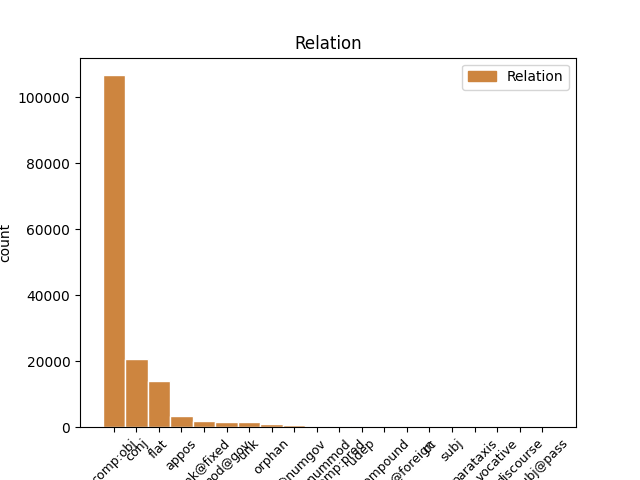
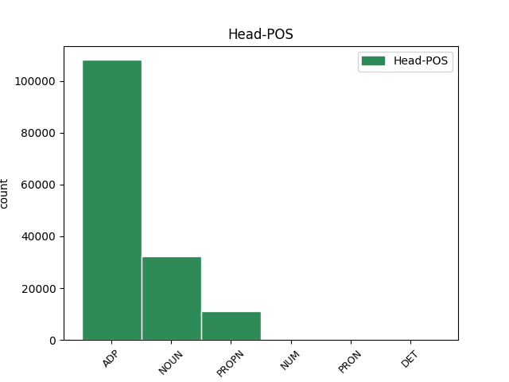
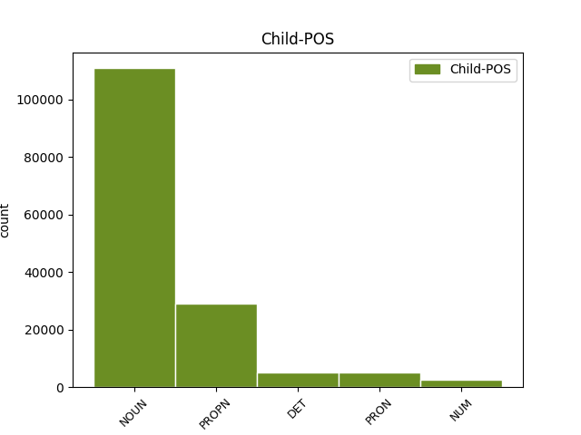

Distribution of features within this leaf



Agreement Rules sorted by frequency.
- When the dependent token is the direct object complements(comp:obj) of the head token, and the head token is ADP and the dependent token is NOUN.
1 na na ADP RR--6---------- AdpType=Prep|Case=Loc 0 _ _ _
2 kosmické _ _ _ _ 0 _ _ _
3 střelnici střelnice NOUN NNFS6-----A---- Case=Loc|Gender=Fem|Number=Sing|Polarity=Pos 1 comp:obj _ _
4 zvané _ _ _ _ 0 _ _ _
5 sluneční _ _ _ _ 0 _ _ _
6 soustava _ _ _ _ 0 _ _ _
7 to _ _ _ _ 0 _ _ _
8 bude _ _ _ _ 0 _ _ _
9 téměř _ _ _ _ 0 _ _ _
10 jistě _ _ _ _ 0 _ _ _
11 člověk _ _ _ _ 0 _ _ _
12 , _ _ _ _ 0 _ _ _
13 kdo _ _ _ _ 0 _ _ _
14 vytasí _ _ _ _ 0 _ _ _
15 jako _ _ _ _ 0 _ _ _
16 prvý _ _ _ _ 0 _ _ _
17 . _ _ _ _ 0 _ _ _
1 Otec _ _ _ _ 0 _ _ _
2 americké _ _ _ _ 0 _ _ _
3 vodíkové _ _ _ _ 0 _ _ _
4 pumy _ _ _ _ 0 _ _ _
5 Edward _ _ _ _ 0 _ _ _
6 Teller _ _ _ _ 0 _ _ _
7 se _ _ _ _ 0 _ _ _
8 už _ _ _ _ 0 _ _ _
9 nechal _ _ _ _ 0 _ _ _
10 slyšet _ _ _ _ 0 _ _ _
11 , _ _ _ _ 0 _ _ _
12 že _ _ _ _ 0 _ _ _
13 by _ _ _ _ 0 _ _ _
14 se _ _ _ _ 0 _ _ _
15 mohla _ _ _ _ 0 _ _ _
16 vyvinout _ _ _ _ 0 _ _ _
17 kosmická _ _ _ _ 0 _ _ _
18 bomba _ _ _ _ 0 _ _ _
19 na _ _ _ _ 0 _ _ _
20 úrovni _ _ _ _ 0 _ _ _
21 sto _ _ _ _ 0 _ _ _
22 gigatun _ _ _ _ 0 _ _ _
23 ( _ _ _ _ 0 _ _ _
24 ! _ _ _ _ 0 _ _ _
25 ! _ _ _ _ 0 _ _ _
26 ) _ _ _ _ 0 _ _ _
27 TNT _ _ _ _ 0 _ _ _
28 , _ _ _ _ 0 _ _ _
29 což _ _ _ _ 0 _ _ _
30 vyvolalo _ _ _ _ 0 _ _ _
31 zděšení _ _ _ _ 0 _ _ _
32 mezi _ _ _ _ 0 _ _ _
33 astronomy astronom NOUN NNMP7-----A---- Animacy=Anim|Case=Ins|Gender=Masc|Number=Plur|Polarity=Pos 0 _ _ _
34 i _ _ _ _ 0 _ _ _
35 novináři novinář NOUN NNMP7-----A---- Animacy=Anim|Case=Ins|Gender=Masc|Number=Plur|Polarity=Pos 33 conj _ SpaceAfter=No
36 . _ _ _ _ 0 _ _ _
1 Mezi _ _ _ _ 0 _ _ _
2 nejúspěšnější _ _ _ _ 0 _ _ _
3 zařízení _ _ _ _ 0 _ _ _
4 tohoto _ _ _ _ 0 _ _ _
5 druhu _ _ _ _ 0 _ _ _
6 patří _ _ _ _ 0 _ _ _
7 Maksutova _ _ _ _ 0 _ _ _
8 komora _ _ _ _ 0 _ _ _
9 na _ _ _ _ 0 _ _ _
10 Kleti _ _ _ _ 0 _ _ _
11 v v ADP RR--6---------- AdpType=Prep|Case=Loc 0 _ _ _
12 jižních _ _ _ _ 0 _ _ _
13 Čechách Čechy PROPN NNFP6-----A---- Case=Loc|Gender=Fem|NameType=Geo|Number=Plur|Polarity=Pos 11 comp:obj _ SpaceAfter=No
14 , _ _ _ _ 0 _ _ _
15 kde _ _ _ _ 0 _ _ _
16 bylo _ _ _ _ 0 _ _ _
17 v _ _ _ _ 0 _ _ _
18 uplynulých _ _ _ _ 0 _ _ _
19 desetiletích _ _ _ _ 0 _ _ _
20 zejména _ _ _ _ 0 _ _ _
21 zásluhou _ _ _ _ 0 _ _ _
22 A _ _ _ _ 0 _ _ _
23 . _ _ _ _ 0 _ _ _
24 Mrkose _ _ _ _ 0 _ _ _
25 objeveno _ _ _ _ 0 _ _ _
26 několik _ _ _ _ 0 _ _ _
27 set _ _ _ _ 0 _ _ _
28 planetek _ _ _ _ 0 _ _ _
29 a _ _ _ _ 0 _ _ _
30 také _ _ _ _ 0 _ _ _
31 několik _ _ _ _ 0 _ _ _
32 komet _ _ _ _ 0 _ _ _
33 . _ _ _ _ 0 _ _ _
1 Otec otec NOUN NNMS1-----A---- Animacy=Anim|Case=Nom|Gender=Masc|Number=Sing|Polarity=Pos 0 _ _ _
2 americké _ _ _ _ 0 _ _ _
3 vodíkové _ _ _ _ 0 _ _ _
4 pumy _ _ _ _ 0 _ _ _
5 Edward _ _ _ _ 0 _ _ _
6 Teller Teller PROPN NNMS1-----A---- Animacy=Anim|Case=Nom|Gender=Masc|NameType=Sur|Number=Sing|Polarity=Pos 1 flat _ _
7 se _ _ _ _ 0 _ _ _
8 už _ _ _ _ 0 _ _ _
9 nechal _ _ _ _ 0 _ _ _
10 slyšet _ _ _ _ 0 _ _ _
11 , _ _ _ _ 0 _ _ _
12 že _ _ _ _ 0 _ _ _
13 by _ _ _ _ 0 _ _ _
14 se _ _ _ _ 0 _ _ _
15 mohla _ _ _ _ 0 _ _ _
16 vyvinout _ _ _ _ 0 _ _ _
17 kosmická _ _ _ _ 0 _ _ _
18 bomba _ _ _ _ 0 _ _ _
19 na _ _ _ _ 0 _ _ _
20 úrovni _ _ _ _ 0 _ _ _
21 sto _ _ _ _ 0 _ _ _
22 gigatun _ _ _ _ 0 _ _ _
23 ( _ _ _ _ 0 _ _ _
24 ! _ _ _ _ 0 _ _ _
25 ! _ _ _ _ 0 _ _ _
26 ) _ _ _ _ 0 _ _ _
27 TNT _ _ _ _ 0 _ _ _
28 , _ _ _ _ 0 _ _ _
29 což _ _ _ _ 0 _ _ _
30 vyvolalo _ _ _ _ 0 _ _ _
31 zděšení _ _ _ _ 0 _ _ _
32 mezi _ _ _ _ 0 _ _ _
33 astronomy _ _ _ _ 0 _ _ _
34 i _ _ _ _ 0 _ _ _
35 novináři _ _ _ _ 0 _ _ _
36 . _ _ _ _ 0 _ _ _
1 Již _ _ _ _ 0 _ _ _
2 r _ _ _ _ 0 _ _ _
3 . _ _ _ _ 0 _ _ _
4 1984 _ _ _ _ 0 _ _ _
5 publikoval _ _ _ _ 0 _ _ _
6 Lowell Lowell PROPN NNMS1-----A---- Animacy=Anim|Case=Nom|Gender=Masc|NameType=Geo,Sur|Number=Sing|Polarity=Pos 0 _ _ _
7 Wood Wood PROPN NNMS1-----A---- Animacy=Anim|Case=Nom|Gender=Masc|NameType=Sur|Number=Sing|Polarity=Pos 6 flat _ _
8 ze _ _ _ _ 0 _ _ _
9 Státní _ _ _ _ 0 _ _ _
10 Lawrencovy _ _ _ _ 0 _ _ _
11 laboratoře _ _ _ _ 0 _ _ _
12 v _ _ _ _ 0 _ _ _
13 Livermore _ _ _ _ 0 _ _ _
14 interní _ _ _ _ 0 _ _ _
15 zprávu _ _ _ _ 0 _ _ _
16 , _ _ _ _ 0 _ _ _
17 v _ _ _ _ 0 _ _ _
18 níž _ _ _ _ 0 _ _ _
19 navrhoval _ _ _ _ 0 _ _ _
20 pokusné _ _ _ _ 0 _ _ _
21 ničení _ _ _ _ 0 _ _ _
22 malých _ _ _ _ 0 _ _ _
23 planetek _ _ _ _ 0 _ _ _
24 , _ _ _ _ 0 _ _ _
25 které _ _ _ _ 0 _ _ _
26 poletí _ _ _ _ 0 _ _ _
27 v _ _ _ _ 0 _ _ _
28 dostatečně _ _ _ _ 0 _ _ _
29 malé _ _ _ _ 0 _ _ _
30 vzdálenosti _ _ _ _ 0 _ _ _
31 kolem _ _ _ _ 0 _ _ _
32 Země _ _ _ _ 0 _ _ _
33 . _ _ _ _ 0 _ _ _
1 Již _ _ _ _ 0 _ _ _
2 r _ _ _ _ 0 _ _ _
3 . _ _ _ _ 0 _ _ _
4 1984 _ _ _ _ 0 _ _ _
5 publikoval _ _ _ _ 0 _ _ _
6 Lowell _ _ _ _ 0 _ _ _
7 Wood _ _ _ _ 0 _ _ _
8 ze _ _ _ _ 0 _ _ _
9 Státní _ _ _ _ 0 _ _ _
10 Lawrencovy _ _ _ _ 0 _ _ _
11 laboratoře _ _ _ _ 0 _ _ _
12 v _ _ _ _ 0 _ _ _
13 Livermore _ _ _ _ 0 _ _ _
14 interní _ _ _ _ 0 _ _ _
15 zprávu _ _ _ _ 0 _ _ _
16 , _ _ _ _ 0 _ _ _
17 v v ADP RR--6---------- AdpType=Prep|Case=Loc 0 _ _ _
18 níž jenž PRON P9FS6---------- Case=Loc|Gender=Fem|Number=Sing|PrepCase=Pre|PronType=Rel 17 comp:obj _ LGloss=(který_[ve_vedl.větě])
19 navrhoval _ _ _ _ 0 _ _ _
20 pokusné _ _ _ _ 0 _ _ _
21 ničení _ _ _ _ 0 _ _ _
22 malých _ _ _ _ 0 _ _ _
23 planetek _ _ _ _ 0 _ _ _
24 , _ _ _ _ 0 _ _ _
25 které _ _ _ _ 0 _ _ _
26 poletí _ _ _ _ 0 _ _ _
27 v _ _ _ _ 0 _ _ _
28 dostatečně _ _ _ _ 0 _ _ _
29 malé _ _ _ _ 0 _ _ _
30 vzdálenosti _ _ _ _ 0 _ _ _
31 kolem _ _ _ _ 0 _ _ _
32 Země _ _ _ _ 0 _ _ _
33 . _ _ _ _ 0 _ _ _
1 Všechny _ _ _ _ 0 _ _ _
2 dohromady _ _ _ _ 0 _ _ _
3 i _ _ _ _ 0 _ _ _
4 s _ _ _ _ 0 _ _ _
5 Islandem Island PROPN NNIS7-----A---- Animacy=Inan|Case=Ins|Gender=Masc|NameType=Geo|Number=Sing|Polarity=Pos 0 _ _ _
6 , _ _ _ _ 0 _ _ _
7 Grónskem Grónsko PROPN NNNS7-----A---- Case=Ins|Gender=Neut|NameType=Geo|Number=Sing|Polarity=Pos 5 conj _ _
8 a _ _ _ _ 0 _ _ _
9 Faerskými _ _ _ _ 0 _ _ _
10 ostrovy _ _ _ _ 0 _ _ _
11 nedají _ _ _ _ 0 _ _ _
12 dohromady _ _ _ _ 0 _ _ _
13 25 _ _ _ _ 0 _ _ _
14 miliónů _ _ _ _ 0 _ _ _
15 obyvatel _ _ _ _ 0 _ _ _
16 . _ _ _ _ 0 _ _ _
1 Ve _ _ _ _ 0 _ _ _
2 vzdálenosti _ _ _ _ 0 _ _ _
3 150 _ _ _ _ 0 _ _ _
4 miliónů _ _ _ _ 0 _ _ _
5 km _ _ _ _ 0 _ _ _
6 ( _ _ _ _ 0 _ _ _
7 ekvivalent _ _ _ _ 0 _ _ _
8 vzdálenosti _ _ _ _ 0 _ _ _
9 Slunce _ _ _ _ 0 _ _ _
10 - _ _ _ _ 0 _ _ _
11 Země _ _ _ _ 0 _ _ _
12 ) _ _ _ _ 0 _ _ _
13 stačí _ _ _ _ 0 _ _ _
14 na _ _ _ _ 0 _ _ _
15 udělení _ _ _ _ 0 _ _ _
16 postačující _ _ _ _ 0 _ _ _
17 příčné _ _ _ _ 0 _ _ _
18 složky _ _ _ _ 0 _ _ _
19 rychlosti _ _ _ _ 0 _ _ _
20 asi _ _ _ _ 0 _ _ _
21 1 _ _ _ _ 0 _ _ _
22 Mt _ _ _ _ 0 _ _ _
23 TNT _ _ _ _ 0 _ _ _
24 , _ _ _ _ 0 _ _ _
25 ale _ _ _ _ 0 _ _ _
26 k k ADP RR--3---------- AdpType=Prep|Case=Dat 0 _ _ _
27 tomu ten DET PDZS3---------- Case=Dat|Gender=Masc,Neut|Number=Sing|PronType=Dem 26 comp:obj _ _
28 je _ _ _ _ 0 _ _ _
29 třeba _ _ _ _ 0 _ _ _
30 připočítat _ _ _ _ 0 _ _ _
31 další _ _ _ _ 0 _ _ _
32 nemalou _ _ _ _ 0 _ _ _
33 energii _ _ _ _ 0 _ _ _
34 potřebnou _ _ _ _ 0 _ _ _
35 pro _ _ _ _ 0 _ _ _
36 rozbití _ _ _ _ 0 _ _ _
37 planetky _ _ _ _ 0 _ _ _
38 či _ _ _ _ 0 _ _ _
39 jádra _ _ _ _ 0 _ _ _
40 komety _ _ _ _ 0 _ _ _
41 na _ _ _ _ 0 _ _ _
42 dva _ _ _ _ 0 _ _ _
43 kusy _ _ _ _ 0 _ _ _
44 . _ _ _ _ 0 _ _ _
1 Patrně _ _ _ _ 0 _ _ _
2 si _ _ _ _ 0 _ _ _
3 neuvědomili _ _ _ _ 0 _ _ _
4 , _ _ _ _ 0 _ _ _
5 že _ _ _ _ 0 _ _ _
6 do _ _ _ _ 0 _ _ _
7 hry _ _ _ _ 0 _ _ _
8 se _ _ _ _ 0 _ _ _
9 mohou _ _ _ _ 0 _ _ _
10 vložit _ _ _ _ 0 _ _ _
11 i _ _ _ _ 0 _ _ _
12 odborníci odborník NOUN NNMP1-----A---- Animacy=Anim|Case=Nom|Gender=Masc|Number=Plur|Polarity=Pos 0 _ _ _
13 s _ _ _ _ 0 _ _ _
14 úplně _ _ _ _ 0 _ _ _
15 jinou _ _ _ _ 0 _ _ _
16 tradicí _ _ _ _ 0 _ _ _
17 a _ _ _ _ 0 _ _ _
18 způsoby _ _ _ _ 0 _ _ _
19 řešení _ _ _ _ 0 _ _ _
20 problémů _ _ _ _ 0 _ _ _
21 - _ _ _ _ 0 _ _ _
22 totiž _ _ _ _ 0 _ _ _
23 vojenští _ _ _ _ 0 _ _ _
24 experti expert NOUN NNMP1-----A---1 Animacy=Anim|Case=Nom|Gender=Masc|Number=Plur|Polarity=Pos 12 appos _ _
25 na _ _ _ _ 0 _ _ _
26 tzv _ _ _ _ 0 _ _ _
27 . _ _ _ _ 0 _ _ _
28 hvězdné _ _ _ _ 0 _ _ _
29 války _ _ _ _ 0 _ _ _
30 . _ _ _ _ 0 _ _ _
1 patří _ _ _ _ 0 _ _ _
2 tedy _ _ _ _ 0 _ _ _
3 do _ _ _ _ 0 _ _ _
4 kategorie _ _ _ _ 0 _ _ _
5 těles _ _ _ _ 0 _ _ _
6 primárně _ _ _ _ 0 _ _ _
7 nebezpečných _ _ _ _ 0 _ _ _
8 , _ _ _ _ 0 _ _ _
9 ale _ _ _ _ 0 _ _ _
10 na na ADP RR--4---------- AdpType=Prep|Case=Acc 0 _ _ _
11 rozdíl rozdíl NOUN NNIS4-----A---- Animacy=Inan|Case=Acc|Gender=Masc|Number=Sing|Polarity=Pos 10 unk@fixed _ _
12 od _ _ _ _ 0 _ _ _
13 tvrzení _ _ _ _ 0 _ _ _
14 v _ _ _ _ 0 _ _ _
15 denním _ _ _ _ 0 _ _ _
16 tisku _ _ _ _ 0 _ _ _
17 se _ _ _ _ 0 _ _ _
18 v _ _ _ _ 0 _ _ _
19 " _ _ _ _ 0 _ _ _
20 dohledné _ _ _ _ 0 _ _ _
21 budoucnosti _ _ _ _ 0 _ _ _
22 " _ _ _ _ 0 _ _ _
23 se _ _ _ _ 0 _ _ _
24 Zemí _ _ _ _ 0 _ _ _
25 nesrazí _ _ _ _ 0 _ _ _
26 . _ _ _ _ 0 _ _ _
1 Při _ _ _ _ 0 _ _ _
2 ropných _ _ _ _ 0 _ _ _
3 vrtech _ _ _ _ 0 _ _ _
4 v _ _ _ _ 0 _ _ _
5 oblasti _ _ _ _ 0 _ _ _
6 severního _ _ _ _ 0 _ _ _
7 Yucatanu _ _ _ _ 0 _ _ _
8 v _ _ _ _ 0 _ _ _
9 Mexiku _ _ _ _ 0 _ _ _
10 nalezl _ _ _ _ 0 _ _ _
11 již _ _ _ _ 0 _ _ _
12 r _ _ _ _ 0 _ _ _
13 . _ _ _ _ 0 _ _ _
14 1978 _ _ _ _ 0 _ _ _
15 geolog _ _ _ _ 0 _ _ _
16 Glen _ _ _ _ 0 _ _ _
17 Penfield _ _ _ _ 0 _ _ _
18 zřetelné _ _ _ _ 0 _ _ _
19 důkazy _ _ _ _ 0 _ _ _
20 o _ _ _ _ 0 _ _ _
21 horninách _ _ _ _ 0 _ _ _
22 vystavených _ _ _ _ 0 _ _ _
23 enormním _ _ _ _ 0 _ _ _
24 tlakům _ _ _ _ 0 _ _ _
25 a _ _ _ _ 0 _ _ _
26 odhalil _ _ _ _ 0 _ _ _
27 tak _ _ _ _ 0 _ _ _
28 zasypaný _ _ _ _ 0 _ _ _
29 a _ _ _ _ 0 _ _ _
30 zčásti _ _ _ _ 0 _ _ _
31 do _ _ _ _ 0 _ _ _
32 moře _ _ _ _ 0 _ _ _
33 ponořený _ _ _ _ 0 _ _ _
34 kráter _ _ _ _ 0 _ _ _
35 Chicxulub Chicxulub PROPN NNIS1-----A---- Animacy=Inan|Case=Nom|Gender=Masc|NameType=Geo|Number=Sing|Polarity=Pos 0 _ _ _
36 ( _ _ _ _ 0 _ _ _
37 v _ _ _ _ 0 _ _ _
38 překladu _ _ _ _ 0 _ _ _
39 " _ _ _ _ 0 _ _ _
40 Ďáblovy _ _ _ _ 0 _ _ _
41 rohy roh NOUN NNIP1-----A---- Animacy=Inan|Case=Nom|Gender=Masc|Number=Plur|Polarity=Pos 35 appos _ SpaceAfter=No
42 " _ _ _ _ 0 _ _ _
43 ) _ _ _ _ 0 _ _ _
44 o _ _ _ _ 0 _ _ _
45 hloubce _ _ _ _ 0 _ _ _
46 až _ _ _ _ 0 _ _ _
47 9 _ _ _ _ 0 _ _ _
48 km _ _ _ _ 0 _ _ _
49 a _ _ _ _ 0 _ _ _
50 průměru _ _ _ _ 0 _ _ _
51 200 _ _ _ _ 0 _ _ _
52 km _ _ _ _ 0 _ _ _
53 . _ _ _ _ 0 _ _ _
1 Všechny _ _ _ _ 0 _ _ _
2 dohromady _ _ _ _ 0 _ _ _
3 i _ _ _ _ 0 _ _ _
4 s _ _ _ _ 0 _ _ _
5 Islandem _ _ _ _ 0 _ _ _
6 , _ _ _ _ 0 _ _ _
7 Grónskem Grónsko PROPN NNNS7-----A---- Case=Ins|Gender=Neut|NameType=Geo|Number=Sing|Polarity=Pos 0 _ _ _
8 a _ _ _ _ 0 _ _ _
9 Faerskými _ _ _ _ 0 _ _ _
10 ostrovy ostrov NOUN NNIP7-----A---- Animacy=Inan|Case=Ins|Gender=Masc|Number=Plur|Polarity=Pos 7 conj _ _
11 nedají _ _ _ _ 0 _ _ _
12 dohromady _ _ _ _ 0 _ _ _
13 25 _ _ _ _ 0 _ _ _
14 miliónů _ _ _ _ 0 _ _ _
15 obyvatel _ _ _ _ 0 _ _ _
16 . _ _ _ _ 0 _ _ _
1 Dosavadní _ _ _ _ 0 _ _ _
2 metoda _ _ _ _ 0 _ _ _
3 detekce _ _ _ _ 0 _ _ _
4 planetek _ _ _ _ 0 _ _ _
5 i _ _ _ _ 0 _ _ _
6 komet _ _ _ _ 0 _ _ _
7 se _ _ _ _ 0 _ _ _
8 opírá _ _ _ _ 0 _ _ _
9 o _ _ _ _ 0 _ _ _
10 sledování _ _ _ _ 0 _ _ _
11 oblohy _ _ _ _ 0 _ _ _
12 širokoúhlými _ _ _ _ 0 _ _ _
13 fotografickými _ _ _ _ 0 _ _ _
14 komorami _ _ _ _ 0 _ _ _
15 , _ _ _ _ 0 _ _ _
16 které _ _ _ _ 0 _ _ _
17 pracují _ _ _ _ 0 _ _ _
18 na _ _ _ _ 0 _ _ _
19 několika několik DET Ca--6---------- Case=Loc|NumType=Card|PronType=Ind 21 det@nummod _ _
20 vhodných _ _ _ _ 0 _ _ _
21 místech místo NOUN NNNP6-----A---- Case=Loc|Gender=Neut|Number=Plur|Polarity=Pos 0 _ _ _
22 na _ _ _ _ 0 _ _ _
23 světě _ _ _ _ 0 _ _ _
24 za _ _ _ _ 0 _ _ _
25 každé _ _ _ _ 0 _ _ _
26 jasné _ _ _ _ 0 _ _ _
27 bezměsíčné _ _ _ _ 0 _ _ _
28 noci _ _ _ _ 0 _ _ _
29 . _ _ _ _ 0 _ _ _
1 ( _ _ _ _ 0 _ _ _
2 V v ADP RR--6---------- AdpType=Prep|Case=Loc 0 _ _ _
3 jednom jeden NUM ClZS6---------- Case=Loc|Gender=Masc,Neut|Number=Sing|NumForm=Word|NumType=Card|NumValue=1,2,3 2 comp:obj _ LNumValue=1
4 z _ _ _ _ 0 _ _ _
5 našich _ _ _ _ 0 _ _ _
6 starších _ _ _ _ 0 _ _ _
7 lidových _ _ _ _ 0 _ _ _
8 vydání _ _ _ _ 0 _ _ _
9 tohoto _ _ _ _ 0 _ _ _
10 díla _ _ _ _ 0 _ _ _
11 je _ _ _ _ 0 _ _ _
12 tato _ _ _ _ 0 _ _ _
13 charakteristika _ _ _ _ 0 _ _ _
14 nahrazena _ _ _ _ 0 _ _ _
15 takto _ _ _ _ 0 _ _ _
16 : _ _ _ _ 0 _ _ _
17 " _ _ _ _ 0 _ _ _
18 Češi _ _ _ _ 0 _ _ _
19 jsou _ _ _ _ 0 _ _ _
20 nejlepší _ _ _ _ 0 _ _ _
21 na _ _ _ _ 0 _ _ _
22 sekery _ _ _ _ 0 _ _ _
23 . _ _ _ _ 0 _ _ _
24 . _ _ _ _ 0 _ _ _
25 . _ _ _ _ 0 _ _ _
26 " _ _ _ _ 0 _ _ _
27 ) _ _ _ _ 0 _ _ _
1 Z _ _ _ _ 0 _ _ _
2 lékařů _ _ _ _ 0 _ _ _
3 byli _ _ _ _ 0 _ _ _
4 přítomni _ _ _ _ 0 _ _ _
5 dr _ _ _ _ 0 _ _ _
6 . _ _ _ _ 0 _ _ _
7 František _ _ _ _ 0 _ _ _
8 Löw _ _ _ _ 0 _ _ _
9 z _ _ _ _ 0 _ _ _
10 Erlsfeldu _ _ _ _ 0 _ _ _
11 - _ _ _ _ 0 _ _ _
12 první _ _ _ _ 0 _ _ _
13 profesor _ _ _ _ 0 _ _ _
14 soudního _ _ _ _ 0 _ _ _
15 lékařství _ _ _ _ 0 _ _ _
16 na _ _ _ _ 0 _ _ _
17 staroslavném _ _ _ _ 0 _ _ _
18 učení _ _ _ _ 0 _ _ _
19 pražském _ _ _ _ 0 _ _ _
20 , _ _ _ _ 0 _ _ _
21 vícenásobný _ _ _ _ 0 _ _ _
22 děkan _ _ _ _ 0 _ _ _
23 lékařské _ _ _ _ 0 _ _ _
24 fakulty _ _ _ _ 0 _ _ _
25 a _ _ _ _ 0 _ _ _
26 lékař lékař NOUN NNMS1-----A---- Animacy=Anim|Case=Nom|Gender=Masc|Number=Sing|Polarity=Pos 0 _ _ _
27 císaře _ _ _ _ 0 _ _ _
28 Leopolda _ _ _ _ 0 _ _ _
29 I _ _ _ _ 0 _ _ _
30 . _ _ _ _ 0 _ _ _
31 , _ _ _ _ 0 _ _ _
32 dr _ _ _ _ 0 _ _ _
33 . _ _ _ _ 0 _ _ _
34 Šebestián _ _ _ _ 0 _ _ _
35 Fuchs _ _ _ _ 0 _ _ _
36 , _ _ _ _ 0 _ _ _
37 dr _ _ _ _ 0 _ _ _
38 . _ _ _ _ 0 _ _ _
39 Jan Jan PROPN NNMS1-----A---- Animacy=Anim|Case=Nom|Gender=Masc|NameType=Giv|Number=Sing|Polarity=Pos 26 conj _ _
40 Karel _ _ _ _ 0 _ _ _
41 Puchman _ _ _ _ 0 _ _ _
42 , _ _ _ _ 0 _ _ _
43 chirurg _ _ _ _ 0 _ _ _
44 Jan _ _ _ _ 0 _ _ _
45 Jakub _ _ _ _ 0 _ _ _
46 Schutzbredt _ _ _ _ 0 _ _ _
47 a _ _ _ _ 0 _ _ _
48 chirurg _ _ _ _ 0 _ _ _
49 Ferdinand _ _ _ _ 0 _ _ _
50 Schober _ _ _ _ 0 _ _ _
51 . _ _ _ _ 0 _ _ _
1 Žádný _ _ _ _ 0 _ _ _
2 z _ _ _ _ 0 _ _ _
3 obrů _ _ _ _ 0 _ _ _
4 vztyčených _ _ _ _ 0 _ _ _
5 cizákem cizák NOUN NNMS7-----A---- Animacy=Anim|Case=Ins|Gender=Masc|Number=Sing|Polarity=Pos 0 _ _ _
6 - _ _ _ _ 0 _ _ _
7 Habsburkem Habsburk PROPN NNMS7-----A---- Animacy=Anim|Case=Ins|Gender=Masc|NameType=Sur|Number=Sing|Polarity=Pos 5 appos _ _
8 před _ _ _ _ 0 _ _ _
9 Matyášovou _ _ _ _ 0 _ _ _
10 branou _ _ _ _ 0 _ _ _
11 Hradu _ _ _ _ 0 _ _ _
12 není _ _ _ _ 0 _ _ _
13 vyzbrojen _ _ _ _ 0 _ _ _
14 válečnou _ _ _ _ 0 _ _ _
15 sekerou _ _ _ _ 0 _ _ _
16 ( _ _ _ _ 0 _ _ _
17 0 _ _ _ _ 0 _ _ _
18 % _ _ _ _ 0 _ _ _
19 ! _ _ _ _ 0 _ _ _
20 ) _ _ _ _ 0 _ _ _
21 . _ _ _ _ 0 _ _ _
1 Sběrná _ _ _ _ 0 _ _ _
2 oblast _ _ _ _ 0 _ _ _
3 vod _ _ _ _ 0 _ _ _
4 srážejících _ _ _ _ 0 _ _ _
5 kalcitové _ _ _ _ 0 _ _ _
6 žíly _ _ _ _ 0 _ _ _
7 leží _ _ _ _ 0 _ _ _
8 ve _ _ _ _ 0 _ _ _
9 vzdálenosti _ _ _ _ 0 _ _ _
10 asi _ _ _ _ 0 _ _ _
11 100 _ _ _ _ 0 _ _ _
12 km _ _ _ _ 0 _ _ _
13 a _ _ _ _ 0 _ _ _
14 vodám _ _ _ _ 0 _ _ _
15 prosakujícím _ _ _ _ 0 _ _ _
16 do _ _ _ _ 0 _ _ _
17 deprese _ _ _ _ 0 _ _ _
18 to _ _ _ _ 0 _ _ _
19 trvá _ _ _ _ 0 _ _ _
20 nejméně _ _ _ _ 0 _ _ _
21 několik _ _ _ _ 0 _ _ _
22 tisíc tisíc NUM ClXS2---------- Case=Gen|Number=Sing|NumForm=Word|NumType=Card|NumValue=1,2,3 23 mod@gov _ LId=tisíc-1|LNumValue=1000
23 let rok NOUN NNNP2-----A---- Case=Gen|Gender=Neut|Number=Plur|Polarity=Pos 0 _ _ _
24 , _ _ _ _ 0 _ _ _
25 než _ _ _ _ 0 _ _ _
26 dorazí _ _ _ _ 0 _ _ _
27 na _ _ _ _ 0 _ _ _
28 místo _ _ _ _ 0 _ _ _
29 vzniku _ _ _ _ 0 _ _ _
30 žíly _ _ _ _ 0 _ _ _
31 . _ _ _ _ 0 _ _ _
1 Dýchání _ _ _ _ 0 _ _ _
2 , _ _ _ _ 0 _ _ _
3 vysoké _ _ _ _ 0 _ _ _
4 hory hora NOUN NNFP1-----A---- Case=Nom|Gender=Fem|Number=Plur|Polarity=Pos 0 _ _ _
5 , _ _ _ _ 0 _ _ _
6 krevní _ _ _ _ 0 _ _ _
7 doping doping NOUN NNIS1-----A---- Animacy=Inan|Case=Nom|Gender=Masc|Number=Sing|Polarity=Pos 4 orphan _ _
1 Jen _ _ _ _ 0 _ _ _
2 některé _ _ _ _ 0 _ _ _
3 kysličníky kysličník NOUN NNIP1-----A---- Animacy=Inan|Case=Nom|Gender=Masc|Number=Plur|Polarity=Pos 0 _ _ _
4 ( _ _ _ _ 0 _ _ _
5 tedy _ _ _ _ 0 _ _ _
6 dnes _ _ _ _ 0 _ _ _
7 oxidy oxid NOUN NNIP1-----A---- Animacy=Inan|Case=Nom|Gender=Masc|Number=Plur|Polarity=Pos 3 unk _ SpaceAfter=No
8 ) _ _ _ _ 0 _ _ _
9 však _ _ _ _ 0 _ _ _
10 dávají _ _ _ _ 0 _ _ _
11 s _ _ _ _ 0 _ _ _
12 vodou _ _ _ _ 0 _ _ _
13 vznik _ _ _ _ 0 _ _ _
14 kyselinám _ _ _ _ 0 _ _ _
15 , _ _ _ _ 0 _ _ _
16 jsou _ _ _ _ 0 _ _ _
17 " _ _ _ _ 0 _ _ _
18 okyselující _ _ _ _ 0 _ _ _
19 " _ _ _ _ 0 _ _ _
20 . _ _ _ _ 0 _ _ _
1 Hutchinson Hutchinson PROPN NNMS1-----A---- Animacy=Anim|Case=Nom|Gender=Masc|NameType=Sur|Number=Sing|Polarity=Pos 0 _ _ _
2 , _ _ _ _ 0 _ _ _
3 Londýn Londýn PROPN NNIS1-----A---- Animacy=Inan|Case=Nom|Gender=Masc|NameType=Geo|Number=Sing|Polarity=Pos 1 unk _ SpaceAfter=No
4 , _ _ _ _ 0 _ _ _
5 480 _ _ _ _ 0 _ _ _
6 str _ _ _ _ 0 _ _ _
7 . _ _ _ _ 0 _ _ _
1 ( _ _ _ _ 0 _ _ _
2 anglický _ _ _ _ 0 _ _ _
3 překlad překlad NOUN NNIS1-----A---- Animacy=Inan|Case=Nom|Gender=Masc|Number=Sing|Polarity=Pos 0 _ _ _
4 německého _ _ _ _ 0 _ _ _
5 originálu _ _ _ _ 0 _ _ _
6 Logik _ _ _ _ 0 _ _ _
7 der _ _ _ _ 0 _ _ _
8 Forschung _ _ _ _ 0 _ _ _
9 , _ _ _ _ 0 _ _ _
10 Vídeň Vídeň PROPN NNFS1-----A---- Case=Nom|Gender=Fem|NameType=Geo|Number=Sing|Polarity=Pos 3 unk _ SpaceAfter=No
11 , _ _ _ _ 0 _ _ _
12 1935 _ _ _ _ 0 _ _ _
13 ) _ _ _ _ 0 _ _ _
14 , _ _ _ _ 0 _ _ _
15 1959 _ _ _ _ 0 _ _ _
16 . _ _ _ _ 0 _ _ _
1 Věda věda NOUN NNFS1-----A---- Case=Nom|Gender=Fem|Number=Sing|Polarity=Pos 0 _ _ _
2 , _ _ _ _ 0 _ _ _
3 důležitý _ _ _ _ 0 _ _ _
4 produkt _ _ _ _ 0 _ _ _
5 lidské _ _ _ _ 0 _ _ _
6 společnosti _ _ _ _ 0 _ _ _
7 , _ _ _ _ 0 _ _ _
8 který _ _ _ _ 0 _ _ _
9 ji _ _ _ _ 0 _ _ _
10 současně _ _ _ _ 0 _ _ _
11 výrazně _ _ _ _ 0 _ _ _
12 ovlivňuje _ _ _ _ 0 _ _ _
13 , _ _ _ _ 0 _ _ _
14 se _ _ _ _ 0 _ _ _
15 občas _ _ _ _ 0 _ _ _
16 zamýšlí _ _ _ _ 0 _ _ _
17 i _ _ _ _ 0 _ _ _
18 sama sám DET PLFS1---------- Case=Nom|Gender=Fem|Number=Sing|PronType=Emp 1 comp:pred _ LGloss=(samotný)
19 nad _ _ _ _ 0 _ _ _
20 sebou _ _ _ _ 0 _ _ _
21 . _ _ _ _ 0 _ _ _
1 Takže _ _ _ _ 0 _ _ _
2 TASME _ _ _ _ 0 _ _ _
3 , _ _ _ _ 0 _ _ _
4 ale _ _ _ _ 0 _ _ _
5 uvědomme _ _ _ _ 0 _ _ _
6 si _ _ _ _ 0 _ _ _
7 s _ _ _ _ 0 _ _ _
8 jakou _ _ _ _ 0 _ _ _
9 pravděpodobností _ _ _ _ 0 _ _ _
10 a _ _ _ _ 0 _ _ _
11 odkud _ _ _ _ 0 _ _ _
12 a _ _ _ _ 0 _ _ _
13 kdy _ _ _ _ 0 _ _ _
14 může _ _ _ _ 0 _ _ _
15 úder _ _ _ _ 0 _ _ _
16 přijít _ _ _ _ 0 _ _ _
17 , _ _ _ _ 0 _ _ _
18 zda _ _ _ _ 0 _ _ _
19 budeme _ _ _ _ 0 _ _ _
20 za _ _ _ _ 0 _ _ _
21 nějakých _ _ _ _ 0 _ _ _
22 dvacet dvacet NUM Cn-S4---------- Case=Acc|Number=Sing|NumForm=Word|NumType=Card 0 _ _ _
23 , _ _ _ _ 0 _ _ _
24 padesát padesát NUM Cn-S4---------- Case=Acc|Number=Sing|NumForm=Word|NumType=Card 22 conj _ LNumValue=50
25 či _ _ _ _ 0 _ _ _
26 dvě _ _ _ _ 0 _ _ _
27 stovky _ _ _ _ 0 _ _ _
28 let _ _ _ _ 0 _ _ _
29 natolik _ _ _ _ 0 _ _ _
30 zdraví _ _ _ _ 0 _ _ _
31 , _ _ _ _ 0 _ _ _
32 aby _ _ _ _ 0 _ _ _
33 by _ _ _ _ 0 _ _ _
34 se _ _ _ _ 0 _ _ _
35 nám _ _ _ _ 0 _ _ _
36 dostávalo _ _ _ _ 0 _ _ _
37 sil _ _ _ _ 0 _ _ _
38 a _ _ _ _ 0 _ _ _
39 zejména _ _ _ _ 0 _ _ _
40 chuti _ _ _ _ 0 _ _ _
41 na _ _ _ _ 0 _ _ _
42 to _ _ _ _ 0 _ _ _
43 aby _ _ _ _ 0 _ _ _
44 bychom _ _ _ _ 0 _ _ _
45 tu _ _ _ _ 0 _ _ _
46 rozrušenou _ _ _ _ 0 _ _ _
47 planetu _ _ _ _ 0 _ _ _
48 chránili _ _ _ _ 0 _ _ _
49 . _ _ _ _ 0 _ _ _
1 Václav Václav PROPN NNMS1-----A---- Animacy=Anim|Case=Nom|Gender=Masc|NameType=Giv|Number=Sing|Polarity=Pos 0 _ _ _
2 Klaus _ _ _ _ 0 _ _ _
3 , _ _ _ _ 0 _ _ _
4 Český _ _ _ _ 0 _ _ _
5 deník deník NOUN NNIS1-----A---- Animacy=Inan|Case=Nom|Gender=Masc|Number=Sing|Polarity=Pos 1 unk _ SpaceAfter=No
6 , _ _ _ _ 0 _ _ _
7 5 _ _ _ _ 0 _ _ _
8 . _ _ _ _ 0 _ _ _
9 2 _ _ _ _ 0 _ _ _
10 . _ _ _ _ 0 _ _ _
11 1993 _ _ _ _ 0 _ _ _
1 Vlastní _ _ _ _ 0 _ _ _
2 exhumaci _ _ _ _ 0 _ _ _
3 byly _ _ _ _ 0 _ _ _
4 přítomny _ _ _ _ 0 _ _ _
5 především _ _ _ _ 0 _ _ _
6 osoby _ _ _ _ 0 _ _ _
7 duchovní _ _ _ _ 0 _ _ _
8 - _ _ _ _ 0 _ _ _
9 arcibiskup arcibiskup NOUN NNMS1-----A---- Animacy=Anim|Case=Nom|Gender=Masc|Number=Sing|Polarity=Pos 0 _ _ _
10 hrabě hrabě NOUN NNMS1-----A---- Animacy=Anim|Case=Nom|Gender=Masc|Number=Sing|Polarity=Pos 9 flat _ _
11 Ferdinand _ _ _ _ 0 _ _ _
12 Khuenburg _ _ _ _ 0 _ _ _
13 a _ _ _ _ 0 _ _ _
14 další _ _ _ _ 0 _ _ _
15 preláti _ _ _ _ 0 _ _ _
16 . _ _ _ _ 0 _ _ _
1 V _ _ _ _ 0 _ _ _
2 pokusu _ _ _ _ 0 _ _ _
3 starém _ _ _ _ 0 _ _ _
4 více _ _ _ _ 0 _ _ _
5 než _ _ _ _ 0 _ _ _
6 deset _ _ _ _ 0 _ _ _
7 let _ _ _ _ 0 _ _ _
8 po _ _ _ _ 0 _ _ _
9 jednom _ _ _ _ 0 _ _ _
10 předvedení _ _ _ _ 0 _ _ _
11 si _ _ _ _ 0 _ _ _
12 dokázali _ _ _ _ 0 _ _ _
13 vysokoškoláci _ _ _ _ 0 _ _ _
14 zapamatovat _ _ _ _ 0 _ _ _
15 asi _ _ _ _ 0 _ _ _
16 dvě _ _ _ _ 0 _ _ _
17 třetiny _ _ _ _ 0 _ _ _
18 z _ _ _ _ 0 _ _ _
19 deseti deset NUM Cn-P2---------- Case=Gen|Number=Plur|NumForm=Word|NumType=Card 20 compound _ LNumValue=10
20 tisíc tisíc NUM ClXS2---------- Case=Gen|Number=Sing|NumForm=Word|NumType=Card|NumValue=1,2,3 0 _ _ _
21 předvedených _ _ _ _ 0 _ _ _
22 tváří _ _ _ _ 0 _ _ _
23 . _ _ _ _ 0 _ _ _
1 Miloslav _ _ _ _ 0 _ _ _
2 Janoušek _ _ _ _ 0 _ _ _
3 , _ _ _ _ 0 _ _ _
4 Jiří Jiří PROPN NNMS1-----A---- Animacy=Anim|Case=Nom|Gender=Masc|NameType=Giv|Number=Sing|Polarity=Pos 0 _ _ _
5 Beran _ _ _ _ 0 _ _ _
6 , _ _ _ _ 0 _ _ _
7 Martin _ _ _ _ 0 _ _ _
8 Vecek _ _ _ _ 0 _ _ _
9 , _ _ _ _ 0 _ _ _
10 Marie Marie PROPN NNFS1-----A---- Case=Nom|Gender=Fem|NameType=Giv|Number=Sing|Polarity=Pos 4 orphan _ LId=Marie-1
11 Ondříčková _ _ _ _ 0 _ _ _
1 V _ _ _ _ 0 _ _ _
2 těchto _ _ _ _ 0 _ _ _
3 případech _ _ _ _ 0 _ _ _
4 se _ _ _ _ 0 _ _ _
5 doporučuje _ _ _ _ 0 _ _ _
6 užívat _ _ _ _ 0 _ _ _
7 raději _ _ _ _ 0 _ _ _
8 jednoznačná _ _ _ _ 0 _ _ _
9 z _ _ _ _ 0 _ _ _
10 . _ _ _ _ 0 _ _ _
11 nezvratná _ _ _ _ 0 _ _ _
12 ( _ _ _ _ 0 _ _ _
13 mou můj DET PSFS4-S1------1 Case=Acc|Gender=Fem|Number=Sing|Number[psor]=Sing|Person=1|Poss=Yes|PronType=Prs 0 _ _ _
14 - _ _ _ _ 0 _ _ _
15 tvou tvůj DET PSFS4-S2------1 Case=Acc|Gender=Fem|Number=Sing|Number[psor]=Sing|Person=2|Poss=Yes|PronType=Prs 13 conj _ LGloss=(přivlast.)
16 ) _ _ _ _ 0 _ _ _
17 . _ _ _ _ 0 _ _ _
1 Protože _ _ _ _ 0 _ _ _
2 pan _ _ _ _ 0 _ _ _
3 prof _ _ _ _ 0 _ _ _
4 . _ _ _ _ 0 _ _ _
5 Koštíř _ _ _ _ 0 _ _ _
6 je _ _ _ _ 0 _ _ _
7 tč _ _ _ _ 0 _ _ _
8 . _ _ _ _ 0 _ _ _
9 upoután _ _ _ _ 0 _ _ _
10 na _ _ _ _ 0 _ _ _
11 lůžko _ _ _ _ 0 _ _ _
12 , _ _ _ _ 0 _ _ _
13 nemohl _ _ _ _ 0 _ _ _
14 jsem _ _ _ _ 0 _ _ _
15 se se PRON P7-X4---------- Case=Acc|PronType=Prs|Reflex=Yes|Variant=Short 0 _ _ _
16 - _ _ _ _ 0 _ _ _
17 a _ _ _ _ 0 _ _ _
18 tedy _ _ _ _ 0 _ _ _
19 ani _ _ _ _ 0 _ _ _
20 čtenáře čtenář NOUN NNMP4-----A---- Animacy=Anim|Case=Acc|Gender=Masc|Number=Plur|Polarity=Pos 15 conj _ _
21 Vesmíru _ _ _ _ 0 _ _ _
22 - _ _ _ _ 0 _ _ _
23 poučit _ _ _ _ 0 _ _ _
24 více _ _ _ _ 0 _ _ _
25 . _ _ _ _ 0 _ _ _
1 Je _ _ _ _ 0 _ _ _
2 to _ _ _ _ 0 _ _ _
3 téměř _ _ _ _ 0 _ _ _
4 ničím nic PRON PW--7---------- Case=Ins|PronType=Neg 0 _ _ _
5 ( _ _ _ _ 0 _ _ _
6 ani _ _ _ _ 0 _ _ _
7 znalostmi znalost NOUN NNFP7-----A---- Case=Ins|Gender=Fem|Number=Plur|Polarity=Pos 4 appos _ LDeriv=znalý
8 jiné _ _ _ _ 0 _ _ _
9 než _ _ _ _ 0 _ _ _
10 sovětské _ _ _ _ 0 _ _ _
11 literatury _ _ _ _ 0 _ _ _
12 ) _ _ _ _ 0 _ _ _
13 neomezený _ _ _ _ 0 _ _ _
14 rozlet _ _ _ _ 0 _ _ _
15 myšlenek _ _ _ _ 0 _ _ _
16 autorského _ _ _ _ 0 _ _ _
17 kolektivu _ _ _ _ 0 _ _ _
18 , _ _ _ _ 0 _ _ _
19 založený _ _ _ _ 0 _ _ _
20 na _ _ _ _ 0 _ _ _
21 interpretaci _ _ _ _ 0 _ _ _
22 omezeného _ _ _ _ 0 _ _ _
23 počtu _ _ _ _ 0 _ _ _
24 původních _ _ _ _ 0 _ _ _
25 obrázků _ _ _ _ 0 _ _ _
26 planetárních _ _ _ _ 0 _ _ _
27 povrchů _ _ _ _ 0 _ _ _
28 . _ _ _ _ 0 _ _ _
1 Král _ _ _ _ 0 _ _ _
2 pálil _ _ _ _ 0 _ _ _
3 vyšetřované _ _ _ _ 0 _ _ _
4 vlastní _ _ _ _ 0 _ _ _
5 rukou _ _ _ _ 0 _ _ _
6 a _ _ _ _ 0 _ _ _
7 po _ _ _ _ 0 _ _ _
8 mučení _ _ _ _ 0 _ _ _
9 je on PRON PPXP4--3------- Case=Acc|Number=Plur|Person=3|PronType=Prs 0 _ _ _
10 chtěl _ _ _ _ 0 _ _ _
11 nechat _ _ _ _ 0 _ _ _
12 všechny všechen DET PLYP4---------- Case=Acc|Gender=Masc|Number=Plur|PronType=Tot 9 comp:pred _ _
13 utopit _ _ _ _ 0 _ _ _
14 . _ _ _ _ 0 _ _ _
1 Hlavní _ _ _ _ 0 _ _ _
2 závěr _ _ _ _ 0 _ _ _
3 plynoucí _ _ _ _ 0 _ _ _
4 z _ _ _ _ 0 _ _ _
5 " _ _ _ _ 0 _ _ _
6 rituálních _ _ _ _ 0 _ _ _
7 " _ _ _ _ 0 _ _ _
8 informací _ _ _ _ 0 _ _ _
9 získaných _ _ _ _ 0 _ _ _
10 výzkumy _ _ _ _ 0 _ _ _
11 slovanských _ _ _ _ 0 _ _ _
12 mohyl _ _ _ _ 0 _ _ _
13 si _ _ _ _ 0 _ _ _
14 dovolím _ _ _ _ 0 _ _ _
15 - _ _ _ _ 0 _ _ _
16 s _ _ _ _ 0 _ _ _
17 pochopitelnými _ _ _ _ 0 _ _ _
18 výhradami _ _ _ _ 0 _ _ _
19 - _ _ _ _ 0 _ _ _
20 formulovat _ _ _ _ 0 _ _ _
21 následujícím _ _ _ _ 0 _ _ _
22 způsobem _ _ _ _ 0 _ _ _
23 : _ _ _ _ 0 _ _ _
24 Skončil _ _ _ _ 0 _ _ _
25 - _ _ _ _ 0 _ _ _
26 li _ _ _ _ 0 _ _ _
27 člověk _ _ _ _ 0 _ _ _
28 svoji _ _ _ _ 0 _ _ _
29 pouť _ _ _ _ 0 _ _ _
30 po _ _ _ _ 0 _ _ _
31 tomto _ _ _ _ 0 _ _ _
32 světě _ _ _ _ 0 _ _ _
33 a _ _ _ _ 0 _ _ _
34 jeho _ _ _ _ 0 _ _ _
35 tělo _ _ _ _ 0 _ _ _
36 strávily _ _ _ _ 0 _ _ _
37 plameny _ _ _ _ 0 _ _ _
38 hranice _ _ _ _ 0 _ _ _
39 , _ _ _ _ 0 _ _ _
40 zanikaly _ _ _ _ 0 _ _ _
41 s _ _ _ _ 0 _ _ _
42 ním _ _ _ _ 0 _ _ _
43 i _ _ _ _ 0 _ _ _
44 předměty předmět NOUN NNIP1-----A---- Animacy=Inan|Case=Nom|Gender=Masc|Number=Plur|Polarity=Pos 0 _ _ _
45 , _ _ _ _ 0 _ _ _
46 zvířata _ _ _ _ 0 _ _ _
47 , _ _ _ _ 0 _ _ _
48 zkrátka _ _ _ _ 0 _ _ _
49 vše všechen DET PLNS1---------1 Case=Nom|Gender=Neut|Number=Sing|PronType=Tot 44 appos _ SpaceAfter=No
50 , _ _ _ _ 0 _ _ _
51 co _ _ _ _ 0 _ _ _
52 mohl _ _ _ _ 0 _ _ _
53 potřebovat _ _ _ _ 0 _ _ _
54 . _ _ _ _ 0 _ _ _
1 Co _ _ _ _ 0 _ _ _
2 je _ _ _ _ 0 _ _ _
3 falešnost falešnost NOUN NNFS1-----A---- Case=Nom|Gender=Fem|Number=Sing|Polarity=Pos 0 _ _ _
4 obrazu _ _ _ _ 0 _ _ _
5 úrovně _ _ _ _ 0 _ _ _
6 sovětské _ _ _ _ 0 _ _ _
7 vědy _ _ _ _ 0 _ _ _
8 a _ _ _ _ 0 _ _ _
9 co co PRON PQ--1---------- Animacy=Inan|Case=Nom|PronType=Int,Rel 3 conj _ LId=co-1
10 skutečnost _ _ _ _ 0 _ _ _
11 ? _ _ _ _ 0 _ _ _
1 Nakl _ _ _ _ 0 _ _ _
2 . _ _ _ _ 0 _ _ _
3 H _ _ _ _ 0 _ _ _
4 + _ _ _ _ 0 _ _ _
5 H _ _ _ _ 0 _ _ _
6 , _ _ _ _ 0 _ _ _
7 Praha Praha PROPN NNFS1-----A---- Case=Nom|Gender=Fem|NameType=Geo|Number=Sing|Polarity=Pos 0 _ _ _
8 1992 _ _ _ _ 0 _ _ _
9 , _ _ _ _ 0 _ _ _
10 156 _ _ _ _ 0 _ _ _
11 stran _ _ _ _ 0 _ _ _
12 , _ _ _ _ 0 _ _ _
13 brožura brožura NOUN NNFS1-----A---- Case=Nom|Gender=Fem|Number=Sing|Polarity=Pos 7 orphan _ SpaceAfter=No
14 , _ _ _ _ 0 _ _ _
15 cena _ _ _ _ 0 _ _ _
16 neudána _ _ _ _ 0 _ _ _
17 ( _ _ _ _ 0 _ _ _
18 podle _ _ _ _ 0 _ _ _
19 katalogu _ _ _ _ 0 _ _ _
20 nakladatelství _ _ _ _ 0 _ _ _
21 plánovaná _ _ _ _ 0 _ _ _
22 Kčs _ _ _ _ 0 _ _ _
23 30 _ _ _ _ 0 _ _ _
24 , _ _ _ _ 0 _ _ _
25 - _ _ _ _ 0 _ _ _
26 ) _ _ _ _ 0 _ _ _
27 . _ _ _ _ 0 _ _ _
1 Edward _ _ _ _ 0 _ _ _
2 Lorenz _ _ _ _ 0 _ _ _
3 však _ _ _ _ 0 _ _ _
4 porozuměl _ _ _ _ 0 _ _ _
5 , _ _ _ _ 0 _ _ _
6 a _ _ _ _ 0 _ _ _
7 tak _ _ _ _ 0 _ _ _
8 se _ _ _ _ 0 _ _ _
9 stal _ _ _ _ 0 _ _ _
10 jedním jeden NUM ClZS7---------- Case=Ins|Gender=Masc,Neut|Number=Sing|NumForm=Word|NumType=Card|NumValue=1,2,3 0 _ _ _
11 z _ _ _ _ 0 _ _ _
12 klasiků _ _ _ _ 0 _ _ _
13 teorie _ _ _ _ 0 _ _ _
14 deterministického _ _ _ _ 0 _ _ _
15 chaosu _ _ _ _ 0 _ _ _
16 , _ _ _ _ 0 _ _ _
17 objevitelem objevitel NOUN NNMS7-----A---- Animacy=Anim|Case=Ins|Gender=Masc|Number=Sing|Polarity=Pos 10 appos _ _
18 bytostně _ _ _ _ 0 _ _ _
19 chaotické _ _ _ _ 0 _ _ _
20 povahy _ _ _ _ 0 _ _ _
21 hmotné _ _ _ _ 0 _ _ _
22 skutečnosti _ _ _ _ 0 _ _ _
23 . _ _ _ _ 0 _ _ _
1 Uprostřed _ _ _ _ 0 _ _ _
2 prsou _ _ _ _ 0 _ _ _
3 je _ _ _ _ 0 _ _ _
4 znamení _ _ _ _ 0 _ _ _
5 štíra _ _ _ _ 0 _ _ _
6 , _ _ _ _ 0 _ _ _
7 přirozenosti _ _ _ _ 0 _ _ _
8 , _ _ _ _ 0 _ _ _
9 která který DET P4FS1---------- Case=Nom|Gender=Fem|Number=Sing|PronType=Int,Rel 0 _ _ _
10 živí _ _ _ _ 0 _ _ _
11 a _ _ _ _ 0 _ _ _
12 ukazuje _ _ _ _ 0 _ _ _
13 zjev _ _ _ _ 0 _ _ _
14 všeho _ _ _ _ 0 _ _ _
15 , _ _ _ _ 0 _ _ _
16 ale _ _ _ _ 0 _ _ _
17 sama sám DET PLFS1---------- Case=Nom|Gender=Fem|Number=Sing|PronType=Emp 9 comp:pred _ LGloss=(samotný)
18 zůstává _ _ _ _ 0 _ _ _
19 tajemná _ _ _ _ 0 _ _ _
20 . _ _ _ _ 0 _ _ _
1 Sám sám DET PLYS1---------- Case=Nom|Gender=Masc|Number=Sing|PronType=Emp 2 comp:pred _ LGloss=(samotný)
2 Popper Popper PROPN NNMS1-----A---- Animacy=Anim|Case=Nom|Gender=Masc|NameType=Sur|Number=Sing|Polarity=Pos 0 _ _ _
3 flirtuje _ _ _ _ 0 _ _ _
4 s _ _ _ _ 0 _ _ _
5 metafyzikou _ _ _ _ 0 _ _ _
6 , _ _ _ _ 0 _ _ _
7 když _ _ _ _ 0 _ _ _
8 tvrdí _ _ _ _ 0 _ _ _
9 : _ _ _ _ 0 _ _ _
10 " _ _ _ _ 0 _ _ _
11 Vědecký _ _ _ _ 0 _ _ _
12 objev _ _ _ _ 0 _ _ _
13 je _ _ _ _ 0 _ _ _
14 nemožný _ _ _ _ 0 _ _ _
15 bez _ _ _ _ 0 _ _ _
16 víry _ _ _ _ 0 _ _ _
17 v _ _ _ _ 0 _ _ _
18 myšlenky _ _ _ _ 0 _ _ _
19 čistě _ _ _ _ 0 _ _ _
20 spekulativní _ _ _ _ 0 _ _ _
21 povahy _ _ _ _ 0 _ _ _
22 . _ _ _ _ 0 _ _ _
23 . _ _ _ _ 0 _ _ _
24 . _ _ _ _ 0 _ _ _
25 víry _ _ _ _ 0 _ _ _
26 , _ _ _ _ 0 _ _ _
27 která _ _ _ _ 0 _ _ _
28 je _ _ _ _ 0 _ _ _
29 zcela _ _ _ _ 0 _ _ _
30 nepodložená _ _ _ _ 0 _ _ _
31 z _ _ _ _ 0 _ _ _
32 hlediska _ _ _ _ 0 _ _ _
33 vědy _ _ _ _ 0 _ _ _
34 , _ _ _ _ 0 _ _ _
35 a _ _ _ _ 0 _ _ _
36 je _ _ _ _ 0 _ _ _
37 proto _ _ _ _ 0 _ _ _
38 , _ _ _ _ 0 _ _ _
39 do _ _ _ _ 0 _ _ _
40 jisté _ _ _ _ 0 _ _ _
41 míry _ _ _ _ 0 _ _ _
42 , _ _ _ _ 0 _ _ _
43 " _ _ _ _ 0 _ _ _
44 metafyzická _ _ _ _ 0 _ _ _
45 " _ _ _ _ 0 _ _ _
46 . _ _ _ _ 0 _ _ _
1 Takže _ _ _ _ 0 _ _ _
2 TASME _ _ _ _ 0 _ _ _
3 , _ _ _ _ 0 _ _ _
4 ale _ _ _ _ 0 _ _ _
5 uvědomme _ _ _ _ 0 _ _ _
6 si _ _ _ _ 0 _ _ _
7 s _ _ _ _ 0 _ _ _
8 jakou _ _ _ _ 0 _ _ _
9 pravděpodobností _ _ _ _ 0 _ _ _
10 a _ _ _ _ 0 _ _ _
11 odkud _ _ _ _ 0 _ _ _
12 a _ _ _ _ 0 _ _ _
13 kdy _ _ _ _ 0 _ _ _
14 může _ _ _ _ 0 _ _ _
15 úder _ _ _ _ 0 _ _ _
16 přijít _ _ _ _ 0 _ _ _
17 , _ _ _ _ 0 _ _ _
18 zda _ _ _ _ 0 _ _ _
19 budeme _ _ _ _ 0 _ _ _
20 za _ _ _ _ 0 _ _ _
21 nějakých _ _ _ _ 0 _ _ _
22 dvacet _ _ _ _ 0 _ _ _
23 , _ _ _ _ 0 _ _ _
24 padesát padesát NUM Cn-S4---------- Case=Acc|Number=Sing|NumForm=Word|NumType=Card 0 _ _ _
25 či _ _ _ _ 0 _ _ _
26 dvě _ _ _ _ 0 _ _ _
27 stovky stovka NOUN NNFP4-----A---- Case=Acc|Gender=Fem|Number=Plur|Polarity=Pos 24 conj _ _
28 let _ _ _ _ 0 _ _ _
29 natolik _ _ _ _ 0 _ _ _
30 zdraví _ _ _ _ 0 _ _ _
31 , _ _ _ _ 0 _ _ _
32 aby _ _ _ _ 0 _ _ _
33 by _ _ _ _ 0 _ _ _
34 se _ _ _ _ 0 _ _ _
35 nám _ _ _ _ 0 _ _ _
36 dostávalo _ _ _ _ 0 _ _ _
37 sil _ _ _ _ 0 _ _ _
38 a _ _ _ _ 0 _ _ _
39 zejména _ _ _ _ 0 _ _ _
40 chuti _ _ _ _ 0 _ _ _
41 na _ _ _ _ 0 _ _ _
42 to _ _ _ _ 0 _ _ _
43 aby _ _ _ _ 0 _ _ _
44 bychom _ _ _ _ 0 _ _ _
45 tu _ _ _ _ 0 _ _ _
46 rozrušenou _ _ _ _ 0 _ _ _
47 planetu _ _ _ _ 0 _ _ _
48 chránili _ _ _ _ 0 _ _ _
49 . _ _ _ _ 0 _ _ _
1 Ke _ _ _ _ 0 _ _ _
2 skutečnému _ _ _ _ 0 _ _ _
3 měření _ _ _ _ 0 _ _ _
4 může _ _ _ _ 0 _ _ _
5 dojít _ _ _ _ 0 _ _ _
6 , _ _ _ _ 0 _ _ _
7 pouze _ _ _ _ 0 _ _ _
8 když _ _ _ _ 0 _ _ _
9 další _ _ _ _ 0 _ _ _
10 osoba _ _ _ _ 0 _ _ _
11 ( _ _ _ _ 0 _ _ _
12 Wigner _ _ _ _ 0 _ _ _
13 ) _ _ _ _ 0 _ _ _
14 se _ _ _ _ 0 _ _ _
15 zeptá _ _ _ _ 0 _ _ _
16 té ten DET PDFS2---------- Case=Gen|Gender=Fem|Number=Sing|PronType=Dem 0 _ _ _
17 první _ _ _ _ 0 _ _ _
18 ( _ _ _ _ 0 _ _ _
19 svého _ _ _ _ 0 _ _ _
20 přítele přítel NOUN NNMS2-----A---- Animacy=Anim|Case=Gen|Gender=Masc|Number=Sing|Polarity=Pos 16 appos _ SpaceAfter=No
21 ) _ _ _ _ 0 _ _ _
22 , _ _ _ _ 0 _ _ _
23 zda _ _ _ _ 0 _ _ _
24 je _ _ _ _ 0 _ _ _
25 kočka _ _ _ _ 0 _ _ _
26 živá _ _ _ _ 0 _ _ _
27 , _ _ _ _ 0 _ _ _
28 nebo _ _ _ _ 0 _ _ _
29 mrtvá _ _ _ _ 0 _ _ _
30 . _ _ _ _ 0 _ _ _
1 A _ _ _ _ 0 _ _ _
2 nakonec _ _ _ _ 0 _ _ _
3 Casimirovy _ _ _ _ 0 _ _ _
4 síly _ _ _ _ 0 _ _ _
5 se _ _ _ _ 0 _ _ _
6 ukázaly _ _ _ _ 0 _ _ _
7 jako _ _ _ _ 0 _ _ _
8 velmi _ _ _ _ 0 _ _ _
9 citlivé _ _ _ _ 0 _ _ _
10 k _ _ _ _ 0 _ _ _
11 parametrům _ _ _ _ 0 _ _ _
12 lehkých _ _ _ _ 0 _ _ _
13 anebo _ _ _ _ 0 _ _ _
14 vůbec _ _ _ _ 0 _ _ _
15 nehmotných _ _ _ _ 0 _ _ _
16 částic _ _ _ _ 0 _ _ _
17 předpovězených _ _ _ _ 0 _ _ _
18 v _ _ _ _ 0 _ _ _
19 rámci _ _ _ _ 0 _ _ _
20 dnešních _ _ _ _ 0 _ _ _
21 sjednocených _ _ _ _ 0 _ _ _
22 kalibračních _ _ _ _ 0 _ _ _
23 teorií _ _ _ _ 0 _ _ _
24 , _ _ _ _ 0 _ _ _
25 teorie _ _ _ _ 0 _ _ _
26 supersymetrie _ _ _ _ 0 _ _ _
27 a _ _ _ _ 0 _ _ _
28 supergravitace _ _ _ _ 0 _ _ _
29 ( _ _ _ _ 0 _ _ _
30 skalární _ _ _ _ 0 _ _ _
31 aksion _ _ _ _ 0 _ _ _
32 , _ _ _ _ 0 _ _ _
33 dilaton _ _ _ _ 0 _ _ _
34 , _ _ _ _ 0 _ _ _
35 arion _ _ _ _ 0 _ _ _
36 , _ _ _ _ 0 _ _ _
37 antigraviton antigraviton NOUN NNIS1-----A---- Animacy=Inan|Case=Nom|Gender=Masc|Number=Sing|Polarity=Pos 0 _ _ _
38 se _ _ _ _ 0 _ _ _
39 spinem _ _ _ _ 0 _ _ _
40 1 _ _ _ _ 0 _ _ _
41 a _ _ _ _ 0 _ _ _
42 mnoho mnoho DET Ca--1---------- Case=Nom|NumType=Card|PronType=Ind 37 conj _ LId=mnoho-1
43 dalších _ _ _ _ 0 _ _ _
44 ) _ _ _ _ 0 _ _ _
45 . _ _ _ _ 0 _ _ _
1 Touha _ _ _ _ 0 _ _ _
2 po _ _ _ _ 0 _ _ _
3 nejvyšším _ _ _ _ 0 _ _ _
4 a _ _ _ _ 0 _ _ _
5 celistvém _ _ _ _ 0 _ _ _
6 , _ _ _ _ 0 _ _ _
7 která _ _ _ _ 0 _ _ _
8 je _ _ _ _ 0 _ _ _
9 schopná _ _ _ _ 0 _ _ _
10 čerpat _ _ _ _ 0 _ _ _
11 i _ _ _ _ 0 _ _ _
12 ze z ADP RV--2---------- AdpType=Voc|Case=Gen 0 _ _ _
13 zdánlivě _ _ _ _ 0 _ _ _
14 úpadkových _ _ _ _ 0 _ _ _
15 a _ _ _ _ 0 _ _ _
16 okrajových _ _ _ _ 0 _ _ _
17 jevů jev NOUN NNIP2-----A---- Animacy=Inan|Case=Gen|Gender=Masc|Number=Plur|Polarity=Pos 12 conj _ _
18 nebo _ _ _ _ 0 _ _ _
19 žánrů _ _ _ _ 0 _ _ _
20 . _ _ _ _ 0 _ _ _
1 Když _ _ _ _ 0 _ _ _
2 pozorovatel _ _ _ _ 0 _ _ _
3 otevře _ _ _ _ 0 _ _ _
4 krabici _ _ _ _ 0 _ _ _
5 , _ _ _ _ 0 _ _ _
6 vlnová _ _ _ _ 0 _ _ _
7 funkce _ _ _ _ 0 _ _ _
8 , _ _ _ _ 0 _ _ _
9 která _ _ _ _ 0 _ _ _
10 je _ _ _ _ 0 _ _ _
11 superpozicí _ _ _ _ 0 _ _ _
12 dvou _ _ _ _ 0 _ _ _
13 kvantových _ _ _ _ 0 _ _ _
14 stavů stav NOUN NNIP2-----A---- Animacy=Inan|Case=Gen|Gender=Masc|Number=Plur|Polarity=Pos 0 _ _ _
15 - _ _ _ _ 0 _ _ _
16 jednoho jeden NUM ClZS2---------- Case=Gen|Gender=Masc,Neut|Number=Sing|NumForm=Word|NumType=Card|NumValue=1,2,3 14 appos _ LNumValue=1|SpaceAfter=No
17 , _ _ _ _ 0 _ _ _
18 v _ _ _ _ 0 _ _ _
19 němž _ _ _ _ 0 _ _ _
20 se _ _ _ _ 0 _ _ _
21 atom _ _ _ _ 0 _ _ _
22 ještě _ _ _ _ 0 _ _ _
23 nerozpadl _ _ _ _ 0 _ _ _
24 a _ _ _ _ 0 _ _ _
25 kyanovodík _ _ _ _ 0 _ _ _
26 je _ _ _ _ 0 _ _ _
27 ještě _ _ _ _ 0 _ _ _
28 v _ _ _ _ 0 _ _ _
29 ampuli _ _ _ _ 0 _ _ _
30 , _ _ _ _ 0 _ _ _
31 a _ _ _ _ 0 _ _ _
32 druhého _ _ _ _ 0 _ _ _
33 , _ _ _ _ 0 _ _ _
34 v _ _ _ _ 0 _ _ _
35 němž _ _ _ _ 0 _ _ _
36 se _ _ _ _ 0 _ _ _
37 již _ _ _ _ 0 _ _ _
38 rozpadl _ _ _ _ 0 _ _ _
39 a _ _ _ _ 0 _ _ _
40 kyanovodík _ _ _ _ 0 _ _ _
41 se _ _ _ _ 0 _ _ _
42 rozptýlil _ _ _ _ 0 _ _ _
43 v _ _ _ _ 0 _ _ _
44 krabici _ _ _ _ 0 _ _ _
45 - _ _ _ _ 0 _ _ _
46 , _ _ _ _ 0 _ _ _
47 kolabuje _ _ _ _ 0 _ _ _
48 a _ _ _ _ 0 _ _ _
49 kočka _ _ _ _ 0 _ _ _
50 je _ _ _ _ 0 _ _ _
51 buď _ _ _ _ 0 _ _ _
52 mrtvá _ _ _ _ 0 _ _ _
53 , _ _ _ _ 0 _ _ _
54 anebo _ _ _ _ 0 _ _ _
55 živá _ _ _ _ 0 _ _ _
56 . _ _ _ _ 0 _ _ _
1 Totéž _ _ _ _ 0 _ _ _
2 platí _ _ _ _ 0 _ _ _
3 i _ _ _ _ 0 _ _ _
4 pro _ _ _ _ 0 _ _ _
5 ostatní _ _ _ _ 0 _ _ _
6 psychiatrické _ _ _ _ 0 _ _ _
7 pojmy _ _ _ _ 0 _ _ _
8 : _ _ _ _ 0 _ _ _
9 ty _ _ _ _ 0 _ _ _
10 imbecile _ _ _ _ 0 _ _ _
11 , _ _ _ _ 0 _ _ _
12 ty ty PRON PP-S5--2------- Case=Voc|Number=Sing|Person=2|PronType=Prs 0 _ _ _
13 idiote _ _ _ _ 0 _ _ _
14 , _ _ _ _ 0 _ _ _
15 ty ty PRON PP-S5--2------- Case=Voc|Number=Sing|Person=2|PronType=Prs 12 conj _ _
16 hysteriku _ _ _ _ 0 _ _ _
17 apod _ _ _ _ 0 _ _ _
18 . _ _ _ _ 0 _ _ _
1 Mezi _ _ _ _ 0 _ _ _
2 nejúspěšnější _ _ _ _ 0 _ _ _
3 zařízení _ _ _ _ 0 _ _ _
4 tohoto _ _ _ _ 0 _ _ _
5 druhu _ _ _ _ 0 _ _ _
6 patří _ _ _ _ 0 _ _ _
7 Maksutova _ _ _ _ 0 _ _ _
8 komora _ _ _ _ 0 _ _ _
9 na _ _ _ _ 0 _ _ _
10 Kleti _ _ _ _ 0 _ _ _
11 v _ _ _ _ 0 _ _ _
12 jižních _ _ _ _ 0 _ _ _
13 Čechách _ _ _ _ 0 _ _ _
14 , _ _ _ _ 0 _ _ _
15 kde _ _ _ _ 0 _ _ _
16 bylo _ _ _ _ 0 _ _ _
17 v _ _ _ _ 0 _ _ _
18 uplynulých _ _ _ _ 0 _ _ _
19 desetiletích _ _ _ _ 0 _ _ _
20 zejména _ _ _ _ 0 _ _ _
21 zásluhou _ _ _ _ 0 _ _ _
22 A _ _ _ _ 0 _ _ _
23 . _ _ _ _ 0 _ _ _
24 Mrkose _ _ _ _ 0 _ _ _
25 objeveno _ _ _ _ 0 _ _ _
26 několik _ _ _ _ 0 _ _ _
27 set sto NOUN NNNP2-----A---- Case=Gen|Gender=Neut|Number=Plur|Polarity=Pos 0 _ _ _
28 planetek planetka NOUN NNFP2-----A---- Case=Gen|Gender=Fem|Number=Plur|Polarity=Pos 27 udep _ _
29 a _ _ _ _ 0 _ _ _
30 také _ _ _ _ 0 _ _ _
31 několik _ _ _ _ 0 _ _ _
32 komet _ _ _ _ 0 _ _ _
33 . _ _ _ _ 0 _ _ _
1 Titus _ _ _ _ 0 _ _ _
2 Lucretius _ _ _ _ 0 _ _ _
3 Carus _ _ _ _ 0 _ _ _
4 : _ _ _ _ 0 _ _ _
5 De de ADP RR--2---------- AdpType=Prep|Case=Gen|Foreign=Yes 0 _ _ _
6 rerum res PROPN NNIP2-----A---- Animacy=Inan|Case=Gen|Foreign=Yes|Gender=Masc|NameType=Pro|Number=Plur|Polarity=Pos 5 flat@foreign _ LGloss=(De_rerum_natura)
7 natura _ _ _ _ 0 _ _ _
1 Obě _ _ _ _ 0 _ _ _
2 další _ _ _ _ 0 _ _ _
3 medaile _ _ _ _ 0 _ _ _
4 v _ _ _ _ 0 _ _ _
5 kategorii _ _ _ _ 0 _ _ _
6 jednotlivců _ _ _ _ 0 _ _ _
7 patří _ _ _ _ 0 _ _ _
8 domácím _ _ _ _ 0 _ _ _
9 Američanům Američan PROPN NNMP3-----A---- Animacy=Anim|Case=Dat|Gender=Masc|NameType=Nat|Number=Plur|Polarity=Pos 0 _ _ _
10 - _ _ _ _ 0 _ _ _
11 druhému _ _ _ _ 0 _ _ _
12 Araiovi Arai PROPN NNMS3-----A---- Animacy=Anim|Case=Dat|Gender=Masc|NameType=Sur|Number=Sing|Polarity=Pos 9 appos _ _
13 a _ _ _ _ 0 _ _ _
14 třetímu _ _ _ _ 0 _ _ _
15 Gipsonovi _ _ _ _ 0 _ _ _
16 . _ _ _ _ 0 _ _ _
1 Robot _ _ _ _ 0 _ _ _
2 řídil _ _ _ _ 0 _ _ _
3 ne _ _ _ _ 0 _ _ _
4 pouze _ _ _ _ 0 _ _ _
5 jeden _ _ _ _ 0 _ _ _
6 počítač počítač NOUN NNIS1-----A---- Animacy=Inan|Case=Nom|Gender=Masc|Number=Sing|Polarity=Pos 0 _ _ _
7 , _ _ _ _ 0 _ _ _
8 ale _ _ _ _ 0 _ _ _
9 hned _ _ _ _ 0 _ _ _
10 dva dva NUM ClYP1---------- Case=Nom|Gender=Masc|Number=Plur|NumForm=Word|NumType=Card|NumValue=1,2,3 6 conj _ LNumValue=2|SpaceAfter=No
11 . _ _ _ _ 0 _ _ _
1 Patronem _ _ _ _ 0 _ _ _
2 slušných _ _ _ _ 0 _ _ _
3 a _ _ _ _ 0 _ _ _
4 čestných _ _ _ _ 0 _ _ _
5 , _ _ _ _ 0 _ _ _
6 což _ _ _ _ 0 _ _ _
7 znamená _ _ _ _ 0 _ _ _
8 šťastných _ _ _ _ 0 _ _ _
9 lidí _ _ _ _ 0 _ _ _
10 , _ _ _ _ 0 _ _ _
11 ochráncem ochránce NOUN NNMS7-----A---- Animacy=Anim|Case=Ins|Gender=Masc|Number=Sing|Polarity=Pos 0 _ _ _
12 čistoty _ _ _ _ 0 _ _ _
13 vod _ _ _ _ 0 _ _ _
14 nebo _ _ _ _ 0 _ _ _
15 převlečeným _ _ _ _ 0 _ _ _
16 Husem Hus PROPN NNMS7-----A---- Animacy=Anim|Case=Ins|Gender=Masc|NameType=Sur|Number=Sing|Polarity=Pos 11 orphan _ SpaceAfter=No
17 , _ _ _ _ 0 _ _ _
18 jež _ _ _ _ 0 _ _ _
19 se _ _ _ _ 0 _ _ _
20 nenápadně _ _ _ _ 0 _ _ _
21 vplížil _ _ _ _ 0 _ _ _
22 do _ _ _ _ 0 _ _ _
23 katolických _ _ _ _ 0 _ _ _
24 řad _ _ _ _ 0 _ _ _
25 ? _ _ _ _ 0 _ _ _
1 Představitelé _ _ _ _ 0 _ _ _
2 Livermorské _ _ _ _ 0 _ _ _
3 laboratoře _ _ _ _ 0 _ _ _
4 se _ _ _ _ 0 _ _ _
5 vydali _ _ _ _ 0 _ _ _
6 do _ _ _ _ 0 _ _ _
7 Ruska _ _ _ _ 0 _ _ _
8 , _ _ _ _ 0 _ _ _
9 aby _ _ _ _ 0 _ _ _
10 by _ _ _ _ 0 _ _ _
11 odtud _ _ _ _ 0 _ _ _
12 odjížděli _ _ _ _ 0 _ _ _
13 s s ADP RR--7---------- AdpType=Prep|Case=Ins 0 _ _ _
14 19 _ _ _ _ 0 _ _ _
15 ruskými _ _ _ _ 0 _ _ _
16 kontrakty _ _ _ _ 0 _ _ _
17 a _ _ _ _ 0 _ _ _
18 jedním jeden NUM ClZS7---------- Case=Ins|Gender=Masc,Neut|Number=Sing|NumForm=Word|NumType=Card|NumValue=1,2,3 13 conj _ LNumValue=1
19 ukrajinským _ _ _ _ 0 _ _ _
20 navíc _ _ _ _ 0 _ _ _
21 . _ _ _ _ 0 _ _ _
1 Staral _ _ _ _ 0 _ _ _
2 se _ _ _ _ 0 _ _ _
3 o _ _ _ _ 0 _ _ _
4 ně _ _ _ _ 0 _ _ _
5 obvykle _ _ _ _ 0 _ _ _
6 tisk _ _ _ _ 0 _ _ _
7 , _ _ _ _ 0 _ _ _
8 zpravidla _ _ _ _ 0 _ _ _
9 svými _ _ _ _ 0 _ _ _
10 vlastními _ _ _ _ 0 _ _ _
11 silami _ _ _ _ 0 _ _ _
12 a _ _ _ _ 0 _ _ _
13 základní _ _ _ _ 0 _ _ _
14 představa _ _ _ _ 0 _ _ _
15 prvního _ _ _ _ 0 _ _ _
16 idylického _ _ _ _ 0 _ _ _
17 období _ _ _ _ 0 _ _ _
18 byla _ _ _ _ 0 _ _ _
19 , _ _ _ _ 0 _ _ _
20 že _ _ _ _ 0 _ _ _
21 čím co PRON PQ--7---------- Animacy=Inan|Case=Ins|PronType=Int,Rel 25 unk _ LId=co-1
22 více _ _ _ _ 0 _ _ _
23 dotázaných _ _ _ _ 0 _ _ _
24 , _ _ _ _ 0 _ _ _
25 tím ten DET PDZS7---------- Case=Ins|Gender=Masc,Neut|Number=Sing|PronType=Dem 0 _ _ _
26 spolehlivější _ _ _ _ 0 _ _ _
27 předpověď _ _ _ _ 0 _ _ _
28 . _ _ _ _ 0 _ _ _
1 Faruk Faruk PROPN NNMS1-----A---- Animacy=Anim|Case=Nom|Gender=Masc|NameType=Giv|Number=Sing|Polarity=Pos 0 _ _ _
2 Kulenovič _ _ _ _ 0 _ _ _
3 , _ _ _ _ 0 _ _ _
4 jeden jeden NUM ClYS1---------- Case=Nom|Gender=Masc|Number=Sing|NumForm=Word|NumType=Card|NumValue=1,2,3 1 appos _ LNumValue=1
5 z _ _ _ _ 0 _ _ _
6 lékařů _ _ _ _ 0 _ _ _
7 nemocnice _ _ _ _ 0 _ _ _
8 Koševo _ _ _ _ 0 _ _ _
9 , _ _ _ _ 0 _ _ _
10 uvedl _ _ _ _ 0 _ _ _
11 již _ _ _ _ 0 _ _ _
12 v _ _ _ _ 0 _ _ _
13 pondělí _ _ _ _ 0 _ _ _
14 , _ _ _ _ 0 _ _ _
15 že _ _ _ _ 0 _ _ _
16 zásob _ _ _ _ 0 _ _ _
17 nafty _ _ _ _ 0 _ _ _
18 pro _ _ _ _ 0 _ _ _
19 nejnutnější _ _ _ _ 0 _ _ _
20 operace _ _ _ _ 0 _ _ _
21 zbývá _ _ _ _ 0 _ _ _
22 tak _ _ _ _ 0 _ _ _
23 na _ _ _ _ 0 _ _ _
24 tři _ _ _ _ 0 _ _ _
25 dny _ _ _ _ 0 _ _ _
26 . _ _ _ _ 0 _ _ _
1 Při _ _ _ _ 0 _ _ _
2 každé _ _ _ _ 0 _ _ _
3 oxigenaci _ _ _ _ 0 _ _ _
4 ( _ _ _ _ 0 _ _ _
5 okysličování _ _ _ _ 0 _ _ _
6 , _ _ _ _ 0 _ _ _
7 včetně včetně ADP RR--2---------- AdpType=Prep|Case=Gen 0 _ _ _
8 hoření _ _ _ _ 0 _ _ _
9 plamene plamen NOUN NNIS2-----A---- Animacy=Inan|Case=Gen|Gender=Masc|Number=Sing|Polarity=Pos 7 udep _ SpaceAfter=No
10 ) _ _ _ _ 0 _ _ _
11 se _ _ _ _ 0 _ _ _
12 z _ _ _ _ 0 _ _ _
13 oxidované _ _ _ _ 0 _ _ _
14 látky _ _ _ _ 0 _ _ _
15 odebírají _ _ _ _ 0 _ _ _
16 elektrony _ _ _ _ 0 _ _ _
17 a _ _ _ _ 0 _ _ _
18 ty _ _ _ _ 0 _ _ _
19 přejímá _ _ _ _ 0 _ _ _
20 akceptor _ _ _ _ 0 _ _ _
21 , _ _ _ _ 0 _ _ _
22 přijímač _ _ _ _ 0 _ _ _
23 : _ _ _ _ 0 _ _ _
24 ten _ _ _ _ 0 _ _ _
25 se _ _ _ _ 0 _ _ _
26 mění _ _ _ _ 0 _ _ _
27 opačným _ _ _ _ 0 _ _ _
28 směrem _ _ _ _ 0 _ _ _
29 , _ _ _ _ 0 _ _ _
30 je _ _ _ _ 0 _ _ _
31 redukován _ _ _ _ 0 _ _ _
32 ( _ _ _ _ 0 _ _ _
33 v _ _ _ _ 0 _ _ _
34 chemii _ _ _ _ 0 _ _ _
35 znamená _ _ _ _ 0 _ _ _
36 redukce _ _ _ _ 0 _ _ _
37 kupodivu _ _ _ _ 0 _ _ _
38 ztrátu _ _ _ _ 0 _ _ _
39 elektronů _ _ _ _ 0 _ _ _
40 , _ _ _ _ 0 _ _ _
41 opak _ _ _ _ 0 _ _ _
42 oxidace _ _ _ _ 0 _ _ _
43 ) _ _ _ _ 0 _ _ _
44 . _ _ _ _ 0 _ _ _
1 Velikost _ _ _ _ 0 _ _ _
2 listů _ _ _ _ 0 _ _ _
3 byla _ _ _ _ 0 _ _ _
4 značně _ _ _ _ 0 _ _ _
5 proměnlivá _ _ _ _ 0 _ _ _
6 , _ _ _ _ 0 _ _ _
7 od _ _ _ _ 0 _ _ _
8 několika několik DET Ca--2---------- Case=Gen|NumType=Card|PronType=Ind 9 det@numgov _ _
9 centimetrů centimetr NOUN NNIP2-----A---- Animacy=Inan|Case=Gen|Gender=Masc|Number=Plur|Polarity=Pos 0 _ _ _
10 až _ _ _ _ 0 _ _ _
11 do _ _ _ _ 0 _ _ _
12 jednoho _ _ _ _ 0 _ _ _
13 metru _ _ _ _ 0 _ _ _
14 . _ _ _ _ 0 _ _ _
1 Prvotní _ _ _ _ 0 _ _ _
2 představy _ _ _ _ 0 _ _ _
3 také _ _ _ _ 0 _ _ _
4 předpokládaly _ _ _ _ 0 _ _ _
5 , _ _ _ _ 0 _ _ _
6 že _ _ _ _ 0 _ _ _
7 mozek _ _ _ _ 0 _ _ _
8 pracuje _ _ _ _ 0 _ _ _
9 sekvenčním _ _ _ _ 0 _ _ _
10 způsobem _ _ _ _ 0 _ _ _
11 , _ _ _ _ 0 _ _ _
12 tj _ _ _ _ 0 _ _ _
13 . _ _ _ _ 0 _ _ _
14 podobně _ _ _ _ 0 _ _ _
15 jako _ _ _ _ 0 _ _ _
16 většina _ _ _ _ 0 _ _ _
17 našich _ _ _ _ 0 _ _ _
18 současných _ _ _ _ 0 _ _ _
19 počítačů _ _ _ _ 0 _ _ _
20 , _ _ _ _ 0 _ _ _
21 které _ _ _ _ 0 _ _ _
22 jednotlivé _ _ _ _ 0 _ _ _
23 elementární _ _ _ _ 0 _ _ _
24 logické _ _ _ _ 0 _ _ _
25 operace operace NOUN NNFP4-----A---- Case=Acc|Gender=Fem|Number=Plur|Polarity=Pos 0 _ _ _
26 provádějí _ _ _ _ 0 _ _ _
27 jednu jeden NUM ClFS4---------- Case=Acc|Gender=Fem|Number=Sing|NumForm=Word|NumType=Card|NumValue=1,2,3 25 comp:pred _ LNumValue=1
28 po _ _ _ _ 0 _ _ _
29 druhé _ _ _ _ 0 _ _ _
30 . _ _ _ _ 0 _ _ _
1 Čtenáři _ _ _ _ 0 _ _ _
2 českému _ _ _ _ 0 _ _ _
3 musím _ _ _ _ 0 _ _ _
4 jen _ _ _ _ 0 _ _ _
5 poradit _ _ _ _ 0 _ _ _
6 , _ _ _ _ 0 _ _ _
7 aby _ _ _ _ 0 _ _ _
8 by _ _ _ _ 0 _ _ _
9 si _ _ _ _ 0 _ _ _
10 dílko _ _ _ _ 0 _ _ _
11 zakoupil _ _ _ _ 0 _ _ _
12 , _ _ _ _ 0 _ _ _
13 protože _ _ _ _ 0 _ _ _
14 na _ _ _ _ 0 _ _ _
15 trhu _ _ _ _ 0 _ _ _
16 nic _ _ _ _ 0 _ _ _
17 jiného _ _ _ _ 0 _ _ _
18 není _ _ _ _ 0 _ _ _
19 a _ _ _ _ 0 _ _ _
20 asi _ _ _ _ 0 _ _ _
21 vbrzku _ _ _ _ 0 _ _ _
22 nebude _ _ _ _ 0 _ _ _
23 , _ _ _ _ 0 _ _ _
24 a _ _ _ _ 0 _ _ _
25 zároveň _ _ _ _ 0 _ _ _
26 ho _ _ _ _ 0 _ _ _
27 musím _ _ _ _ 0 _ _ _
28 upozornit _ _ _ _ 0 _ _ _
29 , _ _ _ _ 0 _ _ _
30 že _ _ _ _ 0 _ _ _
31 to _ _ _ _ 0 _ _ _
32 , _ _ _ _ 0 _ _ _
33 co _ _ _ _ 0 _ _ _
34 se _ _ _ _ 0 _ _ _
35 dozví _ _ _ _ 0 _ _ _
36 zejména _ _ _ _ 0 _ _ _
37 v _ _ _ _ 0 _ _ _
38 interpretační _ _ _ _ 0 _ _ _
39 části _ _ _ _ 0 _ _ _
40 , _ _ _ _ 0 _ _ _
41 nereprezentuje _ _ _ _ 0 _ _ _
42 ani _ _ _ _ 0 _ _ _
43 to ten DET PDNS4---------- Case=Acc|Gender=Neut|Number=Sing|PronType=Dem 0 _ _ _
44 , _ _ _ _ 0 _ _ _
45 v _ _ _ _ 0 _ _ _
46 čem _ _ _ _ 0 _ _ _
47 je _ _ _ _ 0 _ _ _
48 konsensus _ _ _ _ 0 _ _ _
49 , _ _ _ _ 0 _ _ _
50 ani _ _ _ _ 0 _ _ _
51 hlavní _ _ _ _ 0 _ _ _
52 proud proud NOUN NNIS4-----A---- Animacy=Inan|Case=Acc|Gender=Masc|Number=Sing|Polarity=Pos 43 conj _ _
53 planetologického _ _ _ _ 0 _ _ _
54 myšlení _ _ _ _ 0 _ _ _
55 . _ _ _ _ 0 _ _ _
1 Na _ _ _ _ 0 _ _ _
2 rovnováze _ _ _ _ 0 _ _ _
3 mezi _ _ _ _ 0 _ _ _
4 oxidativní _ _ _ _ 0 _ _ _
5 detoxikací _ _ _ _ 0 _ _ _
6 a _ _ _ _ 0 _ _ _
7 enzymovou _ _ _ _ 0 _ _ _
8 kontrolou _ _ _ _ 0 _ _ _
9 nadbytečných _ _ _ _ 0 _ _ _
10 volných _ _ _ _ 0 _ _ _
11 radikálů _ _ _ _ 0 _ _ _
12 může _ _ _ _ 0 _ _ _
13 záviset _ _ _ _ 0 _ _ _
14 nejen _ _ _ _ 0 _ _ _
15 přežití _ _ _ _ 0 _ _ _
16 při _ _ _ _ 0 _ _ _
17 působení _ _ _ _ 0 _ _ _
18 toxických _ _ _ _ 0 _ _ _
19 látek _ _ _ _ 0 _ _ _
20 , _ _ _ _ 0 _ _ _
21 ale _ _ _ _ 0 _ _ _
22 i _ _ _ _ 0 _ _ _
23 přežití přežití NOUN NNNS1-----A---- Case=Nom|Gender=Neut|Number=Sing|Polarity=Pos 0 _ _ _
24 při _ _ _ _ 0 _ _ _
25 celkové _ _ _ _ 0 _ _ _
26 a _ _ _ _ 0 _ _ _
27 lokálně _ _ _ _ 0 _ _ _
28 - _ _ _ _ 0 _ _ _
29 tkáňové _ _ _ _ 0 _ _ _
30 hypoxii _ _ _ _ 0 _ _ _
31 a _ _ _ _ 0 _ _ _
32 přežití přežití NOUN NNNS1-----A---- Case=Nom|Gender=Neut|Number=Sing|Polarity=Pos 23 subj _ LDeriv=přežít
33 vůbec _ _ _ _ 0 _ _ _
34 , _ _ _ _ 0 _ _ _
35 to _ _ _ _ 0 _ _ _
36 je _ _ _ _ 0 _ _ _
37 délka _ _ _ _ 0 _ _ _
38 lidského _ _ _ _ 0 _ _ _
39 života _ _ _ _ 0 _ _ _
40 . _ _ _ _ 0 _ _ _
1 Úřad _ _ _ _ 0 _ _ _
2 práce _ _ _ _ 0 _ _ _
3 v _ _ _ _ 0 _ _ _
4 Pardubicích _ _ _ _ 0 _ _ _
5 k _ _ _ _ 0 _ _ _
6 tomuto _ _ _ _ 0 _ _ _
7 datu _ _ _ _ 0 _ _ _
8 evidoval _ _ _ _ 0 _ _ _
9 1449 _ _ _ _ 0 _ _ _
10 nezaměstnaných _ _ _ _ 0 _ _ _
11 , _ _ _ _ 0 _ _ _
12 z _ _ _ _ 0 _ _ _
13 toho ten DET PDZS2---------- Case=Gen|Gender=Masc,Neut|Number=Sing|PronType=Dem 0 _ _ _
14 964 _ _ _ _ 0 _ _ _
15 žen žena NOUN NNFP2-----A---- Case=Gen|Gender=Fem|Number=Plur|Polarity=Pos 13 orphan _ _
16 a _ _ _ _ 0 _ _ _
17 251 _ _ _ _ 0 _ _ _
18 osob _ _ _ _ 0 _ _ _
19 se _ _ _ _ 0 _ _ _
20 změněnou _ _ _ _ 0 _ _ _
21 pracovní _ _ _ _ 0 _ _ _
22 schopností _ _ _ _ 0 _ _ _
23 . _ _ _ _ 0 _ _ _
1 Naši _ _ _ _ 0 _ _ _
2 Loprais Loprais PROPN NNMS1-----A---- Animacy=Anim|Case=Nom|Gender=Masc|NameType=Sur|Number=Sing|Polarity=Pos 0 _ _ _
3 a _ _ _ _ 0 _ _ _
4 Kahánek _ _ _ _ 0 _ _ _
5 ( _ _ _ _ 0 _ _ _
6 oba oba NUM ClYP1---------- Case=Nom|Gender=Masc|Number=Plur|NumForm=Word|NumType=Card|NumValue=1,2,3 2 unk _ LNumValue=2
7 Tatra _ _ _ _ 0 _ _ _
8 ) _ _ _ _ 0 _ _ _
9 obsadili _ _ _ _ 0 _ _ _
10 v _ _ _ _ 0 _ _ _
11 etapě _ _ _ _ 0 _ _ _
12 čtvrté _ _ _ _ 0 _ _ _
13 a _ _ _ _ 0 _ _ _
14 páté _ _ _ _ 0 _ _ _
15 místo _ _ _ _ 0 _ _ _
16 a _ _ _ _ 0 _ _ _
17 celkově _ _ _ _ 0 _ _ _
18 uhájili _ _ _ _ 0 _ _ _
19 druhou _ _ _ _ 0 _ _ _
20 a _ _ _ _ 0 _ _ _
21 čtvrtou _ _ _ _ 0 _ _ _
22 příčku _ _ _ _ 0 _ _ _
23 . _ _ _ _ 0 _ _ _
1 Dokladem doklad NOUN NNIS7-----A---- Animacy=Inan|Case=Ins|Gender=Masc|Number=Sing|Polarity=Pos 0 _ _ _
2 " _ _ _ _ 0 _ _ _
3 přijatelnějšího _ _ _ _ 0 _ _ _
4 " _ _ _ _ 0 _ _ _
5 způsobu _ _ _ _ 0 _ _ _
6 znehodnocení _ _ _ _ 0 _ _ _
7 nádob _ _ _ _ 0 _ _ _
8 ( _ _ _ _ 0 _ _ _
9 a _ _ _ _ 0 _ _ _
10 tím ten DET PDZS7---------- Case=Ins|Gender=Masc,Neut|Number=Sing|PronType=Dem 1 unk _ _
11 snad _ _ _ _ 0 _ _ _
12 naopak _ _ _ _ 0 _ _ _
13 " _ _ _ _ 0 _ _ _
14 zhodnocení _ _ _ _ 0 _ _ _
15 " _ _ _ _ 0 _ _ _
16 pro _ _ _ _ 0 _ _ _
17 " _ _ _ _ 0 _ _ _
18 onen _ _ _ _ 0 _ _ _
19 svět _ _ _ _ 0 _ _ _
20 " _ _ _ _ 0 _ _ _
21 ) _ _ _ _ 0 _ _ _
22 jsou _ _ _ _ 0 _ _ _
23 již _ _ _ _ 0 _ _ _
24 letmo _ _ _ _ 0 _ _ _
25 zmíněné _ _ _ _ 0 _ _ _
26 rozbité _ _ _ _ 0 _ _ _
27 nádoby _ _ _ _ 0 _ _ _
28 . _ _ _ _ 0 _ _ _
1 Podle _ _ _ _ 0 _ _ _
2 vedoucího _ _ _ _ 0 _ _ _
3 výroby _ _ _ _ 0 _ _ _
4 Miloše Miloš PROPN NNMS2-----A---- Animacy=Anim|Case=Gen|Gender=Masc|NameType=Giv|Number=Sing|Polarity=Pos 5 udep _ _
5 Přiklopila Přiklopil PROPN NNMS2-----A---- Animacy=Anim|Case=Gen|Gender=Masc|NameType=Sur|Number=Sing|Polarity=Pos 0 _ _ _
6 má _ _ _ _ 0 _ _ _
7 Seba _ _ _ _ 0 _ _ _
8 rozpracovanou _ _ _ _ 0 _ _ _
9 celou _ _ _ _ 0 _ _ _
10 řadu _ _ _ _ 0 _ _ _
11 zakázek _ _ _ _ 0 _ _ _
12 . _ _ _ _ 0 _ _ _
1 Tato _ _ _ _ 0 _ _ _
2 vášeň _ _ _ _ 0 _ _ _
3 myšlení _ _ _ _ 0 _ _ _
4 je _ _ _ _ 0 _ _ _
5 v _ _ _ _ 0 _ _ _
6 myšlení _ _ _ _ 0 _ _ _
7 všudypřítomná _ _ _ _ 0 _ _ _
8 , _ _ _ _ 0 _ _ _
9 a _ _ _ _ 0 _ _ _
10 to _ _ _ _ 0 _ _ _
11 v _ _ _ _ 0 _ _ _
12 myšlení _ _ _ _ 0 _ _ _
13 i _ _ _ _ 0 _ _ _
14 nejposlednějšího _ _ _ _ 0 _ _ _
15 jedince _ _ _ _ 0 _ _ _
16 , _ _ _ _ 0 _ _ _
17 jenž _ _ _ _ 0 _ _ _
18 svým _ _ _ _ 0 _ _ _
19 myšlením _ _ _ _ 0 _ _ _
20 již _ _ _ _ 0 _ _ _
21 nikdy _ _ _ _ 0 _ _ _
22 není _ _ _ _ 0 _ _ _
23 jen _ _ _ _ 0 _ _ _
24 sebou se PRON P6-X7---------- Case=Ins|PronType=Prs|Reflex=Yes 0 _ _ _
25 samým samý PRON PLZS7---------- Case=Ins|Gender=Masc,Neut|Number=Sing|PronType=Tot 24 comp:pred _ SpaceAfter=No
26 . _ _ _ _ 0 _ _ _
1 R _ _ _ _ 0 _ _ _
2 . _ _ _ _ 0 _ _ _
3 1987 _ _ _ _ 0 _ _ _
4 Edward _ _ _ _ 0 _ _ _
5 D _ _ _ _ 0 _ _ _
6 . _ _ _ _ 0 _ _ _
7 Hirsch _ _ _ _ 0 _ _ _
8 mladší _ _ _ _ 0 _ _ _
9 , _ _ _ _ 0 _ _ _
10 profesor _ _ _ _ 0 _ _ _
11 angličtiny _ _ _ _ 0 _ _ _
12 na _ _ _ _ 0 _ _ _
13 University _ _ _ _ 0 _ _ _
14 of _ _ _ _ 0 _ _ _
15 Virginia _ _ _ _ 0 _ _ _
16 , _ _ _ _ 0 _ _ _
17 publikoval _ _ _ _ 0 _ _ _
18 seznam _ _ _ _ 0 _ _ _
19 několika několik DET Ca--2---------- Case=Gen|NumType=Card|PronType=Ind 20 det@nummod _ _
20 tisíc tisíc NUM ClXS2---------- Case=Gen|Number=Sing|NumForm=Word|NumType=Card|NumValue=1,2,3 0 _ _ _
21 pojmů _ _ _ _ 0 _ _ _
22 , _ _ _ _ 0 _ _ _
23 s _ _ _ _ 0 _ _ _
24 nimiž _ _ _ _ 0 _ _ _
25 by _ _ _ _ 0 _ _ _
26 - _ _ _ _ 0 _ _ _
27 podle _ _ _ _ 0 _ _ _
28 jeho _ _ _ _ 0 _ _ _
29 názoru _ _ _ _ 0 _ _ _
30 - _ _ _ _ 0 _ _ _
31 měl _ _ _ _ 0 _ _ _
32 být _ _ _ _ 0 _ _ _
33 obeznámen _ _ _ _ 0 _ _ _
34 každý _ _ _ _ 0 _ _ _
35 Američan _ _ _ _ 0 _ _ _
36 . _ _ _ _ 0 _ _ _
1 Mnoho _ _ _ _ 0 _ _ _
2 měřících _ _ _ _ 0 _ _ _
3 stanic _ _ _ _ 0 _ _ _
4 je _ _ _ _ 0 _ _ _
5 umístěno _ _ _ _ 0 _ _ _
6 v _ _ _ _ 0 _ _ _
7 okolí _ _ _ _ 0 _ _ _
8 větších _ _ _ _ 0 _ _ _
9 měst _ _ _ _ 0 _ _ _
10 , _ _ _ _ 0 _ _ _
11 takže _ _ _ _ 0 _ _ _
12 nárůst nárůst NOUN NNIS4-----A---- Animacy=Inan|Case=Acc|Gender=Masc|Number=Sing|Polarity=Pos 0 _ _ _
13 měřených _ _ _ _ 0 _ _ _
14 hodnot _ _ _ _ 0 _ _ _
15 můžeme _ _ _ _ 0 _ _ _
16 interpretovat _ _ _ _ 0 _ _ _
17 jako _ _ _ _ 0 _ _ _
18 růst růst NOUN NNIS4-----A---- Animacy=Inan|Case=Acc|Gender=Masc|Number=Sing|Polarity=Pos 12 comp:pred _ LId=růst-1
19 města _ _ _ _ 0 _ _ _
20 , _ _ _ _ 0 _ _ _
21 nikoliv _ _ _ _ 0 _ _ _
22 změnu _ _ _ _ 0 _ _ _
23 klimatu _ _ _ _ 0 _ _ _
24 . _ _ _ _ 0 _ _ _
1 Podle _ _ _ _ 0 _ _ _
2 Streibla _ _ _ _ 0 _ _ _
3 se _ _ _ _ 0 _ _ _
4 vzhledem _ _ _ _ 0 _ _ _
5 k _ _ _ _ 0 _ _ _
6 mírotvornému _ _ _ _ 0 _ _ _
7 charakteru _ _ _ _ 0 _ _ _
8 společenství _ _ _ _ 0 _ _ _
9 hovořilo _ _ _ _ 0 _ _ _
10 také _ _ _ _ 0 _ _ _
11 o _ _ _ _ 0 _ _ _
12 tom _ _ _ _ 0 _ _ _
13 , _ _ _ _ 0 _ _ _
14 jaký _ _ _ _ 0 _ _ _
15 postoj _ _ _ _ 0 _ _ _
16 zaujme _ _ _ _ 0 _ _ _
17 vůči _ _ _ _ 0 _ _ _
18 jednomu jeden NUM ClZS3---------- Case=Dat|Gender=Masc,Neut|Number=Sing|NumForm=Word|NumType=Card|NumValue=1,2,3 0 _ _ _
19 ze _ _ _ _ 0 _ _ _
20 svých _ _ _ _ 0 _ _ _
21 členů _ _ _ _ 0 _ _ _
22 - _ _ _ _ 0 _ _ _
23 Srbsku Srbsko PROPN NNNS3-----A---- Case=Dat|Gender=Neut|NameType=Geo|Number=Sing|Polarity=Pos 18 appos _ SpaceAfter=No
24 . _ _ _ _ 0 _ _ _
1 Jana _ _ _ _ 0 _ _ _
2 Nepomuckého _ _ _ _ 0 _ _ _
3 vyjádřil _ _ _ _ 0 _ _ _
4 dne _ _ _ _ 0 _ _ _
5 2 _ _ _ _ 0 _ _ _
6 . _ _ _ _ 0 _ _ _
7 března _ _ _ _ 0 _ _ _
8 léta _ _ _ _ 0 _ _ _
9 Páně _ _ _ _ 0 _ _ _
10 1979 _ _ _ _ 0 _ _ _
11 ve _ _ _ _ 0 _ _ _
12 svém _ _ _ _ 0 _ _ _
13 listě _ _ _ _ 0 _ _ _
14 Františku František PROPN NNMS3-----A---1 Animacy=Anim|Case=Dat|Gender=Masc|NameType=Giv|Number=Sing|Polarity=Pos 0 _ _ _
15 kardinálu kardinál NOUN NNMS3-----A---1 Animacy=Anim|Case=Dat|Gender=Masc|Number=Sing|Polarity=Pos 14 flat _ _
16 Tomáškovi _ _ _ _ 0 _ _ _
17 , _ _ _ _ 0 _ _ _
18 arcibiskupovi _ _ _ _ 0 _ _ _
19 pražskému _ _ _ _ 0 _ _ _
20 , _ _ _ _ 0 _ _ _
21 u _ _ _ _ 0 _ _ _
22 příležitosti _ _ _ _ 0 _ _ _
23 250 _ _ _ _ 0 _ _ _
24 . _ _ _ _ 0 _ _ _
25 výročí _ _ _ _ 0 _ _ _
26 svatořečení _ _ _ _ 0 _ _ _
27 světce _ _ _ _ 0 _ _ _
28 sám _ _ _ _ 0 _ _ _
29 svatý _ _ _ _ 0 _ _ _
30 otec _ _ _ _ 0 _ _ _
31 Jan _ _ _ _ 0 _ _ _
32 Pavel _ _ _ _ 0 _ _ _
33 II _ _ _ _ 0 _ _ _
34 . _ _ _ _ 0 _ _ _
1 " _ _ _ _ 0 _ _ _
2 Řekl _ _ _ _ 0 _ _ _
3 bych _ _ _ _ 0 _ _ _
4 , _ _ _ _ 0 _ _ _
5 že _ _ _ _ 0 _ _ _
6 na _ _ _ _ 0 _ _ _
7 ni on PRON P5FS4--3------- Case=Acc|Gender=Fem|Number=Sing|Person=3|PrepCase=Pre|PronType=Prs 0 _ _ _
8 , _ _ _ _ 0 _ _ _
9 Selešovou Selešová PROPN NNFS4-----A---- Case=Acc|Gender=Fem|NameType=Sur|Number=Sing|Polarity=Pos 7 conj _ _
10 a _ _ _ _ 0 _ _ _
11 Grafovou _ _ _ _ 0 _ _ _
12 bych _ _ _ _ 0 _ _ _
13 neměl _ _ _ _ 0 _ _ _
14 . _ _ _ _ 0 _ _ _
1 týká _ _ _ _ 0 _ _ _
2 se _ _ _ _ 0 _ _ _
3 to _ _ _ _ 0 _ _ _
4 i _ _ _ _ 0 _ _ _
5 pozorování pozorování NOUN NNNS2-----A---- Case=Gen|Gender=Neut|Number=Sing|Polarity=Pos 0 _ _ _
6 a _ _ _ _ 0 _ _ _
7 názorů _ _ _ _ 0 _ _ _
8 z _ _ _ _ 0 _ _ _
9 jiných _ _ _ _ 0 _ _ _
10 sousedních _ _ _ _ 0 _ _ _
11 oborů _ _ _ _ 0 _ _ _
12 , _ _ _ _ 0 _ _ _
13 tedy _ _ _ _ 0 _ _ _
14 něčeho něco PRON PZ--2---------- Case=Gen|PronType=Ind 5 appos _ SpaceAfter=No
15 , _ _ _ _ 0 _ _ _
16 co _ _ _ _ 0 _ _ _
17 lze _ _ _ _ 0 _ _ _
18 označit _ _ _ _ 0 _ _ _
19 jako _ _ _ _ 0 _ _ _
20 " _ _ _ _ 0 _ _ _
21 okrajové _ _ _ _ 0 _ _ _
22 " _ _ _ _ 0 _ _ _
23 podmínky _ _ _ _ 0 _ _ _
24 . _ _ _ _ 0 _ _ _
1 Šubert _ _ _ _ 0 _ _ _
2 ve _ _ _ _ 0 _ _ _
3 svém _ _ _ _ 0 _ _ _
4 článku _ _ _ _ 0 _ _ _
5 mj _ _ _ _ 0 _ _ _
6 . _ _ _ _ 0 _ _ _
7 citoval _ _ _ _ 0 _ _ _
8 odůvodnění _ _ _ _ 0 _ _ _
9 trestního _ _ _ _ 0 _ _ _
10 stíhání _ _ _ _ 0 _ _ _
11 , _ _ _ _ 0 _ _ _
12 podle _ _ _ _ 0 _ _ _
13 něhož _ _ _ _ 0 _ _ _
14 F _ _ _ _ 0 _ _ _
15 . _ _ _ _ 0 _ _ _
16 T _ _ _ _ 0 _ _ _
17 . _ _ _ _ 0 _ _ _
18 po _ _ _ _ 0 _ _ _
19 dohodě _ _ _ _ 0 _ _ _
20 se _ _ _ _ 0 _ _ _
21 svým svůj DET P8ZS7---------- Case=Ins|Gender=Masc,Neut|Number=Sing|Poss=Yes|PronType=Prs|Reflex=Yes 23 udep _ LGloss=(přivlast.)|LId=svůj-1
22 tehdejším _ _ _ _ 0 _ _ _
23 nadřízeným nadřízený NOUN NNMS7-----A---- Animacy=Anim|Case=Ins|Gender=Masc|Number=Sing|Polarity=Pos 0 _ _ _
24 Jaroslavem _ _ _ _ 0 _ _ _
25 Baštou _ _ _ _ 0 _ _ _
26 zavedl _ _ _ _ 0 _ _ _
27 v _ _ _ _ 0 _ _ _
28 roce _ _ _ _ 0 _ _ _
29 1990 _ _ _ _ 0 _ _ _
30 agenturní _ _ _ _ 0 _ _ _
31 svazek _ _ _ _ 0 _ _ _
32 s _ _ _ _ 0 _ _ _
33 krycím _ _ _ _ 0 _ _ _
34 názvem _ _ _ _ 0 _ _ _
35 Antonín _ _ _ _ 0 _ _ _
36 . _ _ _ _ 0 _ _ _
1 Obtížněji _ _ _ _ 0 _ _ _
2 vysvětlitelné _ _ _ _ 0 _ _ _
3 je _ _ _ _ 0 _ _ _
4 ovšem _ _ _ _ 0 _ _ _
5 hromadné _ _ _ _ 0 _ _ _
6 uložení _ _ _ _ 0 _ _ _
7 spálených _ _ _ _ 0 _ _ _
8 kostí _ _ _ _ 0 _ _ _
9 více _ _ _ _ 0 _ _ _
10 ( _ _ _ _ 0 _ _ _
11 nejčastěji _ _ _ _ 0 _ _ _
12 dvou dva NUM ClXP2---------- Case=Gen|Number=Plur|NumForm=Word|NumType=Card|NumValue=1,2,3 14 unk _ LNumValue=2|SpaceAfter=No
13 ) _ _ _ _ 0 _ _ _
14 osob osoba NOUN NNFP2-----A---- Case=Gen|Gender=Fem|Number=Plur|Polarity=Pos 0 _ _ _
15 . _ _ _ _ 0 _ _ _
1 Sponzor _ _ _ _ 0 _ _ _
2 tohoto _ _ _ _ 0 _ _ _
3 klubu _ _ _ _ 0 _ _ _
4 Jiří _ _ _ _ 0 _ _ _
5 Chein _ _ _ _ 0 _ _ _
6 , _ _ _ _ 0 _ _ _
7 majitel _ _ _ _ 0 _ _ _
8 rychlého _ _ _ _ 0 _ _ _
9 občerstvení _ _ _ _ 0 _ _ _
10 v _ _ _ _ 0 _ _ _
11 Praze _ _ _ _ 0 _ _ _
12 4 _ _ _ _ 0 _ _ _
13 , _ _ _ _ 0 _ _ _
14 se _ _ _ _ 0 _ _ _
15 dočetl _ _ _ _ 0 _ _ _
16 v _ _ _ _ 0 _ _ _
17 novinách _ _ _ _ 0 _ _ _
18 , _ _ _ _ 0 _ _ _
19 o _ _ _ _ 0 _ _ _
20 čemž _ _ _ _ 0 _ _ _
21 neměl _ _ _ _ 0 _ _ _
22 ani _ _ _ _ 0 _ _ _
23 tušení _ _ _ _ 0 _ _ _
24 , _ _ _ _ 0 _ _ _
25 že _ _ _ _ 0 _ _ _
26 totiž _ _ _ _ 0 _ _ _
27 Hrdina _ _ _ _ 0 _ _ _
28 po _ _ _ _ 0 _ _ _
29 návratu _ _ _ _ 0 _ _ _
30 domů _ _ _ _ 0 _ _ _
31 by _ _ _ _ 0 _ _ _
32 případně _ _ _ _ 0 _ _ _
33 za _ _ _ _ 0 _ _ _
34 Popovice _ _ _ _ 0 _ _ _
35 rád _ _ _ _ 0 _ _ _
36 hrál _ _ _ _ 0 _ _ _
37 , _ _ _ _ 0 _ _ _
38 poněvadž _ _ _ _ 0 _ _ _
39 tam _ _ _ _ 0 _ _ _
40 má _ _ _ _ 0 _ _ _
41 mnoho mnoho DET Ca--4---------- Case=Acc|NumType=Card|PronType=Ind 0 _ _ _
42 kamarádů _ _ _ _ 0 _ _ _
43 , _ _ _ _ 0 _ _ _
44 bývalých _ _ _ _ 0 _ _ _
45 hráčů _ _ _ _ 0 _ _ _
46 Sparty _ _ _ _ 0 _ _ _
47 , _ _ _ _ 0 _ _ _
48 Hajdůška Hajdůšek PROPN NNMS4-----A---- Animacy=Anim|Case=Acc|Gender=Masc|NameType=Sur|Number=Sing|Polarity=Pos 41 appos _ SpaceAfter=No
49 , _ _ _ _ 0 _ _ _
50 Honce _ _ _ _ 0 _ _ _
51 , _ _ _ _ 0 _ _ _
52 atd _ _ _ _ 0 _ _ _
53 . _ _ _ _ 0 _ _ _
1 " _ _ _ _ 0 _ _ _
2 Pamatujete _ _ _ _ 0 _ _ _
3 si _ _ _ _ 0 _ _ _
4 ještě _ _ _ _ 0 _ _ _
5 vůbec _ _ _ _ 0 _ _ _
6 , _ _ _ _ 0 _ _ _
7 jak _ _ _ _ 0 _ _ _
8 jsme _ _ _ _ 0 _ _ _
9 právě _ _ _ _ 0 _ _ _
10 my já PRON PP-P1--1------- Case=Nom|Number=Plur|Person=1|PronType=Prs 0 _ _ _
11 , _ _ _ _ 0 _ _ _
12 Jugoslávci Jugoslávec PROPN NNMP1-----A---- Animacy=Anim|Case=Nom|Gender=Masc|NameType=Nat|Number=Plur|Polarity=Pos 10 appos _ SpaceAfter=No
13 , _ _ _ _ 0 _ _ _
14 vašim _ _ _ _ 0 _ _ _
15 lidem _ _ _ _ 0 _ _ _
16 v _ _ _ _ 0 _ _ _
17 osmašedesátém _ _ _ _ 0 _ _ _
18 a _ _ _ _ 0 _ _ _
19 později _ _ _ _ 0 _ _ _
20 pomáhali _ _ _ _ 0 _ _ _
21 utíkat _ _ _ _ 0 _ _ _
22 na _ _ _ _ 0 _ _ _
23 Západ _ _ _ _ 0 _ _ _
24 ? _ _ _ _ 0 _ _ _
25 " _ _ _ _ 0 _ _ _
1 Ještě _ _ _ _ 0 _ _ _
2 tak _ _ _ _ 0 _ _ _
3 nejspíš _ _ _ _ 0 _ _ _
4 film _ _ _ _ 0 _ _ _
5 Srba _ _ _ _ 0 _ _ _
6 G _ _ _ _ 0 _ _ _
7 . _ _ _ _ 0 _ _ _
8 Markoviče _ _ _ _ 0 _ _ _
9 Tito Tito PROPN NNMS1-----A---- Animacy=Anim|Case=Nom|Gender=Masc|NameType=Sur|Number=Sing|Polarity=Pos 0 _ _ _
10 a _ _ _ _ 0 _ _ _
11 já já PRON PP-S1--1------- Case=Nom|Number=Sing|Person=1|PronType=Prs 9 conj _ SpaceAfter=No
12 , _ _ _ _ 0 _ _ _
13 i _ _ _ _ 0 _ _ _
14 když _ _ _ _ 0 _ _ _
15 hořce _ _ _ _ 0 _ _ _
16 humorný _ _ _ _ 0 _ _ _
17 obrázek _ _ _ _ 0 _ _ _
18 Jugoslávie _ _ _ _ 0 _ _ _
19 50 _ _ _ _ 0 _ _ _
20 . _ _ _ _ 0 _ _ _
21 let _ _ _ _ 0 _ _ _
22 viděné _ _ _ _ 0 _ _ _
23 očima _ _ _ _ 0 _ _ _
24 malého _ _ _ _ 0 _ _ _
25 chlapce _ _ _ _ 0 _ _ _
26 postrádá _ _ _ _ 0 _ _ _
27 bezprostřednost _ _ _ _ 0 _ _ _
28 i _ _ _ _ 0 _ _ _
29 sarkastickou _ _ _ _ 0 _ _ _
30 účinnost _ _ _ _ 0 _ _ _
31 . _ _ _ _ 0 _ _ _
1 Po _ _ _ _ 0 _ _ _
2 3 _ _ _ _ 0 _ _ _
3 . _ _ _ _ 0 _ _ _
4 etapě _ _ _ _ 0 _ _ _
5 ( _ _ _ _ 0 _ _ _
6 31 _ _ _ _ 0 _ _ _
7 z _ _ _ _ 0 _ _ _
8 35 _ _ _ _ 0 _ _ _
9 rychlostních _ _ _ _ 0 _ _ _
10 zkoušek _ _ _ _ 0 _ _ _
11 ) _ _ _ _ 0 _ _ _
12 Australské _ _ _ _ 0 _ _ _
13 rallye _ _ _ _ 0 _ _ _
14 vede _ _ _ _ 0 _ _ _
15 stále _ _ _ _ 0 _ _ _
16 dvojice _ _ _ _ 0 _ _ _
17 Auriol _ _ _ _ 0 _ _ _
18 - _ _ _ _ 0 _ _ _
19 Occelli _ _ _ _ 0 _ _ _
20 ( _ _ _ _ 0 _ _ _
21 Fr _ _ _ _ 0 _ _ _
22 . _ _ _ _ 0 _ _ _
23 ) _ _ _ _ 0 _ _ _
24 4 _ _ _ _ 0 _ _ _
25 : _ _ _ _ 0 _ _ _
26 26 _ _ _ _ 0 _ _ _
27 : _ _ _ _ 0 _ _ _
28 39 _ _ _ _ 0 _ _ _
29 h _ _ _ _ 0 _ _ _
30 , _ _ _ _ 0 _ _ _
31 2 _ _ _ _ 0 _ _ _
32 . _ _ _ _ 0 _ _ _
33 Kankkunen Kankkunen PROPN NNMS1-----A---- Animacy=Anim|Case=Nom|Gender=Masc|NameType=Sur|Number=Sing|Polarity=Pos 0 _ _ _
34 - _ _ _ _ 0 _ _ _
35 Piironen _ _ _ _ 0 _ _ _
36 ( _ _ _ _ 0 _ _ _
37 Fin _ _ _ _ 0 _ _ _
38 . _ _ _ _ 0 _ _ _
39 / _ _ _ _ 0 _ _ _
40 všichni všechen DET PLMP1---------- Animacy=Anim|Case=Nom|Gender=Masc|Number=Plur|PronType=Tot 33 unk _ _
41 Lancia _ _ _ _ 0 _ _ _
42 Delta _ _ _ _ 0 _ _ _
43 ) _ _ _ _ 0 _ _ _
44 -2 _ _ _ _ 0 _ _ _
45 : _ _ _ _ 0 _ _ _
46 39 _ _ _ _ 0 _ _ _
47 min _ _ _ _ 0 _ _ _
48 , _ _ _ _ 0 _ _ _
49 3 _ _ _ _ 0 _ _ _
50 . _ _ _ _ 0 _ _ _
51 Sainz _ _ _ _ 0 _ _ _
52 - _ _ _ _ 0 _ _ _
53 Moya _ _ _ _ 0 _ _ _
54 ( _ _ _ _ 0 _ _ _
55 Šp _ _ _ _ 0 _ _ _
56 . _ _ _ _ 0 _ _ _
57 - _ _ _ _ 0 _ _ _
58 Toyota _ _ _ _ 0 _ _ _
59 Celica _ _ _ _ 0 _ _ _
60 ) _ _ _ _ 0 _ _ _
61 -2 _ _ _ _ 0 _ _ _
62 : _ _ _ _ 0 _ _ _
63 49 _ _ _ _ 0 _ _ _
64 . _ _ _ _ 0 _ _ _
1 Startovní _ _ _ _ 0 _ _ _
2 smlouvy _ _ _ _ 0 _ _ _
3 směřovaly _ _ _ _ 0 _ _ _
4 k _ _ _ _ 0 _ _ _
5 15 _ _ _ _ 0 _ _ _
6 nejlepším _ _ _ _ 0 _ _ _
7 jezdcům _ _ _ _ 0 _ _ _
8 letošního _ _ _ _ 0 _ _ _
9 peletonu _ _ _ _ 0 _ _ _
10 profesionálů _ _ _ _ 0 _ _ _
11 a _ _ _ _ 0 _ _ _
12 amatérů _ _ _ _ 0 _ _ _
13 - _ _ _ _ 0 _ _ _
14 mistrům _ _ _ _ 0 _ _ _
15 světa _ _ _ _ 0 _ _ _
16 ( _ _ _ _ 0 _ _ _
17 Pontoni _ _ _ _ 0 _ _ _
18 , _ _ _ _ 0 _ _ _
19 Arnould _ _ _ _ 0 _ _ _
20 , _ _ _ _ 0 _ _ _
21 Kluge _ _ _ _ 0 _ _ _
22 , _ _ _ _ 0 _ _ _
23 Frischknecht _ _ _ _ 0 _ _ _
24 , _ _ _ _ 0 _ _ _
25 De de ADP RR--1---------- AdpType=Prep|Case=Nom|Foreign=Yes 0 _ _ _
26 Bie _ _ _ _ 0 _ _ _
27 , _ _ _ _ 0 _ _ _
28 Baars Baars PROPN NNMS1-----A---- Animacy=Anim|Case=Nom|Gender=Masc|NameType=Sur|Number=Sing|Polarity=Pos 25 conj _ SpaceAfter=No
29 ) _ _ _ _ 0 _ _ _
30 i _ _ _ _ 0 _ _ _
31 k _ _ _ _ 0 _ _ _
32 našim _ _ _ _ 0 _ _ _
33 nejlepším _ _ _ _ 0 _ _ _
34 terénářům _ _ _ _ 0 _ _ _
35 . _ _ _ _ 0 _ _ _
1 Tolik tolik DET Ca--1---------- Case=Nom|NumType=Card|PronType=Dem 0 _ _ _
2 kritika kritika NOUN NNFS1-----A---- Case=Nom|Gender=Fem|Number=Sing|Polarity=Pos 1 unk _ _
3 vznesená _ _ _ _ 0 _ _ _
4 C _ _ _ _ 0 _ _ _
5 . _ _ _ _ 0 _ _ _
6 Lévi _ _ _ _ 0 _ _ _
7 - _ _ _ _ 0 _ _ _
8 Straussem _ _ _ _ 0 _ _ _
9 ( _ _ _ _ 0 _ _ _
10 Totemism _ _ _ _ 0 _ _ _
11 , _ _ _ _ 0 _ _ _
12 1964 _ _ _ _ 0 _ _ _
13 ) _ _ _ _ 0 _ _ _
1 Karoshi karoshi NOUN NNNS1-----A---- Case=Nom|Foreign=Yes|Gender=Neut|Number=Sing|Polarity=Pos 0 _ _ _
2 : _ _ _ _ 0 _ _ _
3 přece _ _ _ _ 0 _ _ _
4 jen _ _ _ _ 0 _ _ _
5 smrt smrt NOUN NNFS1-----A---- Case=Nom|Gender=Fem|Number=Sing|Polarity=Pos 1 parataxis _ _
6 z _ _ _ _ 0 _ _ _
7 přepracování _ _ _ _ 0 _ _ _
8 ? _ _ _ _ 0 _ _ _
1 Co _ _ _ _ 0 _ _ _
2 je _ _ _ _ 0 _ _ _
3 falešnost _ _ _ _ 0 _ _ _
4 obrazu _ _ _ _ 0 _ _ _
5 úrovně _ _ _ _ 0 _ _ _
6 sovětské _ _ _ _ 0 _ _ _
7 vědy _ _ _ _ 0 _ _ _
8 a _ _ _ _ 0 _ _ _
9 co co PRON PQ--1---------- Animacy=Inan|Case=Nom|PronType=Int,Rel 0 _ _ _
10 skutečnost skutečnost NOUN NNFS1-----A---- Case=Nom|Gender=Fem|Number=Sing|Polarity=Pos 9 orphan _ LDeriv=skutečný|SpaceAfter=No
11 ? _ _ _ _ 0 _ _ _
1 Dnešní _ _ _ _ 0 _ _ _
2 program program NOUN NNIS1-----A---- Animacy=Inan|Case=Nom|Gender=Masc|Number=Sing|Polarity=Pos 9 parataxis _ LId=program-1
3 kvalifikace _ _ _ _ 0 _ _ _
4 MS _ _ _ _ 0 _ _ _
5 1994 _ _ _ _ 0 _ _ _
6 v _ _ _ _ 0 _ _ _
7 USA _ _ _ _ 0 _ _ _
8 : _ _ _ _ 0 _ _ _
9 Norsko Norsko PROPN NNNS1-----A---- Case=Nom|Gender=Neut|NameType=Geo|Number=Sing|Polarity=Pos 0 _ _ _
10 - _ _ _ _ 0 _ _ _
11 Nizozemsko _ _ _ _ 0 _ _ _
12 , _ _ _ _ 0 _ _ _
13 Polsko _ _ _ _ 0 _ _ _
14 - _ _ _ _ 0 _ _ _
15 Turecko _ _ _ _ 0 _ _ _
16 , _ _ _ _ 0 _ _ _
17 Litva _ _ _ _ 0 _ _ _
18 - _ _ _ _ 0 _ _ _
19 Dánsko _ _ _ _ 0 _ _ _
20 , _ _ _ _ 0 _ _ _
21 Lotyšsko _ _ _ _ 0 _ _ _
22 - _ _ _ _ 0 _ _ _
23 Španělsko _ _ _ _ 0 _ _ _
24 . _ _ _ _ 0 _ _ _
1 Mach _ _ _ _ 0 _ _ _
2 proti _ _ _ _ 0 _ _ _
3 Zlínu _ _ _ _ 0 _ _ _
4 dal _ _ _ _ 0 _ _ _
5 tři tři NUM ClXP4---------- Case=Acc|Number=Plur|NumForm=Word|NumType=Card|NumValue=1,2,3 6 udep _ LNumValue=3
6 góly gól NOUN NNIP4-----A---- Animacy=Inan|Case=Acc|Gender=Masc|Number=Plur|Polarity=Pos 0 _ _ _
7 , _ _ _ _ 0 _ _ _
8 rozhodl _ _ _ _ 0 _ _ _
9 utkání _ _ _ _ 0 _ _ _
10 , _ _ _ _ 0 _ _ _
11 dostal _ _ _ _ 0 _ _ _
12 třináct _ _ _ _ 0 _ _ _
13 set _ _ _ _ 0 _ _ _
14 korun _ _ _ _ 0 _ _ _
15 . _ _ _ _ 0 _ _ _
16 " _ _ _ _ 0 _ _ _
1 Nyní _ _ _ _ 0 _ _ _
2 se _ _ _ _ 0 _ _ _
3 ale _ _ _ _ 0 _ _ _
4 ukazuje _ _ _ _ 0 _ _ _
5 , _ _ _ _ 0 _ _ _
6 že _ _ _ _ 0 _ _ _
7 titíž _ _ _ _ 0 _ _ _
8 upíři _ _ _ _ 0 _ _ _
9 ( _ _ _ _ 0 _ _ _
10 Desmodus Desmodus NOUN NNMS1-----A---- Animacy=Anim|Case=Nom|Foreign=Yes|Gender=Masc|Number=Sing|Polarity=Pos 0 _ _ _
11 rotundus rotundus NOUN NNMS1-----A---- Animacy=Anim|Case=Nom|Foreign=Yes|Gender=Masc|Number=Sing|Polarity=Pos 10 flat@foreign _ SpaceAfter=No
12 ) _ _ _ _ 0 _ _ _
13 působí _ _ _ _ 0 _ _ _
14 velké _ _ _ _ 0 _ _ _
15 škody _ _ _ _ 0 _ _ _
16 sáním _ _ _ _ 0 _ _ _
17 krve _ _ _ _ 0 _ _ _
18 na _ _ _ _ 0 _ _ _
19 dobytku _ _ _ _ 0 _ _ _
20 tím _ _ _ _ 0 _ _ _
21 , _ _ _ _ 0 _ _ _
22 že _ _ _ _ 0 _ _ _
23 přenášejí _ _ _ _ 0 _ _ _
24 virus _ _ _ _ 0 _ _ _
25 vztekliny _ _ _ _ 0 _ _ _
26 . _ _ _ _ 0 _ _ _
1 Zatím _ _ _ _ 0 _ _ _
2 ale _ _ _ _ 0 _ _ _
3 není _ _ _ _ 0 _ _ _
4 jisté _ _ _ _ 0 _ _ _
5 vůbec _ _ _ _ 0 _ _ _
6 nic nic PRON PW--1---------- Case=Nom|PronType=Neg 0 _ _ _
7 , _ _ _ _ 0 _ _ _
8 ani _ _ _ _ 0 _ _ _
9 to ten DET PDNS1---------- Case=Nom|Gender=Neut|Number=Sing|PronType=Dem 6 conj _ SpaceAfter=No
10 , _ _ _ _ 0 _ _ _
11 zda _ _ _ _ 0 _ _ _
12 se _ _ _ _ 0 _ _ _
13 NATO _ _ _ _ 0 _ _ _
14 vůbec _ _ _ _ 0 _ _ _
15 bude _ _ _ _ 0 _ _ _
16 rozšiřovat _ _ _ _ 0 _ _ _
17 . _ _ _ _ 0 _ _ _
1 Střední _ _ _ _ 0 _ _ _
2 a _ _ _ _ 0 _ _ _
3 východní _ _ _ _ 0 _ _ _
4 Evropa _ _ _ _ 0 _ _ _
5 je _ _ _ _ 0 _ _ _
6 také _ _ _ _ 0 _ _ _
7 chudá _ _ _ _ 0 _ _ _
8 příbuzná _ _ _ _ 0 _ _ _
9 , _ _ _ _ 0 _ _ _
10 na _ _ _ _ 0 _ _ _
11 kterou _ _ _ _ 0 _ _ _
12 loni _ _ _ _ 0 _ _ _
13 zbylo _ _ _ _ 0 _ _ _
14 pouze _ _ _ _ 0 _ _ _
15 pět pět NUM Cn-S1---------- Case=Nom|Number=Sing|NumForm=Word|NumType=Card 0 _ _ _
16 miliard _ _ _ _ 0 _ _ _
17 dolarů _ _ _ _ 0 _ _ _
18 , _ _ _ _ 0 _ _ _
19 čili _ _ _ _ 0 _ _ _
20 zhruba _ _ _ _ 0 _ _ _
21 tolik tolik DET Ca--1---------- Case=Nom|NumType=Card|PronType=Dem 15 appos _ LId=tolik-1
22 jako _ _ _ _ 0 _ _ _
23 na _ _ _ _ 0 _ _ _
24 Mexiko _ _ _ _ 0 _ _ _
25 . _ _ _ _ 0 _ _ _
1 Pro _ _ _ _ 0 _ _ _
2 popis _ _ _ _ 0 _ _ _
3 EEG _ _ _ _ 0 _ _ _
4 signálů _ _ _ _ 0 _ _ _
5 se _ _ _ _ 0 _ _ _
6 zavádějí _ _ _ _ 0 _ _ _
7 tzv _ _ _ _ 0 _ _ _
8 . _ _ _ _ 0 _ _ _
9 míry _ _ _ _ 0 _ _ _
10 složitosti _ _ _ _ 0 _ _ _
11 , _ _ _ _ 0 _ _ _
12 které _ _ _ _ 0 _ _ _
13 celý _ _ _ _ 0 _ _ _
14 složitý _ _ _ _ 0 _ _ _
15 průběh _ _ _ _ 0 _ _ _
16 studovaného _ _ _ _ 0 _ _ _
17 procesu _ _ _ _ 0 _ _ _
18 charakterizují _ _ _ _ 0 _ _ _
19 pouze _ _ _ _ 0 _ _ _
20 jedním jeden NUM ClZS7---------- Case=Ins|Gender=Masc,Neut|Number=Sing|NumForm=Word|NumType=Card|NumValue=1,2,3 0 _ _ _
21 nebo _ _ _ _ 0 _ _ _
22 nanejvýše _ _ _ _ 0 _ _ _
23 několika několik DET Ca--7---------- Case=Ins|NumType=Card|PronType=Ind 20 conj _ _
24 čísly _ _ _ _ 0 _ _ _
25 . _ _ _ _ 0 _ _ _
1 Lidé _ _ _ _ 0 _ _ _
2 chápou _ _ _ _ 0 _ _ _
3 jako _ _ _ _ 0 _ _ _
4 reálné _ _ _ _ 0 _ _ _
5 to ten DET PDNS4---------- Case=Acc|Gender=Neut|Number=Sing|PronType=Dem 0 _ _ _
6 , _ _ _ _ 0 _ _ _
7 co _ _ _ _ 0 _ _ _
8 sami _ _ _ _ 0 _ _ _
9 vytvoří _ _ _ _ 0 _ _ _
10 a _ _ _ _ 0 _ _ _
11 co _ _ _ _ 0 _ _ _
12 zpětně _ _ _ _ 0 _ _ _
13 působí _ _ _ _ 0 _ _ _
14 na _ _ _ _ 0 _ _ _
15 ně _ _ _ _ 0 _ _ _
16 , _ _ _ _ 0 _ _ _
17 tedy _ _ _ _ 0 _ _ _
18 všechno _ _ _ _ 0 _ _ _
19 to ten DET PDNS4---------- Case=Acc|Gender=Neut|Number=Sing|PronType=Dem 5 appos _ SpaceAfter=No
20 , _ _ _ _ 0 _ _ _
21 s _ _ _ _ 0 _ _ _
22 čím _ _ _ _ 0 _ _ _
23 přicházejí _ _ _ _ 0 _ _ _
24 denně _ _ _ _ 0 _ _ _
25 do _ _ _ _ 0 _ _ _
26 styku _ _ _ _ 0 _ _ _
27 . _ _ _ _ 0 _ _ _
1 Došlo _ _ _ _ 0 _ _ _
2 k _ _ _ _ 0 _ _ _
3 integraci _ _ _ _ 0 _ _ _
4 obou _ _ _ _ 0 _ _ _
5 výzkumných _ _ _ _ 0 _ _ _
6 oblastí _ _ _ _ 0 _ _ _
7 , _ _ _ _ 0 _ _ _
8 které který DET P4FP1---------- Case=Nom|Gender=Fem|Number=Plur|PronType=Int,Rel 0 _ _ _
9 jedna jeden NUM ClFS1---------- Case=Nom|Gender=Fem|Number=Sing|NumForm=Word|NumType=Card|NumValue=1,2,3 8 comp:pred _ LNumValue=1
10 bez _ _ _ _ 0 _ _ _
11 druhé _ _ _ _ 0 _ _ _
12 nejsou _ _ _ _ 0 _ _ _
13 dnes _ _ _ _ 0 _ _ _
14 myslitelné _ _ _ _ 0 _ _ _
15 . _ _ _ _ 0 _ _ _
1 Europa Europa PROPN NNFS1-----A---- Case=Nom|Foreign=Yes|Gender=Fem|NameType=Oth|Number=Sing|Polarity=Pos 0 _ _ _
2 Cantat Cantat PROPN NNIS1-----A---- Animacy=Inan|Case=Nom|Foreign=Yes|Gender=Masc|NameType=Oth|Number=Sing|Polarity=Pos 1 flat@foreign _ _
3 1993 _ _ _ _ 0 _ _ _
4 je _ _ _ _ 0 _ _ _
5 mezinárodní _ _ _ _ 0 _ _ _
6 festival _ _ _ _ 0 _ _ _
7 pěveckých _ _ _ _ 0 _ _ _
8 sborů _ _ _ _ 0 _ _ _
9 , _ _ _ _ 0 _ _ _
10 který _ _ _ _ 0 _ _ _
11 za _ _ _ _ 0 _ _ _
12 účasti _ _ _ _ 0 _ _ _
13 sedmi _ _ _ _ 0 _ _ _
14 set _ _ _ _ 0 _ _ _
15 zpěváků _ _ _ _ 0 _ _ _
16 začíná _ _ _ _ 0 _ _ _
17 v _ _ _ _ 0 _ _ _
18 Táboře _ _ _ _ 0 _ _ _
19 a _ _ _ _ 0 _ _ _
20 dalších _ _ _ _ 0 _ _ _
21 šesti _ _ _ _ 0 _ _ _
22 městech _ _ _ _ 0 _ _ _
23 jižních _ _ _ _ 0 _ _ _
24 Čech _ _ _ _ 0 _ _ _
25 . _ _ _ _ 0 _ _ _
1 Ad ad ADP RR--1---------- AdpType=Prep|Case=Nom|Foreign=Yes 0 _ _ _
2 Život život NOUN NNIS1-----A---- Animacy=Inan|Case=Nom|Gender=Masc|Number=Sing|Polarity=Pos 1 unk _ _
3 před _ _ _ _ 0 _ _ _
4 životem _ _ _ _ 0 _ _ _
1 Úspěchem _ _ _ _ 0 _ _ _
2 skončil _ _ _ _ 0 _ _ _
3 podle _ _ _ _ 0 _ _ _
4 včerejšího _ _ _ _ 0 _ _ _
5 vyjádření _ _ _ _ 0 _ _ _
6 ministra ministr NOUN NNMS2-----A---- Animacy=Anim|Case=Gen|Gender=Masc|Number=Sing|Polarity=Pos 0 _ _ _
7 průmyslu _ _ _ _ 0 _ _ _
8 Vladimíra Vladimír PROPN NNMS2-----A---- Animacy=Anim|Case=Gen|Gender=Masc|NameType=Giv|Number=Sing|Polarity=Pos 6 udep _ _
9 Dlouhého _ _ _ _ 0 _ _ _
10 dvouměsíční _ _ _ _ 0 _ _ _
11 cyklus _ _ _ _ 0 _ _ _
12 zápočtů _ _ _ _ 0 _ _ _
13 závazků _ _ _ _ 0 _ _ _
14 a _ _ _ _ 0 _ _ _
15 pohledávek _ _ _ _ 0 _ _ _
16 českých _ _ _ _ 0 _ _ _
17 a _ _ _ _ 0 _ _ _
18 slovenských _ _ _ _ 0 _ _ _
19 podniků _ _ _ _ 0 _ _ _
20 . _ _ _ _ 0 _ _ _
1 Výkonný _ _ _ _ 0 _ _ _
2 výbor _ _ _ _ 0 _ _ _
3 SFŽ _ _ _ _ 0 _ _ _
4 dále _ _ _ _ 0 _ _ _
5 s _ _ _ _ 0 _ _ _
6 okamžitou _ _ _ _ 0 _ _ _
7 platností _ _ _ _ 0 _ _ _
8 pozastavil _ _ _ _ 0 _ _ _
9 delegaci _ _ _ _ 0 _ _ _
10 k _ _ _ _ 0 _ _ _
11 utkáním _ _ _ _ 0 _ _ _
12 na _ _ _ _ 0 _ _ _
13 všech _ _ _ _ 0 _ _ _
14 úrovních _ _ _ _ 0 _ _ _
15 soutěží _ _ _ _ 0 _ _ _
16 rozhodčím _ _ _ _ 0 _ _ _
17 , _ _ _ _ 0 _ _ _
18 kteří _ _ _ _ 0 _ _ _
19 byli _ _ _ _ 0 _ _ _
20 v _ _ _ _ 0 _ _ _
21 souvislosti _ _ _ _ 0 _ _ _
22 s _ _ _ _ 0 _ _ _
23 obviněními _ _ _ _ 0 _ _ _
24 sudího sudí NOUN NNMS2-----A---- Animacy=Anim|Case=Gen|Gender=Masc|Number=Sing|Polarity=Pos 25 udep _ _
25 Ruše Ruš PROPN NNMS2-----A---- Animacy=Anim|Case=Gen|Gender=Masc|NameType=Sur|Number=Sing|Polarity=Pos 0 _ _ _
26 jmenováni _ _ _ _ 0 _ _ _
27 v _ _ _ _ 0 _ _ _
28 deníku _ _ _ _ 0 _ _ _
29 Sport _ _ _ _ 0 _ _ _
30 dne _ _ _ _ 0 _ _ _
31 9 _ _ _ _ 0 _ _ _
32 . _ _ _ _ 0 _ _ _
33 července _ _ _ _ 0 _ _ _
34 - _ _ _ _ 0 _ _ _
35 tedy _ _ _ _ 0 _ _ _
36 Jindřichu _ _ _ _ 0 _ _ _
37 Hrčkovi _ _ _ _ 0 _ _ _
38 , _ _ _ _ 0 _ _ _
39 Jiřímu _ _ _ _ 0 _ _ _
40 Malinovskému _ _ _ _ 0 _ _ _
41 , _ _ _ _ 0 _ _ _
42 Josefu _ _ _ _ 0 _ _ _
43 Mudrovi _ _ _ _ 0 _ _ _
44 , _ _ _ _ 0 _ _ _
45 Petru _ _ _ _ 0 _ _ _
46 Slavíkovi _ _ _ _ 0 _ _ _
47 , _ _ _ _ 0 _ _ _
48 Petru _ _ _ _ 0 _ _ _
49 Wieckovi _ _ _ _ 0 _ _ _
50 , _ _ _ _ 0 _ _ _
51 Radimu _ _ _ _ 0 _ _ _
52 Závodnému _ _ _ _ 0 _ _ _
53 a _ _ _ _ 0 _ _ _
54 Františku _ _ _ _ 0 _ _ _
55 Prouskovi _ _ _ _ 0 _ _ _
56 , _ _ _ _ 0 _ _ _
57 jemuž _ _ _ _ 0 _ _ _
58 výkonný _ _ _ _ 0 _ _ _
59 výbor _ _ _ _ 0 _ _ _
60 zároveň _ _ _ _ 0 _ _ _
61 pozastavil _ _ _ _ 0 _ _ _
62 činnost _ _ _ _ 0 _ _ _
63 i _ _ _ _ 0 _ _ _
64 ve _ _ _ _ 0 _ _ _
65 funkci _ _ _ _ 0 _ _ _
66 delegáta _ _ _ _ 0 _ _ _
67 svazu _ _ _ _ 0 _ _ _
68 . _ _ _ _ 0 _ _ _
1 Závodní _ _ _ _ 0 _ _ _
2 lékaři _ _ _ _ 0 _ _ _
3 mohou _ _ _ _ 0 _ _ _
4 provést _ _ _ _ 0 _ _ _
5 zákroky _ _ _ _ 0 _ _ _
6 první _ _ _ _ 0 _ _ _
7 pomoci _ _ _ _ 0 _ _ _
8 , _ _ _ _ 0 _ _ _
9 ale _ _ _ _ 0 _ _ _
10 jinak _ _ _ _ 0 _ _ _
11 by _ _ _ _ 0 _ _ _
12 se _ _ _ _ 0 _ _ _
13 prý _ _ _ _ 0 _ _ _
14 měli _ _ _ _ 0 _ _ _
15 věnovat _ _ _ _ 0 _ _ _
16 předepsané _ _ _ _ 0 _ _ _
17 prevenci _ _ _ _ 0 _ _ _
18 například _ _ _ _ 0 _ _ _
19 u u ADP RR--2---------- AdpType=Prep|Case=Gen 0 _ _ _
20 lidí _ _ _ _ 0 _ _ _
21 z _ _ _ _ 0 _ _ _
22 rizikových _ _ _ _ 0 _ _ _
23 pracovišť _ _ _ _ 0 _ _ _
24 nebo _ _ _ _ 0 _ _ _
25 těch ten DET PDXP2---------- Case=Gen|Number=Plur|PronType=Dem 19 conj _ SpaceAfter=No
26 , _ _ _ _ 0 _ _ _
27 kdo _ _ _ _ 0 _ _ _
28 přicházejí _ _ _ _ 0 _ _ _
29 do _ _ _ _ 0 _ _ _
30 styku _ _ _ _ 0 _ _ _
31 s _ _ _ _ 0 _ _ _
32 infekčním _ _ _ _ 0 _ _ _
33 materiálem _ _ _ _ 0 _ _ _
34 . _ _ _ _ 0 _ _ _
1 Manželé manžel NOUN NNMP1-----A---- Animacy=Anim|Case=Nom|Gender=Masc|Number=Plur|Polarity=Pos 0 _ _ _
2 Hilgertovi _ _ _ _ 0 _ _ _
3 , _ _ _ _ 0 _ _ _
4 Štěpánka Štěpánka PROPN NNFS1-----A---- Case=Nom|Gender=Fem|NameType=Giv|Number=Sing|Polarity=Pos 1 subj _ LDeriv=Štěpán
5 a _ _ _ _ 0 _ _ _
6 Luboš _ _ _ _ 0 _ _ _
7 , _ _ _ _ 0 _ _ _
8 byť _ _ _ _ 0 _ _ _
9 ve _ _ _ _ 0 _ _ _
10 Světovém _ _ _ _ 0 _ _ _
11 poháru _ _ _ _ 0 _ _ _
12 osobnosti _ _ _ _ 0 _ _ _
13 nejpřednější _ _ _ _ 0 _ _ _
14 ( _ _ _ _ 0 _ _ _
15 ona _ _ _ _ 0 _ _ _
16 loni _ _ _ _ 0 _ _ _
17 první _ _ _ _ 0 _ _ _
18 , _ _ _ _ 0 _ _ _
19 on _ _ _ _ 0 _ _ _
20 druhý _ _ _ _ 0 _ _ _
21 ) _ _ _ _ 0 _ _ _
22 zůstali _ _ _ _ 0 _ _ _
23 opět _ _ _ _ 0 _ _ _
24 bez _ _ _ _ 0 _ _ _
25 medaile _ _ _ _ 0 _ _ _
26 . _ _ _ _ 0 _ _ _
1 Bolestné _ _ _ _ 0 _ _ _
2 zkušenosti _ _ _ _ 0 _ _ _
3 a _ _ _ _ 0 _ _ _
4 vzpomínky _ _ _ _ 0 _ _ _
5 mnoha mnoho DET Ca--2---------- Case=Gen|NumType=Card|PronType=Ind 6 det@nummod _ LId=mnoho-1
6 Evropanů Evropan PROPN NNMP2-----A---- Animacy=Anim|Case=Gen|Gender=Masc|NameType=Nat|Number=Plur|Polarity=Pos 0 _ _ _
7 si _ _ _ _ 0 _ _ _
8 vyžadují _ _ _ _ 0 _ _ _
9 respekt _ _ _ _ 0 _ _ _
10 při _ _ _ _ 0 _ _ _
11 všech _ _ _ _ 0 _ _ _
12 oslavách _ _ _ _ 0 _ _ _
13 a _ _ _ _ 0 _ _ _
14 diskusích _ _ _ _ 0 _ _ _
15 týkajících _ _ _ _ 0 _ _ _
16 se _ _ _ _ 0 _ _ _
17 německé _ _ _ _ 0 _ _ _
18 nacistické _ _ _ _ 0 _ _ _
19 minulosti _ _ _ _ 0 _ _ _
20 ; _ _ _ _ 0 _ _ _
1 Všemocný _ _ _ _ 0 _ _ _
2 stranický _ _ _ _ 0 _ _ _
3 orgán _ _ _ _ 0 _ _ _
4 vydal _ _ _ _ 0 _ _ _
5 nařízení _ _ _ _ 0 _ _ _
6 , _ _ _ _ 0 _ _ _
7 kolik _ _ _ _ 0 _ _ _
8 procent _ _ _ _ 0 _ _ _
9 z _ _ _ _ 0 _ _ _
10 tanečních _ _ _ _ 0 _ _ _
11 kousků _ _ _ _ 0 _ _ _
12 smějí _ _ _ _ 0 _ _ _
13 představovat _ _ _ _ 0 _ _ _
14 tango _ _ _ _ 0 _ _ _
15 a _ _ _ _ 0 _ _ _
16 foxtrot _ _ _ _ 0 _ _ _
17 ( _ _ _ _ 0 _ _ _
18 tance _ _ _ _ 0 _ _ _
19 západní _ _ _ _ 0 _ _ _
20 úpadkové _ _ _ _ 0 _ _ _
21 společnosti _ _ _ _ 0 _ _ _
22 ) _ _ _ _ 0 _ _ _
23 , _ _ _ _ 0 _ _ _
24 kolik kolik DET C?--4---------- Case=Acc|NumType=Card|PronType=Int,Rel 0 _ _ _
25 polka _ _ _ _ 0 _ _ _
26 ( _ _ _ _ 0 _ _ _
27 pokrokový _ _ _ _ 0 _ _ _
28 lidový _ _ _ _ 0 _ _ _
29 tanec _ _ _ _ 0 _ _ _
30 ) _ _ _ _ 0 _ _ _
31 , _ _ _ _ 0 _ _ _
32 kolik _ _ _ _ 0 _ _ _
33 valčík _ _ _ _ 0 _ _ _
34 ( _ _ _ _ 0 _ _ _
35 nezávadný _ _ _ _ 0 _ _ _
36 a _ _ _ _ 0 _ _ _
37 neškodný _ _ _ _ 0 _ _ _
38 tanec _ _ _ _ 0 _ _ _
39 ) _ _ _ _ 0 _ _ _
40 a _ _ _ _ 0 _ _ _
41 kolik kolik DET C?--4---------- Case=Acc|NumType=Card|PronType=Int,Rel 24 orphan _ _
42 sovětské _ _ _ _ 0 _ _ _
43 taneční _ _ _ _ 0 _ _ _
44 melodie _ _ _ _ 0 _ _ _
45 ( _ _ _ _ 0 _ _ _
46 nejpokrokovější _ _ _ _ 0 _ _ _
47 na _ _ _ _ 0 _ _ _
48 světě _ _ _ _ 0 _ _ _
49 ) _ _ _ _ 0 _ _ _
50 . _ _ _ _ 0 _ _ _
1 právě _ _ _ _ 0 _ _ _
2 proto _ _ _ _ 0 _ _ _
3 patří _ _ _ _ 0 _ _ _
4 Lidové _ _ _ _ 0 _ _ _
5 noviny _ _ _ _ 0 _ _ _
6 k _ _ _ _ 0 _ _ _
7 těm ten DET PDXP3---------- Case=Dat|Number=Plur|PronType=Dem 0 _ _ _
8 několika _ _ _ _ 0 _ _ _
9 málo málo DET Ca--3---------- Case=Dat|NumType=Card|PronType=Ind 7 det@nummod _ LGloss=(málo_+_2._p.,_málo_peněz)|LId=málo-1
10 evropským _ _ _ _ 0 _ _ _
11 deníkům _ _ _ _ 0 _ _ _
12 , _ _ _ _ 0 _ _ _
13 kde _ _ _ _ 0 _ _ _
14 se _ _ _ _ 0 _ _ _
15 ještě _ _ _ _ 0 _ _ _
16 setkáváme _ _ _ _ 0 _ _ _
17 se _ _ _ _ 0 _ _ _
18 skutečnou _ _ _ _ 0 _ _ _
19 debatou _ _ _ _ 0 _ _ _
20 . _ _ _ _ 0 _ _ _
1 Na _ _ _ _ 0 _ _ _
2 rovnováze _ _ _ _ 0 _ _ _
3 mezi _ _ _ _ 0 _ _ _
4 oxidativní _ _ _ _ 0 _ _ _
5 detoxikací _ _ _ _ 0 _ _ _
6 a _ _ _ _ 0 _ _ _
7 enzymovou _ _ _ _ 0 _ _ _
8 kontrolou _ _ _ _ 0 _ _ _
9 nadbytečných _ _ _ _ 0 _ _ _
10 volných _ _ _ _ 0 _ _ _
11 radikálů _ _ _ _ 0 _ _ _
12 může _ _ _ _ 0 _ _ _
13 záviset _ _ _ _ 0 _ _ _
14 nejen _ _ _ _ 0 _ _ _
15 přežití _ _ _ _ 0 _ _ _
16 při _ _ _ _ 0 _ _ _
17 působení _ _ _ _ 0 _ _ _
18 toxických _ _ _ _ 0 _ _ _
19 látek _ _ _ _ 0 _ _ _
20 , _ _ _ _ 0 _ _ _
21 ale _ _ _ _ 0 _ _ _
22 i _ _ _ _ 0 _ _ _
23 přežití _ _ _ _ 0 _ _ _
24 při _ _ _ _ 0 _ _ _
25 celkové _ _ _ _ 0 _ _ _
26 a _ _ _ _ 0 _ _ _
27 lokálně _ _ _ _ 0 _ _ _
28 - _ _ _ _ 0 _ _ _
29 tkáňové _ _ _ _ 0 _ _ _
30 hypoxii _ _ _ _ 0 _ _ _
31 a _ _ _ _ 0 _ _ _
32 přežití _ _ _ _ 0 _ _ _
33 vůbec _ _ _ _ 0 _ _ _
34 , _ _ _ _ 0 _ _ _
35 to ten DET PDNS1---------- Case=Nom|Gender=Neut|Number=Sing|PronType=Dem 37 cc _ _
36 je _ _ _ _ 0 _ _ _
37 délka délka NOUN NNFS1-----A---- Case=Nom|Gender=Fem|Number=Sing|Polarity=Pos 0 _ _ _
38 lidského _ _ _ _ 0 _ _ _
39 života _ _ _ _ 0 _ _ _
40 . _ _ _ _ 0 _ _ _
1 Jen _ _ _ _ 0 _ _ _
2 zřídkakdy _ _ _ _ 0 _ _ _
3 Moby _ _ _ _ 0 _ _ _
4 bere _ _ _ _ 0 _ _ _
5 do _ _ _ _ 0 _ _ _
6 svých _ _ _ _ 0 _ _ _
7 rukou _ _ _ _ 0 _ _ _
8 i _ _ _ _ 0 _ _ _
9 hardcoreovou _ _ _ _ 0 _ _ _
10 kytaru kytara NOUN NNFS4-----A---- Case=Acc|Gender=Fem|Number=Sing|Polarity=Pos 0 _ _ _
11 ( _ _ _ _ 0 _ _ _
12 All All PRON PLNS4---------- Case=Acc|Foreign=Yes|Gender=Neut|NameType=Oth|Number=Sing|PronType=Tot 10 unk _ _
13 That _ _ _ _ 0 _ _ _
14 I _ _ _ _ 0 _ _ _
15 Need _ _ _ _ 0 _ _ _
16 Is _ _ _ _ 0 _ _ _
17 To _ _ _ _ 0 _ _ _
18 Be _ _ _ _ 0 _ _ _
19 Loved _ _ _ _ 0 _ _ _
20 ) _ _ _ _ 0 _ _ _
21 . _ _ _ _ 0 _ _ _
1 Jídelní _ _ _ _ 0 _ _ _
2 list _ _ _ _ 0 _ _ _
3 byl _ _ _ _ 0 _ _ _
4 bohatý _ _ _ _ 0 _ _ _
5 na _ _ _ _ 0 _ _ _
6 zabíjačkové _ _ _ _ 0 _ _ _
7 pochoutky _ _ _ _ 0 _ _ _
8 a _ _ _ _ 0 _ _ _
9 masa _ _ _ _ 0 _ _ _
10 , _ _ _ _ 0 _ _ _
11 dal _ _ _ _ 0 _ _ _
12 se _ _ _ _ 0 _ _ _
13 objednat _ _ _ _ 0 _ _ _
14 talíř _ _ _ _ 0 _ _ _
15 , _ _ _ _ 0 _ _ _
16 kde _ _ _ _ 0 _ _ _
17 bylo _ _ _ _ 0 _ _ _
18 ode _ _ _ _ 0 _ _ _
19 všeho _ _ _ _ 0 _ _ _
20 něco něco PRON PZ--1---------- Case=Nom|PronType=Ind 0 _ _ _
21 , _ _ _ _ 0 _ _ _
22 jitrnička jitrnička NOUN NNFS1-----A---- Case=Nom|Gender=Fem|Number=Sing|Polarity=Pos 20 unk _ SpaceAfter=No
23 , _ _ _ _ 0 _ _ _
24 jelítko _ _ _ _ 0 _ _ _
25 , _ _ _ _ 0 _ _ _
26 klobása _ _ _ _ 0 _ _ _
27 a _ _ _ _ 0 _ _ _
28 plátek _ _ _ _ 0 _ _ _
29 ovaru _ _ _ _ 0 _ _ _
30 nebo _ _ _ _ 0 _ _ _
31 větší _ _ _ _ 0 _ _ _
32 porce _ _ _ _ 0 _ _ _
33 zvlášť _ _ _ _ 0 _ _ _
34 , _ _ _ _ 0 _ _ _
35 ke _ _ _ _ 0 _ _ _
36 všemu _ _ _ _ 0 _ _ _
37 byl _ _ _ _ 0 _ _ _
38 čerstvý _ _ _ _ 0 _ _ _
39 rohlík _ _ _ _ 0 _ _ _
40 nebo _ _ _ _ 0 _ _ _
41 chléb _ _ _ _ 0 _ _ _
42 a _ _ _ _ 0 _ _ _
43 křen _ _ _ _ 0 _ _ _
44 a _ _ _ _ 0 _ _ _
45 hořčice _ _ _ _ 0 _ _ _
46 . _ _ _ _ 0 _ _ _
1 Sparta Sparta PROPN NNFS1-----A---- Case=Nom|Gender=Fem|NameType=Com|Number=Sing|Polarity=Pos 0 _ _ _
2 ve _ _ _ _ 0 _ _ _
3 Vsetíně _ _ _ _ 0 _ _ _
4 , _ _ _ _ 0 _ _ _
5 Slavia _ _ _ _ 0 _ _ _
6 doma _ _ _ _ 0 _ _ _
7 se _ _ _ _ 0 _ _ _
8 Zlínem _ _ _ _ 0 _ _ _
9 a _ _ _ _ 0 _ _ _
10 Vítkovice _ _ _ _ 0 _ _ _
11 v _ _ _ _ 0 _ _ _
12 Plzni _ _ _ _ 0 _ _ _
13 - _ _ _ _ 0 _ _ _
14 to ten DET PDNS1---------- Case=Nom|Gender=Neut|Number=Sing|PronType=Dem 1 appos _ _
15 jsou _ _ _ _ 0 _ _ _
16 nejdůležitější _ _ _ _ 0 _ _ _
17 zápasy _ _ _ _ 0 _ _ _
18 dnešního _ _ _ _ 0 _ _ _
19 41 _ _ _ _ 0 _ _ _
20 . _ _ _ _ 0 _ _ _
21 kola _ _ _ _ 0 _ _ _
22 hokejové _ _ _ _ 0 _ _ _
23 extraligy _ _ _ _ 0 _ _ _
24 , _ _ _ _ 0 _ _ _
25 v _ _ _ _ 0 _ _ _
26 nichž _ _ _ _ 0 _ _ _
27 se _ _ _ _ 0 _ _ _
28 bude _ _ _ _ 0 _ _ _
29 rozhodovat _ _ _ _ 0 _ _ _
30 o _ _ _ _ 0 _ _ _
31 konečném _ _ _ _ 0 _ _ _
32 složení _ _ _ _ 0 _ _ _
33 osmičky _ _ _ _ 0 _ _ _
34 pro _ _ _ _ 0 _ _ _
35 play _ _ _ _ 0 _ _ _
36 off _ _ _ _ 0 _ _ _
37 . _ _ _ _ 0 _ _ _
1 Ani _ _ _ _ 0 _ _ _
2 jeden jeden NUM ClYS1---------- Case=Nom|Gender=Masc|Number=Sing|NumForm=Word|NumType=Card|NumValue=1,2,3 0 _ _ _
3 z _ _ _ _ 0 _ _ _
4 obou _ _ _ _ 0 _ _ _
5 furiantů _ _ _ _ 0 _ _ _
6 , _ _ _ _ 0 _ _ _
7 nýbrž _ _ _ _ 0 _ _ _
8 my já PRON PP-P1--1------- Case=Nom|Number=Plur|Person=1|PronType=Prs 2 conj _ _
9 občané _ _ _ _ 0 _ _ _
10 . _ _ _ _ 0 _ _ _
1 Válečných _ _ _ _ 0 _ _ _
2 reportérek _ _ _ _ 0 _ _ _
3 máme _ _ _ _ 0 _ _ _
4 opravdu _ _ _ _ 0 _ _ _
5 málo málo DET Ca--4---------- Case=Acc|NumType=Card|PronType=Ind 0 _ _ _
6 - _ _ _ _ 0 _ _ _
7 asi _ _ _ _ 0 _ _ _
8 dvě dva NUM ClHP4---------- Case=Acc|Gender=Fem,Neut|Number=Plur|NumForm=Word|NumType=Card|NumValue=1,2,3 5 appos _ LNumValue=2
9 - _ _ _ _ 0 _ _ _
10 a _ _ _ _ 0 _ _ _
11 já _ _ _ _ 0 _ _ _
12 se _ _ _ _ 0 _ _ _
13 chtěla _ _ _ _ 0 _ _ _
14 dozvědět _ _ _ _ 0 _ _ _
15 , _ _ _ _ 0 _ _ _
16 proč _ _ _ _ 0 _ _ _
17 to _ _ _ _ 0 _ _ _
18 proboha _ _ _ _ 0 _ _ _
19 všechno _ _ _ _ 0 _ _ _
20 dělá _ _ _ _ 0 _ _ _
21 , _ _ _ _ 0 _ _ _
22 jestli _ _ _ _ 0 _ _ _
23 má _ _ _ _ 0 _ _ _
24 strach _ _ _ _ 0 _ _ _
25 a _ _ _ _ 0 _ _ _
26 jak _ _ _ _ 0 _ _ _
27 v _ _ _ _ 0 _ _ _
28 té _ _ _ _ 0 _ _ _
29 divočině _ _ _ _ 0 _ _ _
30 vydrží _ _ _ _ 0 _ _ _
31 bez _ _ _ _ 0 _ _ _
32 koupelny _ _ _ _ 0 _ _ _
33 . _ _ _ _ 0 _ _ _
1 V _ _ _ _ 0 _ _ _
2 preambuli _ _ _ _ 0 _ _ _
3 přijaté _ _ _ _ 0 _ _ _
4 ústavy _ _ _ _ 0 _ _ _
5 se _ _ _ _ 0 _ _ _
6 kromě _ _ _ _ 0 _ _ _
7 jiného _ _ _ _ 0 _ _ _
8 praví _ _ _ _ 0 _ _ _
9 : _ _ _ _ 0 _ _ _
10 " _ _ _ _ 0 _ _ _
11 My já PRON PP-P1--1------- Case=Nom|Number=Plur|Person=1|PronType=Prs 0 _ _ _
12 , _ _ _ _ 0 _ _ _
13 národ _ _ _ _ 0 _ _ _
14 slovenský _ _ _ _ 0 _ _ _
15 , _ _ _ _ 0 _ _ _
16 . _ _ _ _ 0 _ _ _
17 . _ _ _ _ 0 _ _ _
18 . _ _ _ _ 0 _ _ _
19 společně _ _ _ _ 0 _ _ _
20 s _ _ _ _ 0 _ _ _
21 příslušníky _ _ _ _ 0 _ _ _
22 národnostních _ _ _ _ 0 _ _ _
23 menšin _ _ _ _ 0 _ _ _
24 a _ _ _ _ 0 _ _ _
25 etnických _ _ _ _ 0 _ _ _
26 skupin _ _ _ _ 0 _ _ _
27 na _ _ _ _ 0 _ _ _
28 území _ _ _ _ 0 _ _ _
29 Slovenské _ _ _ _ 0 _ _ _
30 republiky _ _ _ _ 0 _ _ _
31 žijících _ _ _ _ 0 _ _ _
32 . _ _ _ _ 0 _ _ _
33 . _ _ _ _ 0 _ _ _
34 . _ _ _ _ 0 _ _ _
35 , _ _ _ _ 0 _ _ _
36 tedy _ _ _ _ 0 _ _ _
37 my já PRON PP-P1--1------- Case=Nom|Number=Plur|Person=1|PronType=Prs 11 appos _ SpaceAfter=No
38 , _ _ _ _ 0 _ _ _
39 občané _ _ _ _ 0 _ _ _
40 Slovenské _ _ _ _ 0 _ _ _
41 republiky _ _ _ _ 0 _ _ _
42 , _ _ _ _ 0 _ _ _
43 usnášíme _ _ _ _ 0 _ _ _
44 se _ _ _ _ 0 _ _ _
45 . _ _ _ _ 0 _ _ _
46 . _ _ _ _ 0 _ _ _
47 . _ _ _ _ 0 _ _ _
48 na _ _ _ _ 0 _ _ _
49 této _ _ _ _ 0 _ _ _
50 ústavě _ _ _ _ 0 _ _ _
51 . _ _ _ _ 0 _ _ _
52 " _ _ _ _ 0 _ _ _
1 Docela _ _ _ _ 0 _ _ _
2 totiž _ _ _ _ 0 _ _ _
3 stačí _ _ _ _ 0 _ _ _
4 , _ _ _ _ 0 _ _ _
5 aby _ _ _ _ 0 _ _ _
6 by _ _ _ _ 0 _ _ _
7 mzda _ _ _ _ 0 _ _ _
8 od _ _ _ _ 0 _ _ _
9 zaměstnavatele _ _ _ _ 0 _ _ _
10 přišla _ _ _ _ 0 _ _ _
11 o o ADP RR--4---------- AdpType=Prep|Case=Acc 0 _ _ _
12 den _ _ _ _ 0 _ _ _
13 dva dva NUM ClYP4---------- Case=Acc|Gender=Masc|Number=Plur|NumForm=Word|NumType=Card|NumValue=1,2,3 11 udep _ LNumValue=2
14 později _ _ _ _ 0 _ _ _
15 . _ _ _ _ 0 _ _ _
1 Namátkou _ _ _ _ 0 _ _ _
2 listopadové _ _ _ _ 0 _ _ _
3 zvonění zvonění NOUN NNNS1-----A---- Case=Nom|Gender=Neut|Number=Sing|Polarity=Pos 0 _ _ _
4 , _ _ _ _ 0 _ _ _
5 Lidové _ _ _ _ 0 _ _ _
6 milice _ _ _ _ 0 _ _ _
7 a _ _ _ _ 0 _ _ _
8 seznamy _ _ _ _ 0 _ _ _
9 , _ _ _ _ 0 _ _ _
10 trochu _ _ _ _ 0 _ _ _
11 černoty _ _ _ _ 0 _ _ _
12 v _ _ _ _ 0 _ _ _
13 zahraničním _ _ _ _ 0 _ _ _
14 obchodě _ _ _ _ 0 _ _ _
15 , _ _ _ _ 0 _ _ _
16 na _ _ _ _ 0 _ _ _
17 druhé _ _ _ _ 0 _ _ _
18 straně _ _ _ _ 0 _ _ _
19 zase _ _ _ _ 0 _ _ _
20 něco něco PRON PZ--1---------- Case=Nom|PronType=Ind 3 orphan _ _
21 rodinných _ _ _ _ 0 _ _ _
22 zázemí _ _ _ _ 0 _ _ _
23 s _ _ _ _ 0 _ _ _
24 motivy _ _ _ _ 0 _ _ _
25 dětí _ _ _ _ 0 _ _ _
26 nemanželských _ _ _ _ 0 _ _ _
27 , _ _ _ _ 0 _ _ _
28 zmatených _ _ _ _ 0 _ _ _
29 po _ _ _ _ 0 _ _ _
30 rozvodu _ _ _ _ 0 _ _ _
31 i _ _ _ _ 0 _ _ _
32 marně _ _ _ _ 0 _ _ _
33 očekávaných _ _ _ _ 0 _ _ _
34 - _ _ _ _ 0 _ _ _
35 a _ _ _ _ 0 _ _ _
36 nakonec _ _ _ _ 0 _ _ _
37 i _ _ _ _ 0 _ _ _
38 mříže _ _ _ _ 0 _ _ _
39 psychiatrické _ _ _ _ 0 _ _ _
40 léčebny _ _ _ _ 0 _ _ _
41 , _ _ _ _ 0 _ _ _
42 protože _ _ _ _ 0 _ _ _
43 jinak _ _ _ _ 0 _ _ _
44 už _ _ _ _ 0 _ _ _
45 se _ _ _ _ 0 _ _ _
46 s _ _ _ _ 0 _ _ _
47 hysterickým _ _ _ _ 0 _ _ _
48 hrdinou _ _ _ _ 0 _ _ _
49 opravdu _ _ _ _ 0 _ _ _
50 naložit _ _ _ _ 0 _ _ _
51 nedalo _ _ _ _ 0 _ _ _
52 . _ _ _ _ 0 _ _ _
1 Světem svět NOUN NNIS7-----A---- Animacy=Inan|Case=Ins|Gender=Masc|Number=Sing|Polarity=Pos 0 _ _ _
2 samým samý PRON PLZS7---------- Case=Ins|Gender=Masc,Neut|Number=Sing|PronType=Tot 1 comp:pred _ _
3 pro _ _ _ _ 0 _ _ _
4 sebe _ _ _ _ 0 _ _ _
5 jsou _ _ _ _ 0 _ _ _
6 pak _ _ _ _ 0 _ _ _
7 inzerenti _ _ _ _ 0 _ _ _
8 a _ _ _ _ 0 _ _ _
9 jejich _ _ _ _ 0 _ _ _
10 vliv _ _ _ _ 0 _ _ _
11 na _ _ _ _ 0 _ _ _
12 obsah _ _ _ _ 0 _ _ _
13 zpravodajství _ _ _ _ 0 _ _ _
14 . _ _ _ _ 0 _ _ _
1 V _ _ _ _ 0 _ _ _
2 pražském _ _ _ _ 0 _ _ _
3 hotelu _ _ _ _ 0 _ _ _
4 Coubertin _ _ _ _ 0 _ _ _
5 jsme _ _ _ _ 0 _ _ _
6 zastihli _ _ _ _ 0 _ _ _
7 sedm _ _ _ _ 0 _ _ _
8 reprezentantů _ _ _ _ 0 _ _ _
9 ( _ _ _ _ 0 _ _ _
10 Chovanec _ _ _ _ 0 _ _ _
11 , _ _ _ _ 0 _ _ _
12 Němec _ _ _ _ 0 _ _ _
13 , _ _ _ _ 0 _ _ _
14 Mistr _ _ _ _ 0 _ _ _
15 , _ _ _ _ 0 _ _ _
16 Novotný _ _ _ _ 0 _ _ _
17 , _ _ _ _ 0 _ _ _
18 Kuka _ _ _ _ 0 _ _ _
19 , _ _ _ _ 0 _ _ _
20 Suchopárek _ _ _ _ 0 _ _ _
21 , _ _ _ _ 0 _ _ _
22 Němeček _ _ _ _ 0 _ _ _
23 ) _ _ _ _ 0 _ _ _
24 , _ _ _ _ 0 _ _ _
25 osmý _ _ _ _ 0 _ _ _
26 ( _ _ _ _ 0 _ _ _
27 Stejskal _ _ _ _ 0 _ _ _
28 ) _ _ _ _ 0 _ _ _
29 se _ _ _ _ 0 _ _ _
30 připojil _ _ _ _ 0 _ _ _
31 na _ _ _ _ 0 _ _ _
32 letišti _ _ _ _ 0 _ _ _
33 v _ _ _ _ 0 _ _ _
34 Ruzyni _ _ _ _ 0 _ _ _
35 , _ _ _ _ 0 _ _ _
36 dalších _ _ _ _ 0 _ _ _
37 osm osm NUM Cn-S1---------- Case=Nom|Number=Sing|NumForm=Word|NumType=Card 0 _ _ _
38 ( _ _ _ _ 0 _ _ _
39 Vencel Vencel PROPN NNMS1-----A---- Animacy=Anim|Case=Nom|Gender=Masc|NameType=Sur|Number=Sing|Polarity=Pos 37 unk _ SpaceAfter=No
40 , _ _ _ _ 0 _ _ _
41 Glonek _ _ _ _ 0 _ _ _
42 , _ _ _ _ 0 _ _ _
43 Dubovský _ _ _ _ 0 _ _ _
44 , _ _ _ _ 0 _ _ _
45 Krištofík _ _ _ _ 0 _ _ _
46 , _ _ _ _ 0 _ _ _
47 Timko _ _ _ _ 0 _ _ _
48 , _ _ _ _ 0 _ _ _
49 Hapal _ _ _ _ 0 _ _ _
50 , _ _ _ _ 0 _ _ _
51 Látal _ _ _ _ 0 _ _ _
52 , _ _ _ _ 0 _ _ _
53 Moravčík _ _ _ _ 0 _ _ _
54 ) _ _ _ _ 0 _ _ _
55 včetně _ _ _ _ 0 _ _ _
56 trenérské _ _ _ _ 0 _ _ _
57 dvojice _ _ _ _ 0 _ _ _
58 Máčala _ _ _ _ 0 _ _ _
59 , _ _ _ _ 0 _ _ _
60 Lešický _ _ _ _ 0 _ _ _
61 přistoupili _ _ _ _ 0 _ _ _
62 v _ _ _ _ 0 _ _ _
63 Bratislavě _ _ _ _ 0 _ _ _
64 . _ _ _ _ 0 _ _ _
1 Vloni _ _ _ _ 0 _ _ _
2 jich on PRON PPXP2--3------- Case=Gen|Number=Plur|Person=3|PronType=Prs 0 _ _ _
3 přepravila _ _ _ _ 0 _ _ _
4 z _ _ _ _ 0 _ _ _
5 Prahy _ _ _ _ 0 _ _ _
6 či _ _ _ _ 0 _ _ _
7 do _ _ _ _ 0 _ _ _
8 Prahy _ _ _ _ 0 _ _ _
9 přes _ _ _ _ 0 _ _ _
10 300 _ _ _ _ 0 _ _ _
11 tisíc tisíc NUM ClXS2---------- Case=Gen|Number=Sing|NumForm=Word|NumType=Card|NumValue=1,2,3 2 mod@gov _ LId=tisíc-1|LNumValue=1000|SpaceAfter=No
12 . _ _ _ _ 0 _ _ _
1 Někdo _ _ _ _ 0 _ _ _
2 to _ _ _ _ 0 _ _ _
3 prožívá _ _ _ _ 0 _ _ _
4 více _ _ _ _ 0 _ _ _
5 , _ _ _ _ 0 _ _ _
6 někdo někdo PRON PZM-1---------- Animacy=Anim|Case=Nom|Gender=Masc|PronType=Ind 0 _ _ _
7 méně _ _ _ _ 0 _ _ _
8 , _ _ _ _ 0 _ _ _
9 někdo někdo PRON PZM-1---------- Animacy=Anim|Case=Nom|Gender=Masc|PronType=Ind 6 orphan _ _
10 citlivěji _ _ _ _ 0 _ _ _
11 , _ _ _ _ 0 _ _ _
12 někomu _ _ _ _ 0 _ _ _
13 je _ _ _ _ 0 _ _ _
14 to _ _ _ _ 0 _ _ _
15 jedno _ _ _ _ 0 _ _ _
16 . _ _ _ _ 0 _ _ _
1 Důsledkem _ _ _ _ 0 _ _ _
2 bude _ _ _ _ 0 _ _ _
3 , _ _ _ _ 0 _ _ _
4 že _ _ _ _ 0 _ _ _
5 do _ _ _ _ 0 _ _ _
6 soukromých _ _ _ _ 0 _ _ _
7 škol _ _ _ _ 0 _ _ _
8 už _ _ _ _ 0 _ _ _
9 nebudou _ _ _ _ 0 _ _ _
10 děti _ _ _ _ 0 _ _ _
11 vybírány _ _ _ _ 0 _ _ _
12 podle _ _ _ _ 0 _ _ _
13 talentu _ _ _ _ 0 _ _ _
14 , _ _ _ _ 0 _ _ _
15 ale _ _ _ _ 0 _ _ _
16 podle _ _ _ _ 0 _ _ _
17 bohatství _ _ _ _ 0 _ _ _
18 rodičů _ _ _ _ 0 _ _ _
19 , _ _ _ _ 0 _ _ _
20 " _ _ _ _ 0 _ _ _
21 postěžovala _ _ _ _ 0 _ _ _
22 si _ _ _ _ 0 _ _ _
23 nám _ _ _ _ 0 _ _ _
24 za _ _ _ _ 0 _ _ _
25 rodiče _ _ _ _ 0 _ _ _
26 dětí _ _ _ _ 0 _ _ _
27 reálného _ _ _ _ 0 _ _ _
28 gymnázia _ _ _ _ 0 _ _ _
29 v v ADP RR--6---------- AdpType=Prep|Case=Loc 0 _ _ _
30 Praze _ _ _ _ 0 _ _ _
31 - _ _ _ _ 0 _ _ _
32 Vysočanech Vysočany PROPN NNIP6-----A---- Animacy=Inan|Case=Loc|Gender=Masc|NameType=Geo|Number=Plur|Polarity=Pos 29 udep _ _
33 Eva _ _ _ _ 0 _ _ _
34 Benešová _ _ _ _ 0 _ _ _
35 . _ _ _ _ 0 _ _ _
1 Jedenáct _ _ _ _ 0 _ _ _
2 jich _ _ _ _ 0 _ _ _
3 odehrál _ _ _ _ 0 _ _ _
4 ve _ _ _ _ 0 _ _ _
5 Spartě _ _ _ _ 0 _ _ _
6 , _ _ _ _ 0 _ _ _
7 dvě dva NUM ClHP4---------- Case=Acc|Gender=Fem,Neut|Number=Plur|NumForm=Word|NumType=Card|NumValue=1,2,3 0 _ _ _
8 v _ _ _ _ 0 _ _ _
9 Chebu _ _ _ _ 0 _ _ _
10 a _ _ _ _ 0 _ _ _
11 tři tři NUM ClXP4---------- Case=Acc|Number=Plur|NumForm=Word|NumType=Card|NumValue=1,2,3 7 orphan _ LNumValue=3
12 v _ _ _ _ 0 _ _ _
13 holandském _ _ _ _ 0 _ _ _
14 Eindhovenu _ _ _ _ 0 _ _ _
15 . _ _ _ _ 0 _ _ _
1 Nastoupila _ _ _ _ 0 _ _ _
2 jsem _ _ _ _ 0 _ _ _
3 do _ _ _ _ 0 _ _ _
4 tramvaje _ _ _ _ 0 _ _ _
5 č _ _ _ _ 0 _ _ _
6 . _ _ _ _ 0 _ _ _
7 14 _ _ _ _ 0 _ _ _
8 s _ _ _ _ 0 _ _ _
9 jízdenkou _ _ _ _ 0 _ _ _
10 v _ _ _ _ 0 _ _ _
11 ruce _ _ _ _ 0 _ _ _
12 , _ _ _ _ 0 _ _ _
13 chtěla _ _ _ _ 0 _ _ _
14 lístek _ _ _ _ 0 _ _ _
15 " _ _ _ _ 0 _ _ _
16 procvaknout _ _ _ _ 0 _ _ _
17 " _ _ _ _ 0 _ _ _
18 ve _ _ _ _ 0 _ _ _
19 strojku _ _ _ _ 0 _ _ _
20 a _ _ _ _ 0 _ _ _
21 ono onen DET PDNS1---------- Case=Nom|Gender=Neut|Number=Sing|PronType=Dem 0 _ _ _
22 nic nic PRON PW--1---------- Case=Nom|PronType=Neg 21 orphan _ SpaceAfter=No
23 . _ _ _ _ 0 _ _ _
1 Musela _ _ _ _ 0 _ _ _
2 se _ _ _ _ 0 _ _ _
3 rychle _ _ _ _ 0 _ _ _
4 zbavit _ _ _ _ 0 _ _ _
5 návyku _ _ _ _ 0 _ _ _
6 z _ _ _ _ 0 _ _ _
7 minulosti _ _ _ _ 0 _ _ _
8 , _ _ _ _ 0 _ _ _
9 kdy _ _ _ _ 0 _ _ _
10 byla _ _ _ _ 0 _ _ _
11 hodnocena _ _ _ _ 0 _ _ _
12 za _ _ _ _ 0 _ _ _
13 množství _ _ _ _ 0 _ _ _
14 " _ _ _ _ 0 _ _ _
15 prostavěných _ _ _ _ 0 _ _ _
16 " _ _ _ _ 0 _ _ _
17 peněz _ _ _ _ 0 _ _ _
18 - _ _ _ _ 0 _ _ _
19 čím co PRON PQ--7---------- Animacy=Inan|Case=Ins|PronType=Int,Rel 22 udep _ LId=co-1
20 více _ _ _ _ 0 _ _ _
21 , _ _ _ _ 0 _ _ _
22 tím ten DET PDZS7---------- Case=Ins|Gender=Masc,Neut|Number=Sing|PronType=Dem 0 _ _ _
23 lépe _ _ _ _ 0 _ _ _
24 . _ _ _ _ 0 _ _ _
1 Ono on PRON PPNS1--3------- Case=Nom|Gender=Neut|Number=Sing|Person=3|PronType=Prs 3 discourse _ LId=on-1
2 se _ _ _ _ 0 _ _ _
3 tohle tenhle DET PDNS1---------- Case=Nom|Gender=Neut|Number=Sing|PronType=Dem 0 _ _ _
4 lehko _ _ _ _ 0 _ _ _
5 říká _ _ _ _ 0 _ _ _
6 , _ _ _ _ 0 _ _ _
7 ale _ _ _ _ 0 _ _ _
8 těžko _ _ _ _ 0 _ _ _
9 realizuje _ _ _ _ 0 _ _ _
10 . _ _ _ _ 0 _ _ _
1 Kolik kolik DET C?--1---------- Case=Nom|NumType=Card|PronType=Int,Rel 0 _ _ _
2 proroků _ _ _ _ 0 _ _ _
3 zářných _ _ _ _ 0 _ _ _
4 zítřků _ _ _ _ 0 _ _ _
5 , _ _ _ _ 0 _ _ _
6 tolik tolik DET Ca--1---------- Case=Nom|NumType=Card|PronType=Dem 1 unk _ LId=tolik-1
7 zmýlených _ _ _ _ 0 _ _ _
8 a _ _ _ _ 0 _ _ _
9 pomýlených _ _ _ _ 0 _ _ _
10 a _ _ _ _ 0 _ _ _
11 ( _ _ _ _ 0 _ _ _
12 snad _ _ _ _ 0 _ _ _
13 lze _ _ _ _ 0 _ _ _
14 doufat _ _ _ _ 0 _ _ _
15 ) _ _ _ _ 0 _ _ _
16 natrvalo _ _ _ _ 0 _ _ _
17 vyléčených _ _ _ _ 0 _ _ _
18 ! _ _ _ _ 0 _ _ _
1 Tenis tenis NOUN NNIS1-----A---- Animacy=Inan|Case=Nom|Gender=Masc|Number=Sing|Polarity=Pos 2 comp:obj _ _
2 ad ad NOUN NNMS1-----A---8 Abbr=Yes|Animacy=Anim|Case=Nom|Gender=Masc|Number=Sing|Polarity=Pos 0 _ _ _
3 - _ _ _ _ 0 _ _ _
4 Hamburk _ _ _ _ 0 _ _ _
5 První _ _ _ _ 0 _ _ _
6 kolo _ _ _ _ 0 _ _ _
7 : _ _ _ _ 0 _ _ _
1 Mexiko Mexiko PROPN NNNS1-----A---- Case=Nom|Gender=Neut|NameType=Geo|Number=Sing|Polarity=Pos 0 _ _ _
2 : _ _ _ _ 0 _ _ _
3 dva dva NUM ClYP1---------- Case=Nom|Gender=Masc|Number=Plur|NumForm=Word|NumType=Card|NumValue=1,2,3 1 conj _ LNumValue=2
4 jedna _ _ _ _ 0 _ _ _
5 pro _ _ _ _ 0 _ _ _
6 PRI _ _ _ _ 0 _ _ _
1 V _ _ _ _ 0 _ _ _
2 USA _ _ _ _ 0 _ _ _
3 existuje _ _ _ _ 0 _ _ _
4 mezi mezi ADP RR--7---------- AdpType=Prep|Case=Ins 0 _ _ _
5 devíti _ _ _ _ 0 _ _ _
6 až _ _ _ _ 0 _ _ _
7 třinácti _ _ _ _ 0 _ _ _
8 miliony milión NOUN NNIP7-----A---- Animacy=Inan|Case=Ins|Gender=Masc|Number=Plur|Polarity=Pos 4 subj _ LNumValue=1000000
9 soukromých _ _ _ _ 0 _ _ _
10 studní _ _ _ _ 0 _ _ _
11 , _ _ _ _ 0 _ _ _
12 o _ _ _ _ 0 _ _ _
13 nichž _ _ _ _ 0 _ _ _
14 nikdo _ _ _ _ 0 _ _ _
15 neví _ _ _ _ 0 _ _ _
16 , _ _ _ _ 0 _ _ _
17 jakou _ _ _ _ 0 _ _ _
18 vodu _ _ _ _ 0 _ _ _
19 obsahují _ _ _ _ 0 _ _ _
20 . _ _ _ _ 0 _ _ _
1 Místo _ _ _ _ 0 _ _ _
2 toho _ _ _ _ 0 _ _ _
3 uslyšíme _ _ _ _ 0 _ _ _
4 světskou _ _ _ _ 0 _ _ _
5 hudbu _ _ _ _ 0 _ _ _
6 minulosti _ _ _ _ 0 _ _ _
7 , _ _ _ _ 0 _ _ _
8 Dvořákovu _ _ _ _ 0 _ _ _
9 smyčcovou _ _ _ _ 0 _ _ _
10 serenádu _ _ _ _ 0 _ _ _
11 a _ _ _ _ 0 _ _ _
12 na _ _ _ _ 0 _ _ _
13 závěr závěr NOUN NNIS4-----A---- Animacy=Inan|Case=Acc|Gender=Masc|Number=Sing|Polarity=Pos 0 _ _ _
14 dokonce _ _ _ _ 0 _ _ _
15 jednu jeden NUM ClFS4---------- Case=Acc|Gender=Fem|Number=Sing|NumForm=Word|NumType=Card|NumValue=1,2,3 13 orphan _ LNumValue=1
16 z _ _ _ _ 0 _ _ _
17 Beethovenových _ _ _ _ 0 _ _ _
18 symfonií _ _ _ _ 0 _ _ _
19 . _ _ _ _ 0 _ _ _
20 . _ _ _ _ 0 _ _ _
21 . _ _ _ _ 0 _ _ _
1 Přes _ _ _ _ 0 _ _ _
2 sto _ _ _ _ 0 _ _ _
3 tisíc _ _ _ _ 0 _ _ _
4 našich _ _ _ _ 0 _ _ _
5 spoluobčanů _ _ _ _ 0 _ _ _
6 - _ _ _ _ 0 _ _ _
7 Židů _ _ _ _ 0 _ _ _
8 a _ _ _ _ 0 _ _ _
9 asi _ _ _ _ 0 _ _ _
10 přes _ _ _ _ 0 _ _ _
11 čtyřicet _ _ _ _ 0 _ _ _
12 tisíc tisíc NUM ClXS2---------- Case=Gen|Number=Sing|NumForm=Word|NumType=Card|NumValue=1,2,3 13 mod@gov _ LId=tisíc-1|LNumValue=1000
13 Romů Rom PROPN NNMP2-----A---- Animacy=Anim|Case=Gen|Gender=Masc|NameType=Nat|Number=Plur|Polarity=Pos 0 _ _ _
14 ( _ _ _ _ 0 _ _ _
15 jejich _ _ _ _ 0 _ _ _
16 počet _ _ _ _ 0 _ _ _
17 zatím _ _ _ _ 0 _ _ _
18 nikdo _ _ _ _ 0 _ _ _
19 neupřesnil _ _ _ _ 0 _ _ _
20 ) _ _ _ _ 0 _ _ _
21 nahnali _ _ _ _ 0 _ _ _
22 tehdy _ _ _ _ 0 _ _ _
23 maďarští _ _ _ _ 0 _ _ _
24 fašisté _ _ _ _ 0 _ _ _
25 z _ _ _ _ 0 _ _ _
26 příkazu _ _ _ _ 0 _ _ _
27 nacistů _ _ _ _ 0 _ _ _
28 do _ _ _ _ 0 _ _ _
29 dobytčích _ _ _ _ 0 _ _ _
30 vagonů _ _ _ _ 0 _ _ _
31 a _ _ _ _ 0 _ _ _
32 odvezli _ _ _ _ 0 _ _ _
33 do _ _ _ _ 0 _ _ _
34 několika _ _ _ _ 0 _ _ _
35 koncentračních _ _ _ _ 0 _ _ _
36 táborů _ _ _ _ 0 _ _ _
37 , _ _ _ _ 0 _ _ _
38 především _ _ _ _ 0 _ _ _
39 do _ _ _ _ 0 _ _ _
40 Osvětimi _ _ _ _ 0 _ _ _
41 . _ _ _ _ 0 _ _ _
1 Před _ _ _ _ 0 _ _ _
2 listopadovou _ _ _ _ 0 _ _ _
3 revolucí _ _ _ _ 0 _ _ _
4 představovala _ _ _ _ 0 _ _ _
5 zbrojní _ _ _ _ 0 _ _ _
6 produkce _ _ _ _ 0 _ _ _
7 60 _ _ _ _ 0 _ _ _
8 až _ _ _ _ 0 _ _ _
9 70 _ _ _ _ 0 _ _ _
10 procent _ _ _ _ 0 _ _ _
11 z _ _ _ _ 0 _ _ _
12 celkového _ _ _ _ 0 _ _ _
13 objemu _ _ _ _ 0 _ _ _
14 výroby _ _ _ _ 0 _ _ _
15 ZTS _ _ _ _ 0 _ _ _
16 , _ _ _ _ 0 _ _ _
17 dnes _ _ _ _ 0 _ _ _
18 je _ _ _ _ 0 _ _ _
19 to _ _ _ _ 0 _ _ _
20 přibližně _ _ _ _ 0 _ _ _
21 pět pět NUM Cn-S1---------- Case=Nom|Number=Sing|NumForm=Word|NumType=Card 0 _ _ _
22 procent _ _ _ _ 0 _ _ _
23 ( _ _ _ _ 0 _ _ _
24 náhradní _ _ _ _ 0 _ _ _
25 díly díl NOUN NNIP1-----A---- Animacy=Inan|Case=Nom|Gender=Masc|Number=Plur|Polarity=Pos 21 unk _ LGloss=(jeden_díl_[z_celku])|SpaceAfter=No
26 ) _ _ _ _ 0 _ _ _
27 . _ _ _ _ 0 _ _ _
1 De de ADP RR--1---------- AdpType=Prep|Case=Nom|Foreign=Yes 0 _ _ _
2 Beers _ _ _ _ 0 _ _ _
3 Marine _ _ _ _ 0 _ _ _
4 , _ _ _ _ 0 _ _ _
5 pobočka pobočka NOUN NNFS1-----A---- Case=Nom|Gender=Fem|Number=Sing|Polarity=Pos 1 appos _ _
6 jihoafrického _ _ _ _ 0 _ _ _
7 koncernu _ _ _ _ 0 _ _ _
8 , _ _ _ _ 0 _ _ _
9 je _ _ _ _ 0 _ _ _
10 jedinou _ _ _ _ 0 _ _ _
11 firmou _ _ _ _ 0 _ _ _
12 , _ _ _ _ 0 _ _ _
13 která _ _ _ _ 0 _ _ _
14 v _ _ _ _ 0 _ _ _
15 těchto _ _ _ _ 0 _ _ _
16 hloubkách _ _ _ _ 0 _ _ _
17 pracuje _ _ _ _ 0 _ _ _
18 . _ _ _ _ 0 _ _ _
1 Okamžitě _ _ _ _ 0 _ _ _
2 po _ _ _ _ 0 _ _ _
3 utkání _ _ _ _ 0 _ _ _
4 musel _ _ _ _ 0 _ _ _
5 vysvětlovat _ _ _ _ 0 _ _ _
6 , _ _ _ _ 0 _ _ _
7 zda _ _ _ _ 0 _ _ _
8 snad _ _ _ _ 0 _ _ _
9 neměl _ _ _ _ 0 _ _ _
10 k _ _ _ _ 0 _ _ _
11 dispozici _ _ _ _ 0 _ _ _
12 nějakou _ _ _ _ 0 _ _ _
13 vysílačku _ _ _ _ 0 _ _ _
14 , _ _ _ _ 0 _ _ _
15 jejímž jenž DET P1ZS7FS3------- Case=Ins|Gender=Masc,Neut|Gender[psor]=Fem|Number=Sing|Number[psor]=Sing|Person=3|Poss=Yes|PronType=Rel 16 comp:obj _ LGloss=(který...[ve_vedl._větě])
16 prostřednictvím prostřednictví NOUN NNNS7-----A---- Case=Ins|Gender=Neut|Number=Sing|Polarity=Pos 0 _ _ _
17 s _ _ _ _ 0 _ _ _
18 televizním _ _ _ _ 0 _ _ _
19 komentátorem _ _ _ _ 0 _ _ _
20 Johnem _ _ _ _ 0 _ _ _
21 McEnroem _ _ _ _ 0 _ _ _
22 komunikoval _ _ _ _ 0 _ _ _
23 . _ _ _ _ 0 _ _ _
1 Rumuni _ _ _ _ 0 _ _ _
2 neznají _ _ _ _ 0 _ _ _
3 soutěžně _ _ _ _ 0 _ _ _
4 ze _ _ _ _ 0 _ _ _
5 skupiny _ _ _ _ 0 _ _ _
6 nikoho _ _ _ _ 0 _ _ _
7 , _ _ _ _ 0 _ _ _
8 Poláci Polák PROPN NNMP1-----A---- Animacy=Anim|Case=Nom|Gender=Masc|NameType=Nat|Number=Plur|Polarity=Pos 0 _ _ _
9 jen _ _ _ _ 0 _ _ _
10 Francii _ _ _ _ 0 _ _ _
11 , _ _ _ _ 0 _ _ _
12 a _ _ _ _ 0 _ _ _
13 ta ten DET PDFS1---------- Case=Nom|Gender=Fem|Number=Sing|PronType=Dem 8 orphan _ _
14 navíc _ _ _ _ 0 _ _ _
15 už _ _ _ _ 0 _ _ _
16 jen _ _ _ _ 0 _ _ _
17 Izrael _ _ _ _ 0 _ _ _
18 , _ _ _ _ 0 _ _ _
19 se _ _ _ _ 0 _ _ _
20 kterým _ _ _ _ 0 _ _ _
21 hrála _ _ _ _ 0 _ _ _
22 v _ _ _ _ 0 _ _ _
23 kvalifikaci _ _ _ _ 0 _ _ _
24 pro _ _ _ _ 0 _ _ _
25 MS _ _ _ _ 0 _ _ _
26 1994 _ _ _ _ 0 _ _ _
27 . _ _ _ _ 0 _ _ _
1 Okouzlující _ _ _ _ 0 _ _ _
2 bzučící _ _ _ _ 0 _ _ _
3 zvuk _ _ _ _ 0 _ _ _
4 varhan _ _ _ _ 0 _ _ _
5 , _ _ _ _ 0 _ _ _
6 evokující _ _ _ _ 0 _ _ _
7 šedesátá _ _ _ _ 0 _ _ _
8 léta _ _ _ _ 0 _ _ _
9 , _ _ _ _ 0 _ _ _
10 a _ _ _ _ 0 _ _ _
11 suverénní _ _ _ _ 0 _ _ _
12 projev _ _ _ _ 0 _ _ _
13 Toma _ _ _ _ 0 _ _ _
14 Hingleye _ _ _ _ 0 _ _ _
15 dominovaly _ _ _ _ 0 _ _ _
16 po _ _ _ _ 0 _ _ _
17 celý _ _ _ _ 0 _ _ _
18 hodinový _ _ _ _ 0 _ _ _
19 koncert _ _ _ _ 0 _ _ _
20 , _ _ _ _ 0 _ _ _
21 během _ _ _ _ 0 _ _ _
22 něhož _ _ _ _ 0 _ _ _
23 nezazněly _ _ _ _ 0 _ _ _
24 jen _ _ _ _ 0 _ _ _
25 skladby _ _ _ _ 0 _ _ _
26 z _ _ _ _ 0 _ _ _
27 posledního _ _ _ _ 0 _ _ _
28 alba _ _ _ _ 0 _ _ _
29 Devil _ _ _ _ 0 _ _ _
30 Hopping _ _ _ _ 0 _ _ _
31 ( _ _ _ _ 0 _ _ _
32 Party _ _ _ _ 0 _ _ _
33 In _ _ _ _ 0 _ _ _
34 The _ _ _ _ 0 _ _ _
35 Sky _ _ _ _ 0 _ _ _
36 či _ _ _ _ 0 _ _ _
37 Saturn _ _ _ _ 0 _ _ _
38 5 _ _ _ _ 0 _ _ _
39 ) _ _ _ _ 0 _ _ _
40 , _ _ _ _ 0 _ _ _
41 ale _ _ _ _ 0 _ _ _
42 i _ _ _ _ 0 _ _ _
43 výběr _ _ _ _ 0 _ _ _
44 největších _ _ _ _ 0 _ _ _
45 hitů _ _ _ _ 0 _ _ _
46 z _ _ _ _ 0 _ _ _
47 let _ _ _ _ 0 _ _ _
48 předchozích _ _ _ _ 0 _ _ _
49 ( _ _ _ _ 0 _ _ _
50 She _ _ _ _ 0 _ _ _
51 Comes _ _ _ _ 0 _ _ _
52 In _ _ _ _ 0 _ _ _
53 The _ _ _ _ 0 _ _ _
54 Fall _ _ _ _ 0 _ _ _
55 , _ _ _ _ 0 _ _ _
56 Generations _ _ _ _ 0 _ _ _
57 , _ _ _ _ 0 _ _ _
58 This This DET PDNS1---------- Case=Nom|Foreign=Yes|Gender=Neut|NameType=Oth|Number=Sing|PronType=Dem 0 _ _ _
59 Is _ _ _ _ 0 _ _ _
60 How _ _ _ _ 0 _ _ _
61 It it PRON PPNS1--3------- Case=Nom|Foreign=Yes|Gender=Neut|Number=Sing|Person=3|PronType=Prs 58 flat@foreign _ LGloss=(angl._to)
62 Feels _ _ _ _ 0 _ _ _
63 ) _ _ _ _ 0 _ _ _
64 . _ _ _ _ 0 _ _ _
1 Podnikatelům podnikatel NOUN NNMP3-----A---- Animacy=Anim|Case=Dat|Gender=Masc|Number=Plur|Polarity=Pos 0 _ _ _
2 , _ _ _ _ 0 _ _ _
3 především _ _ _ _ 0 _ _ _
4 těm ten DET PDXP3---------- Case=Dat|Number=Plur|PronType=Dem 1 parataxis _ _
5 drobným _ _ _ _ 0 _ _ _
6 , _ _ _ _ 0 _ _ _
7 to _ _ _ _ 0 _ _ _
8 bude _ _ _ _ 0 _ _ _
9 totiž _ _ _ _ 0 _ _ _
10 pouze _ _ _ _ 0 _ _ _
11 částečně _ _ _ _ 0 _ _ _
12 kompenzovat _ _ _ _ 0 _ _ _
13 zvýšené _ _ _ _ 0 _ _ _
14 náklady _ _ _ _ 0 _ _ _
15 na _ _ _ _ 0 _ _ _
16 energie _ _ _ _ 0 _ _ _
17 a _ _ _ _ 0 _ _ _
18 další _ _ _ _ 0 _ _ _
19 vstupy _ _ _ _ 0 _ _ _
20 , _ _ _ _ 0 _ _ _
21 proto _ _ _ _ 0 _ _ _
22 žádné _ _ _ _ 0 _ _ _
23 zajímavější _ _ _ _ 0 _ _ _
24 snižování _ _ _ _ 0 _ _ _
25 cen _ _ _ _ 0 _ _ _
26 nelze _ _ _ _ 0 _ _ _
27 z _ _ _ _ 0 _ _ _
28 jejich _ _ _ _ 0 _ _ _
29 strany _ _ _ _ 0 _ _ _
30 očekávat _ _ _ _ 0 _ _ _
31 . _ _ _ _ 0 _ _ _
1 Roku _ _ _ _ 0 _ _ _
2 1112 _ _ _ _ 0 _ _ _
3 sem _ _ _ _ 0 _ _ _
4 ve _ _ _ _ 0 _ _ _
5 věku _ _ _ _ 0 _ _ _
6 pouhých _ _ _ _ 0 _ _ _
7 dvaadvaceti _ _ _ _ 0 _ _ _
8 let _ _ _ _ 0 _ _ _
9 přichází _ _ _ _ 0 _ _ _
10 budoucí _ _ _ _ 0 _ _ _
11 světec _ _ _ _ 0 _ _ _
12 Bernard _ _ _ _ 0 _ _ _
13 , _ _ _ _ 0 _ _ _
14 jenž jenž PRON PJYS1---------- Case=Nom|Gender=Masc|Number=Sing|PrepCase=Npr|PronType=Rel 0 _ _ _
15 se _ _ _ _ 0 _ _ _
16 podle _ _ _ _ 0 _ _ _
17 nově _ _ _ _ 0 _ _ _
18 založeného _ _ _ _ 0 _ _ _
19 kláštera _ _ _ _ 0 _ _ _
20 v _ _ _ _ 0 _ _ _
21 Clairvaux _ _ _ _ 0 _ _ _
22 , _ _ _ _ 0 _ _ _
23 v _ _ _ _ 0 _ _ _
24 jehož _ _ _ _ 0 _ _ _
25 čele _ _ _ _ 0 _ _ _
26 po _ _ _ _ 0 _ _ _
27 celý _ _ _ _ 0 _ _ _
28 život _ _ _ _ 0 _ _ _
29 zůstane _ _ _ _ 0 _ _ _
30 , _ _ _ _ 0 _ _ _
31 bude _ _ _ _ 0 _ _ _
32 psát _ _ _ _ 0 _ _ _
33 Bernard Bernard PROPN NNMS1-----A---- Animacy=Anim|Case=Nom|Gender=Masc|NameType=Giv|Number=Sing|Polarity=Pos 14 comp:pred _ _
34 z _ _ _ _ 0 _ _ _
35 Clairvaux _ _ _ _ 0 _ _ _
36 . _ _ _ _ 0 _ _ _
1 Připomeňme _ _ _ _ 0 _ _ _
2 si _ _ _ _ 0 _ _ _
3 , _ _ _ _ 0 _ _ _
4 že _ _ _ _ 0 _ _ _
5 agresívní _ _ _ _ 0 _ _ _
6 propaganda _ _ _ _ 0 _ _ _
7 , _ _ _ _ 0 _ _ _
8 jíž _ _ _ _ 0 _ _ _
9 byli _ _ _ _ 0 _ _ _
10 obyvatelé _ _ _ _ 0 _ _ _
11 této _ _ _ _ 0 _ _ _
12 země _ _ _ _ 0 _ _ _
13 vystaveni _ _ _ _ 0 _ _ _
14 , _ _ _ _ 0 _ _ _
15 vytvářela _ _ _ _ 0 _ _ _
16 clonu _ _ _ _ 0 _ _ _
17 , _ _ _ _ 0 _ _ _
18 která _ _ _ _ 0 _ _ _
19 bránila _ _ _ _ 0 _ _ _
20 vidět _ _ _ _ 0 _ _ _
21 , _ _ _ _ 0 _ _ _
22 že _ _ _ _ 0 _ _ _
23 i _ _ _ _ 0 _ _ _
24 v _ _ _ _ 0 _ _ _
25 Americe Amerika PROPN NNFS6-----A---- Case=Loc|Gender=Fem|NameType=Geo|Number=Sing|Polarity=Pos 0 _ _ _
26 samé samý PRON PLFS6---------- Case=Loc|Gender=Fem|Number=Sing|PronType=Tot 25 comp:pred _ _
27 existovaly _ _ _ _ 0 _ _ _
28 velmi _ _ _ _ 0 _ _ _
29 silné _ _ _ _ 0 _ _ _
30 pochyby _ _ _ _ 0 _ _ _
31 o _ _ _ _ 0 _ _ _
32 rozumnosti _ _ _ _ 0 _ _ _
33 projektu _ _ _ _ 0 _ _ _
34 . _ _ _ _ 0 _ _ _
1 Chybí _ _ _ _ 0 _ _ _
2 nám _ _ _ _ 0 _ _ _
3 nejpopulárnější _ _ _ _ 0 _ _ _
4 satirik _ _ _ _ 0 _ _ _
5 obou _ _ _ _ 0 _ _ _
6 států _ _ _ _ 0 _ _ _
7 , _ _ _ _ 0 _ _ _
8 to ten DET PDNS1---------- Case=Nom|Gender=Neut|Number=Sing|PronType=Dem 10 cc _ _
9 jest _ _ _ _ 0 _ _ _
10 Milan Milan PROPN NNMS1-----A---- Animacy=Anim|Case=Nom|Gender=Masc|NameType=Giv|Number=Sing|Polarity=Pos 0 _ _ _
11 Markovič _ _ _ _ 0 _ _ _
12 . _ _ _ _ 0 _ _ _
1 Smržovka Smržovka PROPN NNFS1-----A---- Case=Nom|Gender=Fem|NameType=Geo|Number=Sing|Polarity=Pos 14 subj _ SpaceAfter=No
2 , _ _ _ _ 0 _ _ _
3 lednové _ _ _ _ 0 _ _ _
4 dějiště _ _ _ _ 0 _ _ _
5 mezinárodního _ _ _ _ 0 _ _ _
6 sáňkařského _ _ _ _ 0 _ _ _
7 Poháru _ _ _ _ 0 _ _ _
8 národů _ _ _ _ 0 _ _ _
9 juniorů _ _ _ _ 0 _ _ _
10 , _ _ _ _ 0 _ _ _
11 a _ _ _ _ 0 _ _ _
12 stejně _ _ _ _ 0 _ _ _
13 tak _ _ _ _ 0 _ _ _
14 Jablonec Jablonec PROPN NNIS1-----A---- Animacy=Inan|Case=Nom|Gender=Masc|NameType=Geo|Number=Sing|Polarity=Pos 0 _ _ _
15 nad _ _ _ _ 0 _ _ _
16 Nisou _ _ _ _ 0 _ _ _
17 byly _ _ _ _ 0 _ _ _
18 hostiteli _ _ _ _ 0 _ _ _
19 81 _ _ _ _ 0 _ _ _
20 letého _ _ _ _ 0 _ _ _
21 , _ _ _ _ 0 _ _ _
22 ale _ _ _ _ 0 _ _ _
23 stále _ _ _ _ 0 _ _ _
24 svěžího _ _ _ _ 0 _ _ _
25 prezidenta _ _ _ _ 0 _ _ _
26 mezinárodní _ _ _ _ 0 _ _ _
27 sáňkařské _ _ _ _ 0 _ _ _
28 federace _ _ _ _ 0 _ _ _
29 FIL _ _ _ _ 0 _ _ _
30 Rakušana _ _ _ _ 0 _ _ _
31 Berta _ _ _ _ 0 _ _ _
32 Isatische _ _ _ _ 0 _ _ _
33 . _ _ _ _ 0 _ _ _
1 A _ _ _ _ 0 _ _ _
2 tak _ _ _ _ 0 _ _ _
3 dále _ _ _ _ 0 _ _ _
4 , _ _ _ _ 0 _ _ _
5 buňky _ _ _ _ 0 _ _ _
6 jsou _ _ _ _ 0 _ _ _
7 čtyři čtyři NUM ClXP1---------- Case=Nom|Number=Plur|NumForm=Word|NumType=Card|NumValue=1,2,3 0 _ _ _
8 , _ _ _ _ 0 _ _ _
9 k _ _ _ _ 0 _ _ _
10 nim _ _ _ _ 0 _ _ _
11 ještě _ _ _ _ 0 _ _ _
12 Düsseldorfský _ _ _ _ 0 _ _ _
13 světelný _ _ _ _ 0 _ _ _
14 salón salón NOUN NNIS1-----A---- Animacy=Inan|Case=Nom|Gender=Masc|Number=Sing|Polarity=Pos 7 orphan _ _
15 s _ _ _ _ 0 _ _ _
16 proprietami _ _ _ _ 0 _ _ _
17 staršího _ _ _ _ 0 _ _ _
18 typu _ _ _ _ 0 _ _ _
19 . _ _ _ _ 0 _ _ _
1 Přehánějí _ _ _ _ 0 _ _ _
2 však _ _ _ _ 0 _ _ _
3 , _ _ _ _ 0 _ _ _
4 neboť _ _ _ _ 0 _ _ _
5 když _ _ _ _ 0 _ _ _
6 se _ _ _ _ 0 _ _ _
7 drolí _ _ _ _ 0 _ _ _
8 Maastricht _ _ _ _ 0 _ _ _
9 jako _ _ _ _ 0 _ _ _
10 dočasný _ _ _ _ 0 _ _ _
11 symbol _ _ _ _ 0 _ _ _
12 , _ _ _ _ 0 _ _ _
13 nemusí _ _ _ _ 0 _ _ _
14 nutně _ _ _ _ 0 _ _ _
15 spolu _ _ _ _ 0 _ _ _
16 s s ADP RR--7---------- AdpType=Prep|Case=Ins 0 _ _ _
17 ním on PRON P5ZS7--3------- Case=Ins|Gender=Masc,Neut|Number=Sing|Person=3|PrepCase=Pre|PronType=Prs 16 udep _ LId=on-1
18 padnout _ _ _ _ 0 _ _ _
19 i _ _ _ _ 0 _ _ _
20 myšlenka _ _ _ _ 0 _ _ _
21 , _ _ _ _ 0 _ _ _
22 z _ _ _ _ 0 _ _ _
23 níž _ _ _ _ 0 _ _ _
24 vzešel _ _ _ _ 0 _ _ _
25 . _ _ _ _ 0 _ _ _
1 Co _ _ _ _ 0 _ _ _
2 snímek snímek NOUN NNIS1-----A---- Animacy=Inan|Case=Nom|Gender=Masc|Number=Sing|Polarity=Pos 0 _ _ _
3 , _ _ _ _ 0 _ _ _
4 to ten DET PDNS1---------- Case=Nom|Gender=Neut|Number=Sing|PronType=Dem 2 orphan _ _
5 příběh _ _ _ _ 0 _ _ _
6 . _ _ _ _ 0 _ _ _
1 Otazníky otazník NOUN NNIP1-----A---- Animacy=Inan|Case=Nom|Gender=Masc|Number=Plur|Polarity=Pos 0 _ _ _
2 nad _ _ _ _ 0 _ _ _
3 Knižním _ _ _ _ 0 _ _ _
4 velkoobchodem _ _ _ _ 0 _ _ _
5 MIROSLAV Miroslav PROPN NNMS1-----A---- Animacy=Anim|Case=Nom|Gender=Masc|NameType=Giv|Number=Sing|Polarity=Pos 1 parataxis _ _
6 MACEK _ _ _ _ 0 _ _ _
7 : _ _ _ _ 0 _ _ _
8 NEZNEUŽIL _ _ _ _ 0 _ _ _
9 JSEM _ _ _ _ 0 _ _ _
10 INFORMACE _ _ _ _ 0 _ _ _
1 Co co PRON PQ--1---------- Animacy=Inan|Case=Nom|PronType=Int,Rel 0 _ _ _
2 konec konec NOUN NNIS1-----A---- Animacy=Inan|Case=Nom|Gender=Masc|Number=Sing|Polarity=Pos 1 udep _ _
3 konců _ _ _ _ 0 _ _ _
4 je _ _ _ _ 0 _ _ _
5 termodynamika _ _ _ _ 0 _ _ _
6 , _ _ _ _ 0 _ _ _
7 teplo _ _ _ _ 0 _ _ _
8 , _ _ _ _ 0 _ _ _
9 entropie _ _ _ _ 0 _ _ _
10 a _ _ _ _ 0 _ _ _
11 reverzibilní _ _ _ _ 0 _ _ _
12 procesy _ _ _ _ 0 _ _ _
13 ? _ _ _ _ 0 _ _ _
1 Dlouhou _ _ _ _ 0 _ _ _
2 dobu _ _ _ _ 0 _ _ _
3 byl _ _ _ _ 0 _ _ _
4 mozek _ _ _ _ 0 _ _ _
5 chápán _ _ _ _ 0 _ _ _
6 jako _ _ _ _ 0 _ _ _
7 v _ _ _ _ 0 _ _ _
8 podstatě _ _ _ _ 0 _ _ _
9 elektrický _ _ _ _ 0 _ _ _
10 systém _ _ _ _ 0 _ _ _
11 , _ _ _ _ 0 _ _ _
12 kde _ _ _ _ 0 _ _ _
13 hlavním _ _ _ _ 0 _ _ _
14 procesem _ _ _ _ 0 _ _ _
15 je _ _ _ _ 0 _ _ _
16 digitální _ _ _ _ 0 _ _ _
17 přenos _ _ _ _ 0 _ _ _
18 informace _ _ _ _ 0 _ _ _
19 typu _ _ _ _ 0 _ _ _
20 " _ _ _ _ 0 _ _ _
21 všechno všechen DET PLNS1---------- Case=Nom|Gender=Neut|Number=Sing|PronType=Tot 0 _ _ _
22 , _ _ _ _ 0 _ _ _
23 nebo _ _ _ _ 0 _ _ _
24 nic nic PRON PW--1---------- Case=Nom|PronType=Neg 21 conj _ SpaceAfter=No
25 " _ _ _ _ 0 _ _ _
26 . _ _ _ _ 0 _ _ _
1 Jeden _ _ _ _ 0 _ _ _
2 z _ _ _ _ 0 _ _ _
3 nich _ _ _ _ 0 _ _ _
4 maje _ _ _ _ 0 _ _ _
5 v _ _ _ _ 0 _ _ _
6 délce _ _ _ _ 0 _ _ _
7 asi _ _ _ _ 0 _ _ _
8 1 _ _ _ _ 0 _ _ _
9 dm _ _ _ _ 0 _ _ _
10 zavírá _ _ _ _ 0 _ _ _
11 v _ _ _ _ 0 _ _ _
12 sobě _ _ _ _ 0 _ _ _
13 ještěrku _ _ _ _ 0 _ _ _
14 , _ _ _ _ 0 _ _ _
15 převzácný _ _ _ _ 0 _ _ _
16 to ten DET PDNS4---------- Case=Acc|Gender=Neut|Number=Sing|PronType=Dem 17 discourse _ _
17 úkaz úkaz NOUN NNIS4-----A---- Animacy=Inan|Case=Acc|Gender=Masc|Number=Sing|Polarity=Pos 0 _ _ _
18 z _ _ _ _ 0 _ _ _
19 jantarové _ _ _ _ 0 _ _ _
20 periody _ _ _ _ 0 _ _ _
21 . _ _ _ _ 0 _ _ _
1 Kdesi _ _ _ _ 0 _ _ _
2 v _ _ _ _ 0 _ _ _
3 lůně _ _ _ _ 0 _ _ _
4 rozumu _ _ _ _ 0 _ _ _
5 tkví _ _ _ _ 0 _ _ _
6 cosi cosi PRON PZ--1---------- Case=Nom|PronType=Ind 0 _ _ _
7 , _ _ _ _ 0 _ _ _
8 bez _ _ _ _ 0 _ _ _
9 čeho _ _ _ _ 0 _ _ _
10 by _ _ _ _ 0 _ _ _
11 rozum _ _ _ _ 0 _ _ _
12 ani _ _ _ _ 0 _ _ _
13 nebyl _ _ _ _ 0 _ _ _
14 rozumem _ _ _ _ 0 _ _ _
15 a _ _ _ _ 0 _ _ _
16 co _ _ _ _ 0 _ _ _
17 se _ _ _ _ 0 _ _ _
18 rozumu _ _ _ _ 0 _ _ _
19 naprosto _ _ _ _ 0 _ _ _
20 příčí _ _ _ _ 0 _ _ _
21 , _ _ _ _ 0 _ _ _
22 totiž _ _ _ _ 0 _ _ _
23 vášnivá _ _ _ _ 0 _ _ _
24 touha touha NOUN NNFS1-----A---- Case=Nom|Gender=Fem|Number=Sing|Polarity=Pos 6 subj _ SpaceAfter=No
25 : _ _ _ _ 0 _ _ _
26 Touha _ _ _ _ 0 _ _ _
27 myslet _ _ _ _ 0 _ _ _
28 to _ _ _ _ 0 _ _ _
29 , _ _ _ _ 0 _ _ _
30 co _ _ _ _ 0 _ _ _
31 myslet _ _ _ _ 0 _ _ _
32 nelze _ _ _ _ 0 _ _ _
33 . _ _ _ _ 0 _ _ _
1 Skončí _ _ _ _ 0 _ _ _
2 celá _ _ _ _ 0 _ _ _
3 záležitost _ _ _ _ 0 _ _ _
4 všeobecnou _ _ _ _ 0 _ _ _
5 nivelizací _ _ _ _ 0 _ _ _
6 , _ _ _ _ 0 _ _ _
7 kdy _ _ _ _ 0 _ _ _
8 pouze _ _ _ _ 0 _ _ _
9 pohled _ _ _ _ 0 _ _ _
10 do _ _ _ _ 0 _ _ _
11 matriky _ _ _ _ 0 _ _ _
12 poučí _ _ _ _ 0 _ _ _
13 , _ _ _ _ 0 _ _ _
14 who who PRON PKM-1---------- Animacy=Anim|Case=Nom|Foreign=Yes|Gender=Masc|PronType=Int,Rel 0 _ _ _
15 is _ _ _ _ 0 _ _ _
16 who who PRON PKM-1---------- Animacy=Anim|Case=Nom|Foreign=Yes|Gender=Masc|PronType=Int,Rel 14 flat@foreign _ SpaceAfter=No
17 ? _ _ _ _ 0 _ _ _
Disagree Examples:
1 Podle _ _ _ _ 0 _ _ _
2 prospektů _ _ _ _ 0 _ _ _
3 se _ _ _ _ 0 _ _ _
4 faxem _ _ _ _ 0 _ _ _
5 přenese _ _ _ _ 0 _ _ _
6 normalizovaný _ _ _ _ 0 _ _ _
7 obsah _ _ _ _ 0 _ _ _
8 jedné _ _ _ _ 0 _ _ _
9 stránky _ _ _ _ 0 _ _ _
10 A _ _ _ _ 0 _ _ _
11 4 _ _ _ _ 0 _ _ _
12 za za ADP RR--4---------- AdpType=Prep|Case=Acc 0 _ _ _
13 10 _ _ _ _ 0 _ _ _
14 až _ _ _ _ 0 _ _ _
15 30 _ _ _ _ 0 _ _ _
16 sekund sekunda NOUN NNFP2-----A---- Case=Gen|Gender=Fem|Number=Plur|Polarity=Pos 12 comp:obj _ SpaceAfter=No
17 . _ _ _ _ 0 _ _ _
1 Přístroje _ _ _ _ 0 _ _ _
2 , _ _ _ _ 0 _ _ _
3 vybavené _ _ _ _ 0 _ _ _
4 touto _ _ _ _ 0 _ _ _
5 funkcí _ _ _ _ 0 _ _ _
6 , _ _ _ _ 0 _ _ _
7 člení _ _ _ _ 0 _ _ _
8 předávanou _ _ _ _ 0 _ _ _
9 zprávu _ _ _ _ 0 _ _ _
10 na _ _ _ _ 0 _ _ _
11 bloky _ _ _ _ 0 _ _ _
12 , _ _ _ _ 0 _ _ _
13 obvykle _ _ _ _ 0 _ _ _
14 jednotlivé _ _ _ _ 0 _ _ _
15 řádky _ _ _ _ 0 _ _ _
16 , _ _ _ _ 0 _ _ _
17 a _ _ _ _ 0 _ _ _
18 v v ADP RR--6---------- AdpType=Prep|Case=Loc 0 _ _ _
19 případě _ _ _ _ 0 _ _ _
20 rušení rušení NOUN NNNS2-----A---- Case=Gen|Gender=Neut|Number=Sing|Polarity=Pos 18 comp:obj _ LDeriv=rušit
21 na _ _ _ _ 0 _ _ _
22 lince _ _ _ _ 0 _ _ _
23 opakují _ _ _ _ 0 _ _ _
24 přenos _ _ _ _ 0 _ _ _
25 porušených _ _ _ _ 0 _ _ _
26 bloků _ _ _ _ 0 _ _ _
27 tak _ _ _ _ 0 _ _ _
28 dlouho _ _ _ _ 0 _ _ _
29 , _ _ _ _ 0 _ _ _
30 až _ _ _ _ 0 _ _ _
31 jsou _ _ _ _ 0 _ _ _
32 všechna _ _ _ _ 0 _ _ _
33 data _ _ _ _ 0 _ _ _
34 předána _ _ _ _ 0 _ _ _
35 správně _ _ _ _ 0 _ _ _
36 . _ _ _ _ 0 _ _ _
1 Jeden _ _ _ _ 0 _ _ _
2 arch _ _ _ _ 0 _ _ _
3 takového _ _ _ _ 0 _ _ _
4 papíru _ _ _ _ 0 _ _ _
5 stojí _ _ _ _ 0 _ _ _
6 necelých _ _ _ _ 0 _ _ _
7 dvacet dvacet NUM Cn-S4---------- Case=Acc|Number=Sing|NumForm=Word|NumType=Card 8 mod@gov _ LNumValue=20
8 haléřů haléř NOUN NNIP2-----A---- Animacy=Inan|Case=Gen|Gender=Masc|Number=Plur|Polarity=Pos 0 _ _ _
9 , _ _ _ _ 0 _ _ _
10 ale _ _ _ _ 0 _ _ _
11 zase _ _ _ _ 0 _ _ _
12 musíte _ _ _ _ 0 _ _ _
13 počítat _ _ _ _ 0 _ _ _
14 s _ _ _ _ 0 _ _ _
15 tím _ _ _ _ 0 _ _ _
16 , _ _ _ _ 0 _ _ _
17 že _ _ _ _ 0 _ _ _
18 jedna _ _ _ _ 0 _ _ _
19 vložka _ _ _ _ 0 _ _ _
20 do _ _ _ _ 0 _ _ _
21 tiskárny _ _ _ _ 0 _ _ _
22 INK _ _ _ _ 0 _ _ _
23 JET _ _ _ _ 0 _ _ _
24 , _ _ _ _ 0 _ _ _
25 s _ _ _ _ 0 _ _ _
26 náplní _ _ _ _ 0 _ _ _
27 na _ _ _ _ 0 _ _ _
28 vytištění _ _ _ _ 0 _ _ _
29 přibližně _ _ _ _ 0 _ _ _
30 3000 _ _ _ _ 0 _ _ _
31 stran _ _ _ _ 0 _ _ _
32 , _ _ _ _ 0 _ _ _
33 stojí _ _ _ _ 0 _ _ _
34 od _ _ _ _ 0 _ _ _
35 1000 _ _ _ _ 0 _ _ _
36 Kč _ _ _ _ 0 _ _ _
37 výše _ _ _ _ 0 _ _ _
38 . _ _ _ _ 0 _ _ _
1 V _ _ _ _ 0 _ _ _
2 přístrojích _ _ _ _ 0 _ _ _
3 , _ _ _ _ 0 _ _ _
4 které _ _ _ _ 0 _ _ _
5 používají _ _ _ _ 0 _ _ _
6 xeroxový _ _ _ _ 0 _ _ _
7 princip _ _ _ _ 0 _ _ _
8 tisku _ _ _ _ 0 _ _ _
9 , _ _ _ _ 0 _ _ _
10 někdy _ _ _ _ 0 _ _ _
11 označovaný _ _ _ _ 0 _ _ _
12 jako _ _ _ _ 0 _ _ _
13 laserový _ _ _ _ 0 _ _ _
14 , _ _ _ _ 0 _ _ _
15 se _ _ _ _ 0 _ _ _
16 také _ _ _ _ 0 _ _ _
17 používá _ _ _ _ 0 _ _ _
18 xeroxový _ _ _ _ 0 _ _ _
19 papír _ _ _ _ 0 _ _ _
20 , _ _ _ _ 0 _ _ _
21 ale _ _ _ _ 0 _ _ _
22 výměnné _ _ _ _ 0 _ _ _
23 kazety _ _ _ _ 0 _ _ _
24 stojí _ _ _ _ 0 _ _ _
25 čtyři čtyři NUM ClXP4---------- Case=Acc|Number=Plur|NumForm=Word|NumType=Card|NumValue=1,2,3 28 compound _ LNumValue=4
26 až _ _ _ _ 0 _ _ _
27 deset _ _ _ _ 0 _ _ _
28 tisíc tisíc NUM ClXS2---------- Case=Gen|Number=Sing|NumForm=Word|NumType=Card|NumValue=1,2,3 0 _ _ _
29 Kč _ _ _ _ 0 _ _ _
30 . _ _ _ _ 0 _ _ _
1 Pro _ _ _ _ 0 _ _ _
2 popis _ _ _ _ 0 _ _ _
3 těchto _ _ _ _ 0 _ _ _
4 vlastností _ _ _ _ 0 _ _ _
5 je _ _ _ _ 0 _ _ _
6 zavedeno _ _ _ _ 0 _ _ _
7 několik několik DET Ca--1---------- Case=Nom|NumType=Card|PronType=Ind 8 det@numgov _ _
8 pojmů pojem NOUN NNIP2-----A---- Animacy=Inan|Case=Gen|Gender=Masc|Number=Plur|Polarity=Pos 0 _ _ _
9 , _ _ _ _ 0 _ _ _
10 a _ _ _ _ 0 _ _ _
11 to _ _ _ _ 0 _ _ _
12 : _ _ _ _ 0 _ _ _